SL10

Overlægen havde i månederne inden nedenstående tekst flere gange sagt og skrevet, at jeg ikke var psykotisk. Altså, at jeg heller ikke var kronisk psykotisk eller led af 'enkel paranoia'. Jeg optog flere samtaler med overlægen, hvor han sagde dette for en sikkerheds skyld. Overlægen vidste ikke, at jeg optog ham, så jeg tager det, han sagde, som hans oprigtige opfattelse.
Jeg sendte en af disse optagelser til statsadvokaten og til Styrelsen for Patientsikkerhed, og disse kontaktede herefter overlægen og fortalte ham om optagelsen. Det fik overlægen til pludselig at skifte holdning til mig og foranstalte overgrebet, jeg har skrevet om.
Overlægens ordrette udtalelser på optagelserne:
A. “Og så har jeg skrevet, at du ikke er psykotisk.” (1:29)
B. “Jeg har jo ikke oplevet dig psykotisk, så jeg behandler dig ikke som en, der er psykotisk.” (4:51)
C. “Jeg er jo en af de få, der siger, at du ikke er sindssyg […] Og det står jeg ved.” (6:06)
D. “Og nu er Kjeld på et nyt spor. Og han er ikke sindssyg.” (23:43)
E. “Jeg sætter de diagnoser, du har, og så sætter jeg en uspecificeret, lad være med at gå op i det, det er ikke psykose, det er bare et eller andet.” (29:56)
A - C: Telefonsamtale 5. august 2025.
D: Lægesamtale 29. Juli 2025.
E: Lægesamtale 4. Juli 2025.
Overlægen truede mig senere med at han ville tvangsindlægge mig, hvis jeg offentliggjorde optagelserne.
Overlægen skrev også, at jeg ikke var psykotisk:
F. “Pt. er indlagt i 96 dage. Samarbejder om behandlingen. Har ikke fremtrådt psykotisk under indlæggelsen [..] Ikke psykotisk.”
G. “Uændret stabil. Ikke psykotisk.”
H. “Jeg hælder også til at dommen ikke er formålstjenlig - fordelen synes primært at være gratis medicin.”
F: Journalnotat af 26. august 2025.
G: Journalnotat af 26. august 2025.
H: Mail fra overlægen til ut. af 9. september 2025.
Jeg har pseudonymiseret navnene på de ansatte og patienterne i teksten og fjernet detaljer, der kan bruges til at identificere de pågældende indirekte.
Anholdelsen
Jeg havde været på en super hyggelig tur med kæresten og Musse til Korsør det meste af dagen og lå og sov til middag med Musse, da hun pludselig reagerede og sekundet efter bankede det på døren. Musse løb hen til den, og jeg rejste mig og fik øje på en lille skaldet betjent i uniform. Jeg holdt Musse tilbage, mens jeg først åbnede vinduet og hilste på betjentene. Der var en henne ved døren, den skaldede og hans makker, der stod lidt længere væk.
Jeg rejste mig og fik øje på en lille skaldet betjent i uniform.
Forvirret
Jeg åbnede døren og inviterede dem indenfor. Jeg identificerede mig på deres anmodning, og jeg spurgte, hvad deres ærinde var. De vidste kun, at de skulle anholde mig for vilkårsovertrædelse, idet jeg angiveligt skulle have sendt truende mails. Det havde jeg svært ved at forstå, for det passede åbenlyst ikke, så jeg fik lov til at ringe til retspsykiatrisk afdeling, til retspsykiatrisk ambulatorium og til overlægen for at høre, hvad der var op og ned i sagen, men sidstnævnte tog ikke telefonen, og de andre steder vidste man ikke hvad det handlede om. Jeg skrev herefter følgende SMS til overlægen:
“Hvorfor er politiet her? Det er meget ubehageligt. Jeg fejler ikke noget.”
Diskret afgang
Jeg skrev derefter til min kæreste om hvad der foregik, og fik pakket en taske. Min kæreste var hos en bekendt ikke langt fra huset, så hun var hurtigt hjemme og talte med betjentene. De var venlige og kunne heller ikke forstå hvorfor jeg skulle anholdes, da jeg jo var stille og rolig og fornuftig at tale med, som de sagde, men de skulle desværre tage mig med til retspsykiatriske afdeling i Slagelse. Formelt var jeg anholdt 16.27, sagde den ene betjent.
Venlige betjente
Jeg skulle ikke iføres håndjern fordi der ikke var nogen grund til det, og jeg bad om at komme diskret ud i patruljebilen, hvilket blev efterkommet, da den blev kørt helt op til hoveddøren. Der var nysgerrige naboer og sladderen skulle helst undgås, men det lykkes at komme hurtigt ind i bilen, som kørte af sted, mens min kæreste kørte efter den. Jeg fik lov til at sidde med min mobil, og jeg begyndte straks at optage samtalen med de venlige betjente, som var meget forstående. Jeg nåede også at poste en opdatering på Facebook om hvad der foregik. Jeg skrev endnu en sms til overlægen:
“Nu er jeg anholdt og på vej til retspsykiatrisk afdeling. Min kæreste er dybt chokeret. Jeg har intet ulovligt foretaget mig og jeg har ikke overtrådt nogen vilkår.”
Optagelse af politiet
Så snart jeg sad i politiets bil, begyndte jeg at optage. Man kan høre på optagelsen, at tonen mellem politiet og jeg er venlig, og at begge parter taler stille og roligt. De to betjente kunne ikke forstå, hvorfor jeg skulle anholdes og de sagde, at jeg ikke virkede som en psySiatrisk patient.
Politiet:"Er det lang tid siden, du har sendt de mails?"
Gensynsglæde blev kort
Jeg glædede mig en kort stund til at gense mine medpatienter, men da jeg ankom blev jeg slemt skuffet, da jeg fik at vide, at jeg skulle på SL10, en afdeling de andre havde fortalt mig var et forfærdeligt sted at være indlagt. Sygeplejersken, der tog imod mig hed Tone, og jeg havde set hende et par gange tidligere, kunne jeg huske. Der var en mandlig pædagog, Jesper, og på et tidspunkt blev Tone afløst af en stor bøf, der hed Richard.
En afdeling de andre havde fortalt mig var et forfærdeligt sted at være indlagt.
I chok
En flink forvagt ankom, Nikolaj hed han, og han stillede mig de obligatoriske standardspørgsmål til indlæggelsesjournalen. Jeg blev afklædt og skulle iføre mig patienttøj, mens mit eget tøj blev vasket for at destruere eventuelle stoffer gemt i tøjet, hvilket også var den sædvanlige procedure. Jeg var stadig lidt i chok og savnede allerede Musse. De ansatte kørte alle på rutinen, lod det til, og jeg skulle bare ekspederes videre, som var jeg en ting.
De indlagte
Da jeg kom ind på afdelingen, hilste jeg på de andre patienter og talte med et par af dem. Der var Mads, som selv havde været ansat i retspsykiatrien, den tidligere bodybuilder Kenny, samt Mikkel, jeg kunne huske at have set til E-bike sidste gang jeg var indlagt. Der var fredeligt og roligt på afdelingen om aftenen, og jeg fik anvist min stue, som var nummer 1, helt nede for enden ad gangen. I den forbindelse mødte jeg min nabo, som var manisk og med en markant nordjysk dialekt. Han var hurtigkørende, men ikke vredladen og talte om, at han havde været i Fremmedlegionen siden han var barn og deltaget i golfkrigen i ‘91, samt lavede en masse ulovligheder.
Et alvorligt overgreb
Jeg tænkte, at overlægen havde begået et alvorligt overgreb, og jeg ville virkelig ønske, at han ikke havde gjort det. Det var næppe et tilfælde, at jeg var havnet på SL10, for det var den eneste afdeling, hvor de indlagte ikke måtte have PC og mobil, så jeg kunne ikke optage hvad der skete og ikke dokumentere, at jeg var helt normal. Det eneste, jeg kunne, var at skrive dagbog, så det gik jeg straks i gang med.
Jeg kunne ikke dokumentere, at jeg var helt normal.
Stod op efter mareridt
Jeg stod op lidt i 7 om morgenen efter en nat med to mareridt, hvor jeg vågnede hver gang, men heldigvis faldt jeg hurtigt i søvn igen. Kort efter var jeg i tøjet og ude i fællesmiljøet, hvor mange af de andre patienter allerede var til stede. Efter morgenmaden og morgenmødet, bad jeg om skraber og barberskum og gik i bad. Herefter fik jeg taget blodprøver og EKG og målt blodtryk.
Lånte bog
Efter frokost spurgte jeg efter bøger, da jeg kun kunne se Anders And blade fra så tidligt som 1970'erne og 1980’erne, Basserne og Illustreret Videnskab ligge i reolen i fællesmiljøet. Aktivitetsmedarbejder, jeg kendte fra sidst, åbnede for aktivitetsrummet, hvor der var nogle reoler med primært ældre bøger, som jeg måtte låne en enkelt en af. Jeg tog Leif Davidsens “Patriarkens hændelige død” og gik ud i haven og læste en halv time på bænken i solen.
En bog og lidt sol gav et kort pusterum.
Talte med pædagogen
Jeg lå og læste på stuen, da Jesper kom forbi med en samtykkeerklæring, som jeg udfyldte, mens vi fik en hyggelig samtale. Jeg spurgte ham, om de måske kunne droppe tilsynet om natten, og det lovede han at gå videre med.
Modtog varer fra kæreste
I går havde min kæreste købt fornødenheder ind i Netto ved retspsykiatrisk afdeling og mødt en patient, jeg kendte fra SL11, som hun havde talt kort med. Jeg modtog varerne i dag efter halv fem, og det var hygiejneartikler, vingummiposer, kanelgifler, tyggegummi og 12 halv liter sodavand. Jeg fik en del med ned på stuen, mens resten blev låst inde. Min kæreste havde også, vidunderlig, som hun var, skaffet ekstra kontaktlinser til mig, som jeg fik allerede i dag samt tøj, som skulle vaskes, før jeg måtte få det udleveret.
Samtale med Mikkel
Jeg talte mere med Mikkel, som var udadvendt og snakkesalig. Han var kok og havde lavet frokosten, som var fremragende, og jeg sagde til ham, at jeg da skulle have været tvangsindlagt for længe siden, hvis jeg havde vidst, at maden var så god.
Fik overblik over afdelingen
Af de 12 indlagte var tre udlændinge og to kvinder, mens de resterende syv patienter var danske mænd med en alder fra ca. 35 til 45 år. Alle var venlige og bød mig velkommen. Der var umiddelbart ingen meget syge patienter på afdelingen, og der var en rolig atmosfære på stedet.
Aftenmøde og spil
Der var aftenmøde klokken 16, hvor man kunne vælge et musiknummer, og herefter aftensmad, hvor et par ansatte, en medpatient og jeg talte om hunde. Så spillede vi ‘Partners’ hvor den maniske medpatient var så forvirret, hurtigkørende og lavede så mange lyde, at de andre deltagere ikke kunne have det, og jeg for sjov spurgte om det mon var en medicinfri afdeling.
Gik tidligt til ro
Jeg talte med min kæreste i telefonen og gik tidligt til ro. Jeg var enormt træt, men også i alarmberedskab på grund af det overgreb, som tvangsindlæggelsen var. Jeg var efterhånden næsten ødelagt som menneske på grund af alle overgrebene. Min tilværelse var én lang overlevelseskamp af varierende intensitet, hvor højdepunkterne var lægesamtalerne. Alt imellem var én lang forberedelse til dem.
Min tilværelse var én lang overlevelseskamp af varierende intensitet.
Morgenmusik
Jeg sov bedre i nat, og denne gang uden mareridt. Jeg blev vækket klokken 8, og så var der morgenmad. Der var morgenmøde, hvor vi hørte musik, og en patient havde valgt nummeret ‘Silikone og botox’ af Kim Larsen.
Forespørgsler
Det var Kamille, der var min kontaktperson, og jeg undrede mig over, om der var lægesamtale i dag. Jeg fik mit tøj fra vaskerummet og bad om at låne en negleklipper, så jeg kunne være soigneret. Jeg spurgte, om jeg måtte komme med på gårdtur i sportsgården, men det måtte jeg ikke, for det krævede en uges indlæggelse først, så de kunne se en an.
Gammel bekendt
Jeg genkendte rengøringsdamen Malene fra sidst, jeg var indlagt, og hun hilste på mig med navn og det var meget sødt, at hun kunne huske mig. Jeg spurgte, om jeg måtte gøre rent tre gange ugentligt, ligesom jeg havde gjort på SL11, og det skulle personalet undersøge.
Madlavning
Så var der madlavning klokken 10, hvor jeg sammen med en medpatient kokkererede. Det blev overvåget og iværksat af ergoterapeuten Merak. Herefter satte jeg mig demonstrativt i fællesmiljøet foran indgangen til kontoret og læste i bogen. Klokken 10.30 ringede jeg til bistandsværgen.
Tvangsmedicineringen meddelt
Overlægen meddelte mig påbegyndelse af tvangsmedicinering i dag. Det var et voldsomt chok, da jeg var åbenlyst psykisk rask, hvilket overlægen selv havde sagt og skrevet flere gange. Altså var der tale om et alvorligt overgreb. Det var min livs værste dag, og jeg havde ellers lidt en hel del efterhånden. At overlægen havde vendt 180 grader skyldtes, at jeg havde mailet til myndighederne om ophævelse af behandlingsdommen, hvorfor tvangsmedicineringen var en ren og skær straf.
Det var min livs værste dag, og jeg havde ellers lidt en hel del efterhånden.
Forløbet
Forinden befandt jeg mig i fællesmiljøet, hvor jeg sad og læste stille og roligt i en bog. Pludselig sagde personalet, at vi skulle gå ind på vores stuer, samtidig med at syv til otte bodybuildere ankom til kontoret og iførte sig handsker. Jeg jokede med, at det sikkert var mig, de kom efter. Jeg gik ned på min stue, og 30 sekunder efter bankede det på døren, og overlægen slog udenfor med sit tæskehold. "Du er psykotisk, fordi du har sendt mails til myndighederne," sagde han. "Vi påbegynder tvang i næste uge".
Brød sammen
Jeg brød grædende sammen med det samme. "Det må du ikke gøre. Vil du ikke nok lade være? Jeg beder dig", hulkede jeg. Jeg tiggede ham om at lade være med at udsætte mig for tvang. Jeg skrev senere til ham og undskyldte, men overlægen var nådesløs. Fordi jeg var brudt grædende sammen så mange gange efter overlægens meddelelse, kom der tre ansatte og tilså mig hver time. Personalet vidste, at jeg ikke var psykotisk, men de var ligeglade. De parerede bare ordre.
Jeg tiggede ham om at lade være med at udsætte mig for tvang.
Havde optagelser af overlægen
Jeg havde flere optagelser af overlægen, hvor han direkte sagde, at jeg ikke var psykotisk. At han nu mente noget andet var bare en straf. Jeg vidste ikke, hvordan jeg skulle overleve hans overgreb. Jeg var nødt til at leve videre for min kæreste og Musse. Uden dem havde jeg hængt mig. Jeg havde aldrig grædt så meget som i dag.
Reagerede på overgrebet
Overlægen kom til at gennemføre sit modbydelige overgreb og derved havde han gjort noget, der ikke kunne omgøres. Jeg var svimmel, kraftesløs og havde kvalme. Tanken om hans overgreb gjorde mig voldsom angst, og jeg fik selvmordstanker. Det var virkelig kun tanken om min kæreste og musse, der fik mig til at holde ud nu.
Tanken om hans overgreb gjorde mig voldsom angst, og jeg fik selvmordstanker.
Stillede spørgsmål ved overlægens handlinger
Hvordan kunne overlægen få sig selv til at give mig en fejldiagnose og tvangsbehandle mig med uberettiget antipsykotisk medicin? Det kunne ikke være mere kriminelt end det, han gjorde. Hele verden skulle vide, hvad han var skyld i. Han misbrugte sit fag groft.
Beskrivelser af modsætninger
Den 11. september fortalte overlægen min kæreste i telefonen, at jeg ikke var psykotisk, og at han ville skrive til statsadvokaten om at få min dom ophævet. Den 16. september tvangsindlagde han mig, og den 18. september meddelte han mig tvang, fordi jeg havde anmodet myndighederne om at få min dom ophævet. Det hang jo ikke sammen. At han helt bevidst begik overgreb mod mig, kom hele verden for ører.
Forsøgte at holde ud
Jeg var nået til side 223 i bogen, som jeg startede på i går, men jeg havde heller ikke spist aftensmad eller været ude af værelset siden cirka klokken 14. Overlægen var et meget lille menneske. Overlægen ville altså tvangsmedicinere mig. En anden læge, selvom han vidste, at jeg var rask. Han var en meget farlig person. Ikke en mand, slet ikke en læge. Jeg ville prøve at være storisk nu fra nu af og under overgrebet, og jeg ville gemme hadet dybt dybt inde.
Citat om hævn
Min medpatient havde skrevet dette i bogen:
“Hævn. When we do good, no one remembers. When we do bad, no one forgets. Never thought freedom was cheap. Keep rolling."
Brev til overlægen den 18. september 2025
"Kære overlæge
Undskyld, undskyld, undskyld, undskyld!
Jeg vidste ikke, at det havde så alvorlige konsekvenser, og at jeg slet ikke måtte skrive til myndighederne overhovedet.
Jeg sletter alt. Du må få min mobil og koder mv. Jeg forsvinder fra offentligheden for altid.
Jeg skulle have lyttet til dig og min kæreste. Undskyld.
Jeg beder dig: Vil du ikke nok lade være med at tvangsmedicinere mig?
Jeg kan ikke leve uden min kæreste og Musse, og jeg orker ikke mere tvang.
Undskyld jeg har været så utaknemmelig over for dig, overlæge.
Jeg vil gøre alt, hvad du kræver.
Venligst, Kjeld, d. 18/9-25.
Omsorg
Jeg sov ikke godt i nat på grund af overlægens overgreb, og jeg havde det dårligt, da jeg gik ud i fællesmiljøet. Jeg hilste på de ansatte og de patienter, der var oppe. Mads sagde, at det da var en ordentlig omgang i går, og Mikkel supplerede med at spørge, om jeg var ok. Jeg sagde, at jeg jo desværre ikke kunne klatre op i et træ, med henvisning til Kenny, der var klatret op i et træ i rygehaven for at undgå tvangsmedicineringen, hvorefter man havde fældet det.
Vred patient
Efter morgenmøde så jeg en medpatient gå ud af samtale rummet, mens han sparkede til dørkarmen, hvor han sagde "fuck dig, din lille luder". En af personalet sagde "ro på” til ham. Jeg fik senere at vide, at han af den kvindelige overlæge var blevet fortalt, at han skulle være her i en længere periode.
Han sagde "fuck dig, din lille luder".
Græd af savn
Jeg havde sjældent haft det så skidt som nu på grund af overlægens planlagte overgreb. Jeg var voldsomt angst og svært nedtrykt, og jeg savnede min kæreste og Musse så meget, at jeg græd flere gange. Min kæreste havde kæmpet indædt for mig, men overlægen havde ignoreret hende. Jeg skrev igen en bøn til overlægen og bad min kontaktperson om at få en samtale med ham.
Brev til overlæge - den 19. september 2025
"Kære overlæge
Må jeg bede om et møde i morgen, fredag, med deltagelse af min kæreste og eventuelt min barndomsven?
Jeg er ikke psykotisk. Det har du selv sagt, og at du står ved det.
Undskyld for alt. Jeg har været helt urimelig.
Jeg vil gøre alt for at være sammen med min kæreste og Musse hurtigst muligt. De betyder alt for mig, og jeg kan ikke undvære dem.
Jeg beder dig, er du ikke nok sød ikke at tvangsmedicinere mig? Jeg kan slet ikke holde ud at tænke på det.
Jeg savner min kæreste så meget, og jeg har lidt nok. Du har vundet.
Jeg beder dig virkelig. Ikke mere tvang og indespærring.
Jeg sletter alt og destruerer min mobil og PC, mens du ser på.
Jeg vil bare leve et stille og roligt liv med min kæreste.
Jeg beder dig, ikke mere tvang."
Vågnede tidligt og morgenrutinen
Jeg vågnede efter første nat med næsten sammenhængende søvn. Klokken var lidt i syv, og jeg gik ud og sagde godmorgen til de vågne patienter i fællesmiljøet. Jeg gik i bad, redte seng, skiftede tøj, børstede tænder og lavede squats og mavebøjninger, idet jeg i går lavede armbøjninger, mavebøjninger og rygbøjninger.
Morgenrutine og kærestebesøg
Før morgenmaden fik jeg et opkald fra min kæreste. Jeg læste i bogen, som jeg var næsten færdig med, cyklede lidt på kondicyklen,løste kryds og tværs, så film, var social i fællesmiljøet og fik besøg af min kæreste. Hun fik mine dagbogsnotater, samt min mobil og PC. Besøget varede en time, og hun måtte intet medbringe på grund af sikkerhedshensyn.
Peter Plys
Jeg hjalp Mads med hans diamond paint med et billede af Peter Plys. Det var hyggeligt at nørkle med og samtidig sidde og sludre sammen.
Krydderkagen, jeg aldrig bagte
Min kontaktperson var Sven, som var en venlig, midaldrende, mørkhåret og solbrun pædagog. Jeg nåede ikke at deltage i kagebagning på grund af besøget, og det var oven i købet min ide til en opskrift, krydderkage med kaffeglasur. Efter besøget smagte jeg resultatet, som var fremragende. Det var kokken, der bagte.
Mareridt i vågen tilstand
Jeg var ikke helt så angst og nedtrykt som i går, selvom jeg stadigvæk frygtede overlægens overgreb. Det var nærmest uvirkeligt, som et mareridt, der foregik i vågen tilstand. Trille havde indskrevet mine sedler til hende i min journal og givet mig dem tilbage og så fik min kæreste dem med.
Det var nærmest uvirkeligt, som et mareridt, der foregik i vågen tilstand.
Brev til overlæge den 20. september 2025 1
Kære overlæge
Siden du den 18/9 annoncerede, at du ville tvangsmedicinere mig med invaliderende og skadelig antipsykotika, som jeg som ikke-psykotisk ikke har behov for, har jeg været angst og nedtrykt i en grad, jeg aldrig har oplevet før.
Det her er det værste, jeg nogensinde har været udsat for, og ventetiden til overgrebet er som at vente på at blive henrettet. Det er psykisk tortur.
Jeg skal inderligt bede dig om ikke at tvangsmedicinere mig. Jeg vil gøre alt for at undgå det og for at komme hjem til min kæreste og Musse.
Du har straffet mig mere end rigeligt, og jeg beder dig om at stoppe med at pine mig.
Venlig hilsen,
Kjeld Andersen."
Brev til overlægen den 20. september 2025 2
"Kære overlæge
Jeg skal have min kæreste med til alle lægesamtaler, inklusiv den på mandag den 22/9, hvor tidspunktet bedes oplyst.
Jeg giver min kæreste tilladelse til at afhente de af mine ejendele, som jeg medbragte ved tvangsindlæggelsen.
Jeg lider ikke af nogen gennemgribende forstyrrelser i min personlighed, som negativt påvirker mine relationer til andre. Jeg har langvarige og meget tætte relationer til blandt andre mine barndomsvenner og har let ved at danne nye relationer og fastholde dem.
Jeg er åben, nysgerrig, tillidsfuld og udadvendt, hvilket er årsagen til, at jeg har overlevet i Vestre Fængsel og på retspsykiatriske afdelinger. Jeg er ikke garderet, mistroisk, fjendtlig og især ikke paranoid. Disse er ikke gennemgående personlighedstræk.
At jeg har dokumenteret og optaget samtaler med retspsykiatere, er sund fornuft qua tidligere fejldiagnoser og overgreb i retspsykiatrien. Jeg optager ikke andre mennesker, og det gør mig selvfølgelig ikke paranoid. At påstå det er misbrug af diagnoser for at undskylde fejl.
Ingen har set mig være psykotisk. Ikke min kæreste, ikke mine barndomsvenner, ikke personalet på SL10 og SL11, ingen som helst og heller ikke dig selv. Stop med at bruge psySiatriske fejldiagnoser som våben og straf. At jeg har sendt mails til offentlige myndigheder vedrørende ophævelse af behandlingsdommen gør mig selvfølgelig ikke spor psykotisk.
Venlig hilsen,
Kjeld Andersen."
Magtesløsheden tog over
Jeg var angst og ringede til min kæreste til formiddags. Herefter cyklede jeg på kondicyklen og så film. Så vandrede jeg rundt i afdelingen i cirka en halv time på grund af ulidelig rastløshed. Jeg var magtesløs, nedtrykt og angst og savnede min kæreste og Musse ekstremt meget.
Overlægens modbydelige dom
Jeg talte med min kæreste igen, og jeg græd også under denne samtale. Jeg snakkede med de andre i fællesmiljøet og efterspurgte rengøringsvogn og vasketøj fra i går. Vi så film igen og jeg læste bogen færdig. Aldrig havde nogen udsat mig for noget så modbydeligt, som det overlægen havde gjort mod mig nu. Havde jeg ikke haft min kæreste og Musa at leve for, havde jeg begået selvmord, efter at overlæen bekendtgjorde sin hensigt om tvang.
Delagtighed
Forstod han, hvor forfærdelig hans ugerning var? Forstod personalet, at de var delagtige i mishandling? Jeg kunne faktisk godt lide noget af personalet på SL10, men jeg vidste, at de uden tøven ville udsætte mig for ulovlig tvang på overlægens ordre, og det lagde en dæmper på begejstringen for dem.
Personalet fulgte overlægens beslutninger uden selvstændig vurdering.
Hver dag i undtagelsestilstand
Jeg cyklede igen på kondicyklen i TV-stuen, mens jeg løste kryds og tværs og hyggede mig med de andre patienter og personalet. Jeg gik nogle flere runder på afdelingen, og klippede mig med trimmeren, så jeg var parat til samtale med overlægen, talte i telefon med min kæreste igen og gik tidligt i ting.
Skueprocessen uden vidner
Overlægen havde brudt mange lov allerede, men intet i forhold til det, han nu havde gjort. Han forhindrede mine muligheder for at kæmpe for mit liv, og han svækkede mig ved at nægte mig gårdtur og træning. Min kæreste måtte ikke deltage i samtalerne med ham, så der var ingen vidner til skueprocessen. Uden min ADD-medicin kunne jeg ikke fokusere på noget.
Brev til overlægen den 21. september 2025 1
Kære overlæge
Den aktuelle indlæggelse og truslen om unødvendig tvangsmedicinering er det værste, jeg nogensinde har oplevet. Det er ulideligt og tortur, og jeg kan ikke holde det ud. Jeg er angst og nedtrykt, og jeg savner min kæreste og Musse helt enormt.
Jeg vidste ikke, at jeg ville blive tvangsindlagt og tvangsmedicineret, hvis jeg sendte mails til myndighederne med henblik på ophævelse af dommen. Ellers havde jeg selvfølgelig aldrig gjort det.
Men det var rigtigt dumt af mig alligevel. Helt forkert. Og du må undskylde, at jeg gjorde det. Undskyld, undskyld. Undskyld, overlæge.
Jeg sletter alt. Min blog, dagbog, alt. Jeg trækker alle klager tilbage og lover aldrig at klage igen. Jeg sletter de optagelser, hvor du siger, at jeg ikke er psykotisk, og at du står ved, at jeg ikke er psykotisk.
Jeg overlever ikke tvangsmedicineringen. Jeg er jo helt åbenlyst ikke spor sindssyg. Jeg er psykisk normal. Det kan alle tydeligt se.
Antipsykotisk medicin vil ingen gavnlig effekt have på mig, da jeg jo ikke lider af vrangforestillinger.
Må jeg ikke nok komme hjem til min kæreste og Musse?
Jeg er ked af min opførsel over for dig. Det fortjente du ikke.
Venlig hilsen,
Kjeld Andersen.
Brev til overlægen den 21. september 2025 2
Jeg er tiltagende rastløs og ufokuseret og kan ikke samle mig om at læse længere. Det er et helvede, da der samtidig ingen aktiviteter er på SL10.
ADD-diagnosen er yderst veldokumenteret, og jeg har fået medicinen Concerta i årevis uden nogen bivirkninger. Jeg kan ikke fungere uden min ADD-medicin, og der er intet fagligt belæg for at tage den fra mig.
Jeg frygter samtalerne med dig, og især frygter jeg, at du vil tvangsmedicinere mig, selvom du ved, at jeg ikke er psykotisk, hvorfor det er et klokkeklart overgreb.
Jeg er jo ikke tankeforstyrret eller lider af vrangforestillinger eller hallucinationer, og min realitetstestning er ikke læderet. Min reaktion på min situation er indfølelig for alle andre normale mennesker, og der er ingen katatyme forestillinger af nogen art.
Det eneste, der betyder noget for mig, er min kæreste og Musse og vores lille familie. Du ødelægger mit forhold til hende og dermed det, der betyder allermest for mig i hele verden, hvis du tvangsmedicinerer mig, og det kan jeg ikke acceptere.
Jeg er blevet straffet nok. Lad mig komme hjem til dem, jeg elsker mest, og lad være med at ødelægge mig med uberettiget tvangsmedicin.
Venlig hilsen,
Kjeld Andersen.
Tidlig morgen i fællesmiljøet
Jeg var oppe og ude i fællesmiljøet lidt i syv om morgenen. Herefter deltog jeg i morgenmødet og var social med de andre. Jeg gik derefter i bad, barberede mig og klædte mig pænt på. Jeg havde en længere samtale med Trille. Herefter ringede jeg til min kæreste, som fortalte, at afdelingssygeplejersken havde fortalt hende, at hun ikke kunne deltage i lægesamtalen, fordi at sådan var det bare på afdelingen. Jeg hilste på fysioterapeuten Sia, som jeg kendte fra opholdet på SL11.
Lægesamtale
Tre ansatte foruden overlægen deltog i samtalen, og min ven var med på medhør som min bisidder, men måtte ikke sige noget. Jeg startede dog med at undskylde over for ham, idet jeg sagde, at jeg var ked af mine “grimme” beskeder til ham, samt at jeg godt vidste, at han havde forsøgt at hjælpe mig. Jeg sagde, at det var tortur, at være på afdeling SL10, samt at han selv havde sagt, at jeg ikke var psykotisk, både til mig og min kæreste.
Bisidderen skulle holde mund under samtalen.
Argumenter for døve ører
Overlægen påstod, at jeg led af enkel paranoia og skulle have 2 mg Risperdal, stigende til 6 mg eller 5 mg Olanzapin én gang dagligt. Jeg fik fremkommet med mine argumenter, som overlægen imidlertid ikke ville forholde sig til. Det kunne vente til Patientklagenævnet, sagde han, og så sluttede samtalen. Hans eneste begrundelse for diagnosen var “anderledes ordlyd” af mine mails, hvilket var noget sludder, da det havde været fuldstændig den samme og normale ordlyd hele tiden.
Der blev ikke givet en konkret klinisk begrundelse.
Dårligt nyt, men ny frihed
Jeg ringede til min kæreste efterfølgende og fortalte hende om den dårlige nyhed. Jeg klarede samtalen med en ro, der overraskede mig selv og jeg var ikke nedtrykt eller vred efterfølgende. Jeg fik dog det ud af samtalen, at jeg havde fået tilladelse af overlægen til at komme i sportsgård og til fitness.
Transskription af lægesamtalen
(Man kan høre på optagelsen, at jeg taler roligt, tydeligt og venligt.)
Overlægen: "Det vil jeg lige fortælle om først, det er, at jeg vil følge psySiatriloven, jeg motiverer for behandling...Det er vigtigt, at det jeg siger, det er det du er med på, at jeg vil motivere dig til behandling med Risperdal to gange, afhængig af virkning stigende op til højeste dosis."
Kjeld: "Jeg vil først give dig en stor undskyldning. Jeg var ikke klar over, at jeg ikke måtte kontakte myndighederne. Du havde sagt til mig, at det var en dårlig ide at gøre, og at det var dumt, jeg gjorde det, men hvis jeg vidste, at det ville have de her konsekvenser, så havde jeg selvfølgelig aldrig nogensinde gjort det."
"Det var den første ting. Den anden ting er, at 'enkelt paranoia' det lider jeg ikke af. Det er noget, der er grundigt tilbagevist tidligere mange gange endda."
"Det andet aspekt er, at jeg har ikke nogen vrangforestillinger og så vidt jeg kan huske, så er det ligesom det, der er kravet for at lide af 'enkelt paranoia'."
"Så er det klart, jeg kan ikke acceptere diagnosen og jeg kan ikke acceptere behandlingen."
"Jeg synes det var unødvendigt at blive anholdt."
"Men når jeg ikke er psykotisk, skal jeg ikke have medicinen og der er ikke nogen indikationer for den medicin."
Overlægen: "Det er fint. Og jeg går ind og skriver udtræk af det, du har sagt, så det står i journalen."
Kjeld: "Hele den her proces har været det værste, jeg nogensinde har oplevet. Altså, jeg har aldrig været ude for noget, der har været så slemt som det her."
"Jeg er meget angst. Jeg er angst for at blive udsat for det overgreb, der er påtænkt og det er simpelthen umenneskeligt. Jeg er ked af at sige det."
Overlægen: "Ja og det skal jeg nok skrive."
Kjeld: "Altså, jeg kan bare ikke forstå det, hvorfor kunne du ikke ringe først? Altså, hvorfor skulle det ske med politi?"
Overlægen: "Altså, fordi jeg bliver rigtig bekymret over den pludselige ændring i ordlyden af det du skrev."
"Og så kan vi diskutere det herfra og til til evigheden."
Kjeld:"Det var fordi jeg var inde hos Krimonalforsorgen. Der sagde hun til mig, at hvis jeg var heldig, så ville behandlingsdommen blive ophævet om et år. Det traumatiserede mig rigtig meget og derfor skrev jeg det på den måde. Jeg skrev, da jeg gik hjem fra hende, jeg var helt i chok og jeg kunne ikke holde ud at skulle være underlagt en dom, som er unødvendig et år til."
"Men 'enkelt paranoia', det er jo en tilstand, som er kronisk og har ikke noget at gøre med pludselige ændringer, så det harmonerer ikke med det."
"Det er så voldsomt at blive frihedsberøvet uden varsel og uden nogen grund."
"Jeg var i Køge med min kæreste og gå en tur. Der var ikke noget galt. Altså, jeg havde det, som jeg altid har det. Så lagde jeg mig til at sove, da vi kom hjem og så kom politiet bare og vækede mig og så tog mig med."
"Men det værste, det er det dér med medicinen."
"Altså, jeg når jeg ikke er psykotisk, så vil det ikke hjælpe at give mig behandling. Det vil allerhøjest sløve mig. Det vil sige en uspecifik virkning, som jo ikke rigtig har noget som helst med psykosebehandling at gøre."
Ikke psykose i mailen
Jeg fik min kæreste og min barndomsven til at læse den mail, som overlægen mente havde en 'anderledes ordlyd' og som var udtryk for psykose, men de syntes på ingen måde, at indholdet var psykotisk. Ja, jeg udtrykte min utilfredshed i mailen, men det havde intet med sindssyge at gøre, og slet ikke kronisk sindssyge. Mailen handlede om, at jeg var underlagt en behandlingsdom uden længstetid, som var åbenlyst forkert, da overlægen flere gange havde skrevet og sagt at jeg ikke var psykotisk, og at min økonomi var yderst presset pga. dommen.
Jeg udtrykte min utilfredshed i mailen, men det havde intet med sindssyge at gøre.
Opmuntrede mig til at sende mails
De pågældende mails, som overlægen mente var fjendtlige og udtryk for psykose, var alle nogle, jeg havde skrevet i indfølelig fortvivlelse over min sociale og økonomiske situation. Overlægen opmuntrede mig derimod til at sende mails og han havde vurderet dem som normale:
I: “Jeg læser dine mails, sætter pris på dem – så det er meget fint du fortsætter med det.”
J: “Det er vigtigt for mig, at du sender mig de mails, når det hele bliver for meget.”
K: “Du har ret – man bliver ikke indlagt ved at sende en mail med ønsker til samtale.”
L: “Pt har skrevet mail til ut forleden nat - det er fint og faktisk vigtigt at han udtrykker sine tanker.”
M: “De mails, du mener var udtryk for psykose, skrev Kjeld jo i frustration over at han ikke havde penge.”
I: Mail fra overlægen af 18. juli 2025.
J: Udtalt af overlægen under en telefonsamtale den 5. august 2025.
K: Skrevet af overlægen til ut. i mail af 9. juli 2025.
L: Skrevet af overlægen i journalnotat af 6. august 2025.
M: Mail fra pårørende til overlægen af 9. november 2025.
Overlægen havde aldrig peget på konkrete formuleringer, der skulle være psykotiske. Ingen enkeltpassager, temaer eller indhold var nogensinde blevet fremhævet som vrangforestillinger, tankeforstyrrelser eller andre psykosesymptomer.
Gårdtur i sportsgården
Så var der eftermiddags gårdtur i sportsgården. Jeg kendte den fra opholdet på SL11. På afdelingen var der en halv times gårdtur om formiddagen og om eftermiddagen et kvarter. De indlagte, der ville deltage, gik flankeret af flere ansatte ud i den nærliggende gård, som var omkranset af høje mure. I midten lå en lille boldbane med kunstgræs og mål, og rundt om denne var der afmærket en løbebane, og så gik man ellers bare rundt i ring, indtil tiden var gået.
Brev til overlæge den 23. september 2025
"Kære overlæge
Jeg har i den tid, jeg har været tvangsindlagt, dagligt befundet mig det meste af dagtiden i fællesmiljøet, hvor jeg har socialiseret med medpatienter og personalet og hygget mig. Ikke for at simulere eller dissimulere, men fordi jeg nyder selskabet med andre mennesker.
Jeg har lavet mad, spillet spil, set film, lavet diamond paint, spist alle måltider sammen med de andre samt brugt kondicyklen og romaskinen. Jeg taler med og kommer godt ud af det med alle.
Når jeg tvangsmedicineres som psykisk rask, vil eneste resultat være, at jeg rammes af de talrige, invaliderende og sundhedsskadelige bivirkninger af den antipsykotiske medicin, især sedation og fedme. Min personlighed, som er normal, vil ændres, og jeg bliver en sløv zombie.
Jeg vil derfor miste min kæreste, som er det bedste, der er sket for mig, som er det eneste, jeg har tilbage, og som jeg ikke kan leve uden. På grund af medicinen, jeg absolut ikke har behov for. Hvad skulle behandlingsmålet da være? Jeg lider jo ikke af vrangforestillinger.
Du tvinger personalet til at begå overgreb imod mig og tager dermed dem som gidsler.
Du har skrevet og sagt til mig og min kæreste flere gange, at jeg ikke er psykotisk. Så kan jeg jo ikke lide af kronisk psykose.
Personalet på SL11 har aldrig set mig være psykotisk, og flere har sagt det direkte til min kæreste og mig. Du har selv bl.a. sagt: “du er ikke psykotisk… og det står jeg ved”.
Det vigtigste for mig er at komme hjem til min kæreste og Musse hurtigst muligt.
Venlig hilsen,
Kjeld Andersen."
Fra elitesoldat til kontaktperson
Jeg vågnede til sædvanlig tid omkring klokken 7 ved at solen stod op. Jeg havde sovet uafbrudtcsiden cirka 21 i går og var nogenlunde frisk. Mens jeg drak min morgenkaffe, sad jeg og lavede ‘diamond paint’ med Mads i fællesmiljøet. Det var Ken, der var min kontaktperson. Den venlige, skaldede og hvidskæggede lille, ældre mand havde været frømand i sine yngre dage.
Tunge øjenlåg
Jeg blev hurtigt mentalt udmattet, og mine øjenlåg var tunge, og jeg kæmpede med at holde dem oppe. Jeg barberede mig, tog et bad og deltog i morgenmødet, hvor jeg tilmeldte mig sportsgårdstur efterfølgende.
Mod strømmen i gården
Under formiddagsgårdturen, hvor jeg gik og talte med Mads, gik de andre mod uret, mens vi gik med, som vi plejede på SL11. Det var solskinsvejr, men også markant køligere og der var dug på græsset.
Jagten på tilladelser
Jeg gik med aktivitetsmedarbejderen Thomas og talte om sansehaven og Heidi, som var aktivitetsmedarbejder på SL11. Jeg bad herefter om at tale med Ken, og vi satte os ned i fællesmiljøet. Jeg spurgte om mulighed for at komme i sansehave, om udlevering af elefantsnot til at hænge billederne af min kæreste og Musse op på opslagstavlen, samt mulighed for selv at gøre rent på min stue. Det med opslagstavlen lykkedes, mens det andet skulle godkendes først. Jeg spurgte også til klagen over tvangsindlæggelsen, hvilket han ville undersøge.
I systemets tomgang
Jeg satte mig i fællesmiljøet, skrev dagbog, lav kryds og tværs og hyggesnakkede med de andre patienter, mens jeg ventede på, at telefonen blev ledigt, så jeg kunne tale med min barndomsven og bistandsværgen. Meget af tiden på afdelingen gik med at vente på at telefonen blev ledig eller at der var træning. Det var ulideligt, dyrt, unødvendigt og havde intet med psySiatri at gøre.
Lægesamtalen
Overlægen, Ken og jeg gik ned på min stue. Jeg satte mig på stolen, mens overlægen stod på modsatte side af sengen, og Ken stod imellem os. Overlægen spurgte, om det var i orden, at han ikke læste den samme remse op igen, og jeg nikkede.
Overlægen havde øget tvangen.
Fra jobsamtale til tvangssprøjte
Så fortalte jeg om de fire jobs, jeg havde søgt og afventede svar på, samt om den konkrete jobsamtale på plejehjemmet, som jeg havde misset, fordi at overlægen havde indlagt mig. Overlægen sagde, at han ville tvangsbehandle mig med indsprøjtning af antipsykotisk medicin, hvilket var en stramning siden i går. Han havde nu tænkt sig om, og der var ingen aftale alligevel.
Dommen: To måneder
“Hvor længe skal jeg så være indlagt?” spurgte jeg. “To måneder”, sagde han. Jeg var i chok. Jeg sagde, at jeg ikke kunne holde ud at være på SL10 så længe, og at jeg hellere ville dø.
Overlægen udvandrede
Overlægen gad ikke at diskutere diagnosen. Han ville eller kunne ikke fortælle mig, hvilke symptomer han mente, jeg skulle lide af, og han havde ikke svaret på mine pårørendes henvendelser, for det var ikke hans job, sagde han. Jeg var helt rolig, talte stille og tydeligt, sad med hænderne i skødet og med krydsede ben, mens overlægen blev tiltagende vred, og så gik han bare uden et ord.
Nægtede at fortælle om symptomerne på psykose.
Det vigtigste løfte
Jeg ringede til min kæreste efterfølgende og fortalte hende de dårlige nyheder. Jeg kunne slet ikke holde ud at tænke på at være adskilt fra hende så længe. Jeg burde blive vred, angst og nedtrykt og græd efter samtalen. Men mærkeligt nok var jeg lidt ligeglad. Min kæreste havde fortalt mig, at hun ville blive sammen med mig, og det var klart det vigtigste.
Ingen forståelse
Jeg afleverede to sedler til Kamille og bad om mine sedler fra i går. Hun var en arrogant og uempatisk sosu-assistent på omkring 40 år. Hun sagde, at jeg ville få dem tilbage i morgen. Jeg havde forinden en længere samtale med hende om en situation, hvor hun var meget uforstående overfor den.
Den ansatte ville ikke forholde sig til min situation.
En kamp uden midler
Jeg talte med de andre patienter og ringede til min kæreste og ønskede hende godnat. Hun havde kæmpet bravt for mig, men forgæves. Hun havde skrevet til min nye advokat, men det var omsonst, for jeg havde ingen penge til hendes salær. Jeg skyldte min kæreste mit liv.
Jeg fik en anden ansat end Kamille til at låse op til aktivitetsrummet, så jeg kunne finde en ny bog. Jeg havde svært ved at koncentrere mig, men jeg var tvunget til at foretage mig noget, fordi det var så ulideligt at være på afdelingen. Jeg tog Alexander Solsjenitsyns “Kræftafdelingen”.
Brev til overlæge den 24. september 2025
"Kære overlæge
Det, du udsætter mig for nu, er uden sammenligning det værste, nogen nogensinde har gjort mod mig. Du udsætter mig for tortur og umenneskelig behandling samt er en alvorlig trussel mod mit liv og helbred.
Når du bevidst ulovligt frihedsberøver mig og udsætter mig for uberettiget tvangsmedicinering, så er det meget, meget alvorligt. Det må du ikke gøre. Og det psykiske pres, jeg er underlagt, er uudholdeligt.
Det personale, der tvinger den unødvendige medicin i mig, gør sig delagtige i overgrebet. Da jeg var læge, fejlbehandlede jeg aldrig nogen patienter, og jeg kunne ikke drømme om bevidst at påføre patienter alvorlig skade, som du gør mod mig nu.
Det nytter ikke at appellere til din faglighed og samvittighed, og det skal nok lykkes dig at få mig ødelagt som menneske med uberettiget tvang, selvom du ved og har sagt, at jeg ikke er psykotisk.
Venlig hilsen,
Kjeld Andersen,
den 24/9-25."
Brev til overlæge den 24. september 2025
“Tilføjelse. Overlægen har også nægtet mig at tage til København og Nordsjælland. Han har tvunget mig til at skifte navn. Han har forbudt mig at kontakte offentlige myndigheder, samt tvunget mig til at slette mine konti på de sociale medier og min blog.
Alle disse forbud er uhjemlede og derfor ulovlige.
Venlig hilsen,
Kjeld Andersen.”
Abnormt træthed
Jeg sov uafbrudt fra klokken 21 til klokken 7. Jeg stod op og lavede ‘diamond paint’ med Mads. Jeg var så udmattet, at det var en kamp at holde øjnene åbne, men jeg tvang mig til at gå på tur i sportsgården og faldt i søvn efterfølgende.
En bænk i skyggen
Jeg satte mig bagefter ud i solen i rygehaven med lukkede øjne. Vi sad på fliserne ude i rygehaven i solen. Der var kun en bænk, og den stod mest i skyggen, og ingen stole var derude.
Alt handler om hende
Jeg ringede til min kæreste efter, at personalet havde taget mit blodtryk, som var normalt, og vi talte sammen. Mit liv handlede kun om hende og Musse og om at høre hendes stemme igen. Jeg afleverede igen en fuldmagt til Ove, som skulle give den videre til min bistandsværge, så han og min kæreste kunne udveksle oplysninger om mig. Jeg havde allerede afleveret en sådan fuldmagt, men intet var sket.
Et brag
Der lød et højt brag fra et hårdt slag på væggen og et og overdøvende råb fra Sami, der ikke kunne holde tilværelsen ud længere. Jeg sad i massagestolen, og vi så film i tv-stuen efterfølgende. VagTonerlappet varede en time i dag på grund af den ballade, der havde været.
En patient mistede fuldstændig besindelsen.
Scannet tøj
Tøj og sodavand, som min kæreste havde indleveret i går aftes, var nu blevet scannet og udleveret til mig. Tøjet tøjet skulle vaskes. Sådan var det med alt tøj, der blev indleveret for at destruere eventuelle indsmuglede stoffer. Jeg læste videre i bogen og gik rundt på grund af min retsløshed. Aftengårdturen i sportsgården var aflyst på grund af balladen. Jeg var kun i stand til at holde mig vågen i det omfang, at det var tilfældet, fordi jeg havde drukket otte kopper kaffe i dag.
Brev til overlæge den 27. september 2025
"Kære overlæge
Nu har jeg været ulovligt frihedsberøvet siden den 16. september.
Ulovligt, fordi:
Alt andet lige er dette tortur og en straf. At du oven i købet vil tvangsmedicinere mig, selvom du ved, at jeg er psykisk normal og rask, er perverst og har intet med psySiatri at gøre.
Hvad Klagenævnet mener, er irrelevant, og alle optagelser af dig, der siger, at jeg ikke er psykotisk, kommer på nettet uanset hvad, sammen med de mails og de journalnotater, hvor du skriver det samme.
Du er gået langt over stregen og har ødelagt det sidste spinkle håb, jeg havde.
Venlig hilsen,
Kjeld Andersen,
den 27/9-25."
Vågnede tidligt
Jeg vågnede, da nattevagten kom klokken 6 og små slumrede indtil lidt i syv, hvorefter jeg gik i bad, klædte mig på og gik ud i fællesmiljøet og hilste på de andre patienter, der var oppe. Danny skulle til mentalobservation på Blegdamsvej, så jeg fortalte ham, hvad han skulle sige at figurerne i Rorschach testen forestillede, samt at han ikke skulle tale om kvantemekanik og den slags ting. En anden patient skulle også væk fra afdelingen, men hun kom forhåbentlig ikke tilbage igen. Det var Sussie, der skulle overflyttes til SL12.
Jeg instruerede medpatienten i hvad han skulle sige.
Ikke kæmpe imod
Jeg sagde til Ken, som var min kontaktperson, at jeg selvfølgelig ikke ville kæmpe imod tvangen og overgrebet, og at jeg håbede på, at overlægen ikke ville tilkalde sit tæskehold igen. Det var den altid sure og gnavne Gitte, der gav mig morgenmedicinen i dag, og der lå kun en enkelt D-vitaminpille i bæret, og så Venlafaxinen mod depression. Det var slut med Concertaen og dermed også slut med ro, fokus og koncentration.
Læste i bogen
Jeg læste videre i bogen "Kræftafdelingen”, selvom jeg læste de samme sætninger flere gange, og mine tanker sprang rundt. Der var ingen udvej. Det var hårdt. Og det blev kun værre, men der var intet at gøre end at stramme ballerne sammen og kæmpe. Jeg havde det som om, min hjerne var erstattet af vat. Jeg gik runder, mens jeg læste i bogen.
Tur i sportsgården
Så var der tur i sportsgården, hvor jeg gik og talte med aktivitetsmedarbejderen Thomas og løb et par runder. Efterfølgende gik jeg runder på afdelingen og læste i bogen igen. Jeg lagde mig ind i sengen og faldt i søvn, fordi jeg ikke længere fik Concerta og intet kunne magte at foretage mig.
Sol i haven
Ude i fællesmiljøet igen, sad jeg og nød solen i haven, mens jeg blundede lidt, vekslede et par ord med de andre og nød varmen. Jeg ringede så til min kæreste, da jeg savnede hende ekstremt meget. Der var mange aktiviteter i dag: Badminton, E-Bike og fitness. Badmintonkampen var morsom og god. Umiddelbart før der var E-bike, sagde Sia til mig, at der var en samtale med overlægen, hvorfor jeg ikke kunne deltage.
Lægesamtale
Jeg satte mig ved spisebordet og ventede. Så kom to enorme brød ud fra kontoret med overlægen i hælene. En to meter høj, rødhåret og rødskægget kæmpe på 140 kg og en skaldet, lidt mindre, men stadig kæmpe stor mørklødet fyr. “Er du ikke lidt drama queen?”, sagde jeg højt, så alle i fællesmiljøet hørte det, mens jeg gik stille og roligt ned på stuen med de tre bag mig.
Overlægen havde tilkaldt to store karle til at intimmidere mig.
Samtale om tvangsmedicin
Jeg satte mig på den polstrede bænk med krydsede ben og hænderne i skødet, mens overlægen lirede sin remse om tvangsmedicinen af og spurgte, om jeg accepterede den. Jeg sagde, at jeg accepterede medicinen, hvis jeg fik lov til at komme hjem nu, men også at det jo ikke var noget, han lod mig gøre, hvorfor det måtte blive et nej. Overlægen sagde, at han ikke gad at diskutere noget. Nu havde jeg en uge, så kom klagen i Patientklagenævnet.
Stille og rolig reaktion
Jeg nikkede og spurgte ham, hvorfor han havde to store kale med ovre fra Sikringen af og at det virkede drama queen agtigt, og om han var bange for mig, for det skulle han ikke være, sagde jeg stille og roligt. Overlægen gad ikke at kommentere det, sagde han og gik. Jeg var fuldstændig rolig og gik ud i fællesmiljøet kort efter og ringede til min kæreste og fortalte hende om det hændte. Så var der fitness, hvor jeg trænede ben og mave.
Jeg sagde til overlægen at han ikke skulle frygte mig.
Tale med advokat og besøg
Jeg talte i telefon med min advokat, hvilket var en god samtale. Herefter fik jeg besøg af min kæreste. Min barndomsven ringede, og han fortalte mig, at overlægen ikke havde svaret på det, han havde skrevet til ham.
Brev til overlægen den 25. september 2025 - 1
Kære overlæge
Til dagens møde skal min nærmeste pårørende være fysisk til stede.
Min mobiltelefon og PC er videregivet til en ven. Når tvangsmedicinen bliver indgivet, lægger han samtlige optagelser, mails og journalnotater, hvor du og personalet på SL11 siger og skriver, at jeg ikke er psykotisk, på nettet.
Jeg har timevis af optagelser fra SL11, hvor personalet fortæller mig, at de ikke mener, at jeg er psykotisk, og at de ikke kan forstå, hvad jeg laver på afdelingen.
Han sender også de vigtigste optagelser til Folketingets Sundhedsudvalg og Retsudvalg, dine chefer, regionsrådspolitikerne i Region Sjælland og sikkert mange andre.
Kan jeg ikke forhindre dit overgreb, kan jeg i det mindste sørge for, at alle i Danmark kender til det.
Venlig hilsen,
Kjeld Andersen,
25/9-25.
Elastiktræning
Jeg talte kort med min kæreste i telefonen før frokost, og efter frokosten varmede jeg op i 10 minutter på kondicyklen i fællesmiljøet. Jeg trænede skuldre i dag med elastikken, da der ikke var fitness i weekenden. Jeg havde fået træningselastikken, som lå i min kasse på kontoret. Jeg talte efterfølgende med min kæreste igen og senere med min barndomsven.
Fantastisk kæreste
Jeg vågnede, da morgenrunden klokken 6 blev gået, kunne ikke falde i søvn igen, stod op, gik i bad og klædte mig på. Min kæreste ringede kort efter. Hun havde kæmpet en utrættelig kamp for mig og havde endnu en fremragende ide, som hun præsenterede mig for. Jeg var utrolig taknemmelig for hendes enorme indsats, men jeg havde det ekstremt dårligt med, at hun skulle udsættes for alt dette. Jeg savnede min kæreste ekstremt meget. Det var slemt nok i forvejen at være indespærret, men savnet af min kæreste og Musse gjorde det helt uudholdeligt.
Jeg havde meget dårlig samvittighed overfor min kæreste.
Ingen stuegang
Elin havde glemt, hvad hun havde lovet mig i går, nemlig at aflevere mine punkter til stuegang i dag, hvorfor jeg måtte skrive punkterne ned igen og aflevere dem til Lotte. Desværre var der ikke stuegang i dag, da der var sygdom i lægegruppen. Jeg havde taget mit pæne tøj på i forventning om stuegang, men hvor den nu var aflyst, var det lidt omsonst.
Træning
Så var der fitness, hvor jeg trænede ryg, biceps og mave. Dernæst var der E-bike for første gang siden ankomsten. Jeg gad ikke kalde vores hold noget sjovt, modsat under sidste indlæggelse. Vi var tre patienter og en ansat, og jeg førte løbet, selvom det var ret hårdt.
Brev til overlægen den 29. september 2025 1
Kære overlæge
Nu hvor chokket over dine overgreb, tvangsindlæggelsen og tvangsmedicinen har lagt sig lidt, skammer jeg mig over, at jeg tiggede og bad dig om ikke at mishandle mig.
Det er dog meget bekymrende, at du uden at blinke er i stand til at misbruge din stilling til at straffe mig så hårdt, oven i købet uden, at jeg har gjort noget galt. At sende en mail til en myndighed om at ophæve behandlingsdommen må jeg selvfølgelig gerne.
Nogle kommentarer:
Venlig hilsen,
Kjeld Andersen,
29/9-25.
Brev til overlæge den 29. september 2025 2
Kære overlæge
Jeg er ikke tilnærmelsesvis psykotisk. Jeg har på intet tidspunkt været det, og det har du jo hele tiden vidst. Jeg har ingen vrangforestillinger, hallucinationer, tankeforstyrrelser eller læderet realitetstestning. Altså ingen symptomer på psykose overhovedet.
Det er helt ulideligt at være uberettiget tvangsindlagt på SL10 og truet med ikke-indiceret tvangsmedicinering. Det har på intet tidspunkt været berettiget, og du har gjort det mod mig i ond tro.
Jeg skal straks udskrives og selvfølgelig ikke tvangsmedicineres. Jeg skal have min vanlige medicin, som jeg har fået fast i årevis uden bivirkninger.
Udover alle optagelserne offentliggør jeg også den dagbog, jeg har skrevet her på SL10, på min blog og de sociale medier.
Jeg skal straks have en patientrådgiver. Jeg vil desuden klage over, at du glemte at give mig en bistandsværge ved indlæggelsen den 1. maj 2025.
Du er anmeldt til Styrelsen for Patientsikkerhed og Ombudsmanden, idet du udgør en alvorlig fare for min patient- og retssikkerhed.
Venlig hilsen,
Kjeld Andersen.
Håndarbejde med ergo'en
I går i fitnessrummet sad ergoterapeuten Merak med sin PC og holdt øje med os. Mens jeg skiftede vægt på vægtstativet til bænkpres, spurgte jeg hende: "Nu ved jeg godt, at det ikke er dit job at sy patienternes tøj, men må jeg selv sy mine bukser?". Jeg kunne se, at hun godt vidste, at jeg refererede til hendes egen bemærkning tidligere. Det lykkedes mig også at sy bukserne. Men med en hvid tråd i stedet for den sorte jeg burde bruge, samt en nål, hvor spidsen var fjernet af sikkerhedsårsager.
Jeg syede mine bukser med en nål uden spids.
Afvist indlevering og voksende frustration
Min kæreste indleverede varer, herunder kontaktlinser til tiden, men alligevel satte personalet sig på bagbenene. Det var ret ulækkert og det værste, jeg endnu havde oplevet. Trille sagde, at det ikke kunne lade sig gøre i dag, selvom de skulle scanne mine ting, når de blev indleveret i tide. Jeg blev rasende over deres ulækre smålighed og brud på reglerne. Jeg gik hen til kontoret med telefonen efter at have afsluttet samtalen med min kæreste, som ringede og fortalte mig om svineriet.
Mine øjne gjorde ondt fordi jeg sov med kontaktlinserne.
Konfrontationen ved kontoret
Jeg sagde, at jeg var nødt til at have mine kontaktlinser, fordi jeg ikke havde flere tilbage, samt at jeg havde været nødt til at sove med dem på, og at mine øjne nu gjorde ret ondt. Mette, den ældre afpillede ansatte med det lyse hår, blev arrig og sagde, at de godt kunne scanne linserne alligevel, så de intet galt havde gjort, men det var løgn.
Brev til personalet på SL10 den 1. oktober 2025
"Min kritik går ikke på jer, jeres faglighed og moral, idet jeg er klar over, at min tilstedeværelse er en lægelig beslutning.
Imidlertid er det en åbenlys forkert beslutning, som savner ethvert grundlag, og som kun er foranstaltet for at straffe mig.
Faktum er, at overlægen uden varsel fik mig anholdt, fordi jeg skrev til bl.a. statsadvokaten, at jeg ville have min behandlingsdom ophævet.
Dette fordi overlægen selv utvetydigt flere gange forinden havde sagt, at jeg ikke er psykotisk. For det er jeg jo tydeligvis ikke, psykotisk.
Det er ulideligt at være tvangsindlagt på SL10 uden faglig grund og uden slutdato. Det er især uudholdeligt, at min ADD-medicin er fjernet, selvom jeg har fået den i flere år uden nogen bivirkninger. Jeg kan ikke fungere uden den, og mange retspsykiatere har godkendt både diagnosen ADD og medicinen.
Det værste er, at jeg savner min kæreste og vores hund ekstremt meget. Jeg er nødt til at komme hjem snart.
Jeg skal bede jer om at hjælpe mig, så jeg kan være sammen med min kæreste. Jeg kan ikke undvære dem, og de kan ikke undvære mig.
Kjeld Andersen,
d. 1/10-25."
Ingen øjensmerter
Jeg spurgte Helle, min kontaktperson, til planen vedrørende overflytning til en anden afdeling og om telefontid, uden at få svar. Der var kommet to nye ansatte, Dina og Signe, som skulle introduceres til stedet. Jeg var gået i gang med en ny bog, som hed “Stålet blev hærdet”, skrevet af Nikolaj Ostrovski. Jeg var i lidt bedre humør i dag end i går, men mine øjne gjorde heller ikke ondt.
Dagens aktiviteter
Jeg spillede først badminton med den altid friske og veloplagte aktivitetsmedarbejder, hvor jeg vandt et sæt og tabte to. Herefter var der E-bike, hvor jeg vandt etapen knebent, og til sidst var der fitness, hvor jeg trænede skuldre. Jeg var mærkelig nok ikke særlig træt efter al aktiviteten, hvilket var noget nyt.
Interessant ny patient
Jeg havde talt i telefon med min kæreste en enkelt gang i dag. Hun skulle til København til sine forældre. Jeg satte mig i solen ude i rygehaven, mens der var vagTonerlap, læste i bogen og skrev dagbog. Der var ankommet en ny patient, der hed Finn, som også sad og skrev i fællesmiljøet. Hans håndskrift var betydeligt pænere end min. Jeg havde ikke tidligere set nogen indlagte, som sad og skrev, så det var meget interessant.
Der stank af hash i rygehaven.
Stoffer på afdelingen
Der var tilsyneladende blevet smuglet stoffer ind på afdelingen, da det var lykkedes nogen at kaste hash ind over muren. Det var åbenbart sket under vagTonerlap, hvor personalet sad på kontoret med lukket dør. Jeg kunne lugte, at en af patienterne røg det, og de involverede talte hemmelighedsfuldt om det med hviskende stemmer.
Lægelitteratur
Jeg begyndte at læse bogen ‘Ekkokardiografi’ og så lidt af filmen ‘Underworld’ i TV-stuen. Efter overlappet bad jeg Sven, som var min kontaktperson, om at låse op for aktivitetsrummet og tage romaskinen ud.
Jeg stod i flere timer og lavede pandekager om aftenen.
Roning og pandekager
Jeg rodede i 10 minutter endnu engang. Herefter lavede jeg pandekager hele aftenen, og derefter gik jeg frem og tilbage, mens jeg læste i min bog. Jeg fik udleveret kontaktlinserne og bodylotion, som min kæreste havde indleveret.
Brev til overlægen den 6. oktober 2025
"Til overlægen
Det er ulideligt som psykisk normal at rådne op på SL10 uden slutdato. Der er ingen plan, og det er formålsløst, spild af penge og liv.
Jeg kan ikke koncentrere mig uden ADD-medicinen, hvilket gør indespærringen helt ulidelig.
Det eneste jeg vil, er at komme hjem til min kæreste og Musse samt at få mig et arbejde.
Kjeld Andersen,
6/10-25."
Respons til lægesamtale den 7. oktober 2025
"Overlægen indrømmede, at han tvangsindlagde mig, fordi myndighedsansatte krævede det. Desuden, at han vil tvangsmedicinere mig med antipsykotisk medicin for at forhindre mig i at kontakte offentlige myndigheder lovligt, og selvom han ved, at jeg ikke er psykotisk.
Det, som overlægen udsætter mig for, er det værste, jeg nogensinde har været udsat for.
Overlægen misbruger sin stilling til at tvinge livsfarlig og invaliderende medicin i mig – og alle ser passivt til. Det er et mareridt, og det nedbryder mig fuldstændigt.
Der kommer intet godt ud af at tvangsmedicinere mig, tværtimod.
Kjeld Andersen,
d. 7/10-25."
Rod i dokumenter og bistandsværge
Bistandsværgen ringede om aftenen og fortalte, at han ikke havde modtaget samtykkeerklæringen, og at han netop havde modtaget materiale fra Patientklagenævnet, da der var møde i dette om torsdagen via videolink. Jeg sagde, at jeg ikke havde haft mulighed for at indlevere essentielt materiale i den forbindelse, fordi bistandsværgen ikke havde modtaget samtykkeerklæringen fra afdelingen. Han sagde, at han ville ringe igen i morgen formiddag i forhold til yderligere info om dette møde, og at han eventuelt ville komme forbi afdelingen for at få samtykkeerklæringen.
Selvom jag havde afleveret samtykkeerklæringen duede den ikke.
Grædefærdig
Da jeg fik min kæreste i røret i går aftes, kunne jeg ikke holde tårerne tilbage, og jeg faldt i søvn allerede omkring kl. halv otte om aftenen. Da Elin kom ned på værelset en halv time efter, fordi min kæreste var i telefonen igen, var jeg søvndrukken og for træt til at tale med hende.
Uvenligheden selv
Personalet kunne være noget så pedantiske. Da jeg eksempelvis skulle vaske tøj i dag og henvendte mig venligt til min kontaktperson, var det om morgenen og efter at overlappet var fundet sted. Der var ingen travlhed og jeg stod parat med mit vasketøj i favnen. Kontaktpersonen sagde surt: “Du skal vente til efter morgenmaden, vi kan ikke nå det nu”. “Jamen, det skal jo bare sættes over, det tager 20 sekunder”, svarede jeg uforstående. Nej, det bliver, som jeg siger”, vrissede hun til svar.
Unødvendig magtdemonstration
Det var en helt unødvendig magtdemonstration fra min kontaktperson af, det handlede kun om at hun ville have ret, mens jeg bare gerne ville vaske mit tøj. Den slags forekom engang imellem på SL11, men desværre meget ofte på SL10.
Lægesamtale efterspurgt
Jeg sagde derefter, at jeg meget gerne ville have en lægesamtale i dag, da det var 14 dage siden sidst. Kontaktpersonen sagde irriteret, at det sikkert ikke kunne lade sig gøre i dag pga. “lægesituationen”. Jeg sagde, at jeg havde spurgt flere gange i løbet af mange dage efterhånden, og at jeg ikke anede hvad planen var og derfor gerne ville have det at vide.
Den søde ansatte
Jeg gav hende et stykke papir, hvor jeg havde skrevet, at jeg ønskede en samtale med en læge. Min kontaktperson A hørte til de forråede ansatte på afdelingen. Heldigvis var der enkelte søde ansatte, Helle var en af dem, og hun sagde, at hun godt kunne hjælpe mig med vasketøjet, selvom om hun havde andre patienter at være kontaktperson for, hvilket var utroligt sødt af hende.
Folketingets åbning
I dag var det Folketingets åbning. Jeg følte mig i høj grad ekskluderet af samfundet, så det betød intet for mig, men at følge med i begivenheden var en slags velkommen eskapisme.
Blødende tandkød
Mit tandkød begyndte at bløde, svarende til højre underkæbe, hvor tænderne gjorde voldsomt ondt. Sådan var det ikke at have råd til at gå til tandlæge. Det var et trist, gråt, regnfuldt efterårsvejr, hvilket fuldstændig afspejlede mit humør. På afdelingen sad enkelte patienter i fællesmiljøet og læste eller lavede kryds og tværs.
Savnet gjorde ondt
Der var overlap, og jeg var så nedtrykt, at jeg havde selvmordstanker og tårer i øjnene, så jeg gik ind og lagde mig på sengen og savnede min kæreste helt enormt. Så var der aftenmøde lidt over 16, som jeg ikke havde lyst til at deltage i, og som jeg hadede som pesten, men som jeg følte mig forpligtet til at være med til. Der var fem ansatte og fire patienter, inklusiv jeg selv. Det regnede kraftigt udenfor, og jeg havde hverken regnfrakke eller sko, der kunne tåle vandet, så for én gangs skyld droppede jeg turen i sportsgården.
Sven forbi stuen
Jeg lagde mig ind i sengen igen og forsøgte at falde i søvn, men så bankede pædagogen Sven, som var min kontaktperson, på døren. Han havde min kæreste i røret. Det var netop hende, jeg lå og tænkte på og savnede så meget, at det gjorde ondt, så jeg var lykkelig for at tale med hende. Efter samtalen havde jeg det lidt bedre.
Jeg fik Sven til at låse op til aktivitetsrummet, så jeg kunne låne en ny bog. Jeg fortalte ham, at jeg var særdeles nedtrykt over opholdet og den forestående tvangsmedicinering i den forbindelse. Bistandsværgen ringede aldrig tilbage. Gudskelov kunne min kæreste sende de relevante oplysninger og materiale til Det PsySiatriske Klagenævn direkte overlægen mail.
Lægesamtale
Med deltagelse af min kæreste og Ann. Overlægen ville tvangsbehandle mig med antipsykotisk medicin, fordi jeg var utilfreds med myndighedernes fejldiagnose.
Paranoid overlæge
Overlægen vrøvlede om, at der var en regulær gruppe af myndighedspersoner, der modarbejdede mig argt og mere dedikeret end han havde forestillet sig. Han lød direkte paranoid. Styrelsen for Patientsikkerhed havde modtaget min klage og kontaktet statsadvokaten, som igen havde kontaktet overlægen.
Andre bestemte behandlingen
De var vrede over, at overlægen ikke havde tvangsmedicineret mig, og det var årsagen til, at overlægen nu ville udsætte mig for tvang. Ikke fordi jeg var sindssyg, men fordi at den sløvende effekt af den antipsykotiske medicin ville forhindre mig i at kontakte myndighederne. Det var jo vanvittig argumentation. Det kunne man jo ikke. Men overlægen kunne. Ikke nok med, at han ville tvangsmedicinere mig, selvom han havde sagt, at jeg var rask. Det var også andre udefrakommende personer, der dikterede hans behandling.
Min kæreste argumenterede godt for sig, men overlægen var urørlig. Tidsrammen var to måneders indlæggelse for at se om medicin virkede. Jeg spurgte om telefontid og afdelingsskift, hvilket overlægen ville overveje.
Værste periode i mit liv
Jeg var ikke for alvor skLuffet, for jeg havde ingen forhåbninger eller forventninger, men jeg var ked af det på min kærestes vegne, da hun havde spildt hendes tid og aflyst tandlægen for at deltage i mødet. Det var den værste periode i mit liv uden sammenligning. Senere kom Ann forbi mit værelse, fordi hun ville tale med mig og afleverede en stak papirer fra Klagenævnet.
Smilende ansat
“Så har jeg morgenposten til dig”, sagde jeg med et smil på læben til Sasha, som var min kontaktperson efter dagens overlap. Hun smilte igen og sagde, at hvis det var noget, skulle jeg bare sige til. Jeg takkede og sagde, at det skulle jeg nok.
Alene i Slagelse
Før morgenmaden sad jeg og talte med Martin, den nyeste tilkommende patient. Han havde oplevet lidt af hvert i fængsler og i psySiatrien. Jeg havde fundet en ny bog med titlen ‘Alene i Berlin’, skrevet af Hans Fallada, som Martin godt havde hørt om og kunne anbefale. Det var tydeligt, at Martin vidste, hvad han talte om, på den måde, han talte om forfatteren på. Bogen var dyster og medrivende. Alle personerne var mere eller mindre paranoide og lurede på hinanden. På samme måde som personalet lurede på de indlagte og de indlagte frygtede at sige noget, der kunne bruges imod dem.
Brev til til kæreste
“Elskede skat. Det vigtigste i mit liv er dig og Musse. Jeg har kronisk dårlig samvittighed over, at du er belastet af det, der sker mod mig, og samtidig er jeg bange for, at jeg presser dig for hårdt, fordi jeg længes efter dig og bare vil hjem til dig. Jeg er konstant bange for at miste dig og Musse, og jeg tænker hele tiden på jer. Du må love mig aldrig at gøre noget, du ikke har det godt med. Og du må aldrig tilsidesætte dig selv for min skyld. Uanset hvad. Min styrke er dig. Jo stærkere du er, jo stærkere er jeg. Hver morgen vågner jeg for tidligt med angst for at miste dig og Musse, og fordi jeg savner jer så ekstremt meget. Elsker dig for evigt og altid.”
En typisk aften
Så var der fitness, hvor den stod på skuldre, ben og mave. Herefter læsning til side 175 i bogen. Jeg ringede med min kæreste to gange og så filmen ‘The Usual Suspects’, ‘Dirty Harry’ og ‘The Patriot’ og fire ansatte spillede kort med to patienter. Herefter var der eftermiddagsgårdtur.
Brev til overlægen den 8. oktober 2025
"En vrangforestilling er en ukorrigerbar falsk overbevisning, der stædigt fastholdes trods beviser for det modsatte. Hvilken vrangforestilling skulle jeg lide af?
Uden vrangforestillinger, ingen enkel paranoia. At sende en relevant mail til en myndighed har intet med vrangforestillinger/enkel paranoia at gøre.
Mine problemer er og har altid været helt reelle: Tvungen hjemløshed og arbejdsløshed i flere år, fattigdom og en trøstesløs tilværelse som følge af en forlængst tilbagevist fejldiagnose.
Jeg har stor gæld fra sagsomkostninger, som jeg aldrig kan tilbagebetale. Jeg ejer intet. Jeg har ikke råd til at gå til tandlæge, mit tandkød bløder, jeg har mistet alt. Det er mine problemer. Ikke psykose og vrangforestillinger, og det er en pervers hån at påstå det. At tvangsmedicinere mig ændrer intet.
Følgende psykiatere har skriftligt erklæret, at jeg ikke har været psykotisk:
*Indtil den 16/9-25, hvor statsadvokaten pressede overlægen til at ændre diagnosen.
At tvangsmedicinere et raskt menneske er en alvorlig forbrydelse. Jeg er rask. Derfor skal jeg ikke tvangsmedicineres. Den aktuelle periode er den værste i mit liv.
Kjeld Andersen,
den 8/10-25."
Respons til lægesamtale den 14. oktober 2025
"Kære overlæge
For at korrigere et par vildfarelser:
Jeg har ikke sendt intimiderende mails til nogen. Jeg har sendt lovlige mails med relevant, ikke-psykotisk indhold til relevante myndigheder/repræsentanter for myndigheder.
Måske har tonen været kontant, hvilket har været fuldt ud berettiget qua min situation, men helt inden for skiven. Det vil de fleste, der læser de pågældende mails, mene. At du mener, de skulle være intimiderende, er en stråmand og forkert.
Jeg har foretaget optagelser af samtaler, jeg selv deltager i. Derfor er optagelserne lovlige. Så lad være med at sige, at de er ulovlige, det passer simpelthen ikke.
At du har spærret mig inde under falsk påskud af, at jeg skulle have overtrådt vilkår, der ikke eksisterer, og at du har tvangsbehandlet mig med skadelig og invaliderende antipsykotisk medicin, når jeg ikke er psykotisk, og når du selv har sagt det, er meget, meget alvorligt.
Mine lovlige optagelser af dig er beviser på dine meget alvorlige overgreb mod mig.
Den antipsykotiske medicin er det værste og mest skadelige, nogen nogensinde har udsat mig for.
Kjeld Andersen."
Psykisk vold
Jeg lod mig ikke ryste af meddelelsen om tvang. Jo mere de mishandlede mig, jo mere stoisk og rolig var jeg. Eller det var i hvert fald min hensigt. Jeg fik lov til at foretage et opkald og modtog nogle trøstende ord på vejen. Af medpatienterne selvfølgelig, ikke personalet, som var ligeglade.
Var normal
Jeg deltog i aftenmødet og var på gårdturen, opførte mig præcis så normalt, som jeg var og altid havde været og gemte min frygt, nedtrykthed og vrede dybt inde i mig. Jeg blokerede for alle følelser.
Uudholdelig ensomhed
Jeg og et par andre sad i TV-stuen og filmen ‘Casino Royale’. Sven og Sasha fra personalet fulgte også med i filmen. Jeg var nødt til at være sammen med andre mennesker, for jeg kunne ikke holde ensomheden ud, alene på værelset, så jeg blev i fællesskabets tryghed og varme. Det nyttede ikke at appellere til personalets samvittighed og faglighed, for de var aldeles ligeglade. Personalet havde nemlig verdens letteste job, så hvorfor spilde energi og tid på at forsøge at gøre en positiv forskel for patienterne?
Det nyttede ikke at appellere til personalets samvittighed og faglighed.
Et spildt liv
Mit eget liv var ligegyldigt nu. Fra og med tvangsbehandlingen i morgen handlede alt om min kæreste og Musse. Nu tilhørte mit liv dem. Jeg havde ingen drømme eller ønsker for mig selv, jeg var udslettet som individ og nu var der kun de to tilbage. Overlægen skulle aldrig have gjort dette mod mig. Det var ikke til hans fordel, hvad han havde gjort.
“Dø svin dø”
Jeg gik ud i atriumgården for at få lidt frisk luft. Nogen havde i det store vindue af panserglas for enden af gården ridset “dø svin dø” med bogstaver, der var 30 - 40 cm høje. Jeg havde det, som var det dagen før en henrettelse. Bortset fra at alle var ligeglade. Jeg regnede med at tvangsmedicinen ville bedøve mig fuldstændigt, så jeg hverken kunne læse eller skrive, hvorfor jeg måtte skynde mig at få det allersidste med, inden det var for sent.
Forberedelse på tvang
Jeg havde smidt det sidste slik ud, i forventning om at medicinen ville give mig kraftig vægtøgning. Det var en absurd og håbløs situation. Hvis jeg ikke havde haft min kæreste og Musse at leve for, havde jeg gjort noget helt andet end det, jeg agtede. Men hvis jeg mistede de to, ville jeg gøre det uden tøven.
Anke til Ankenævnet
Mads og Mikkel sad og spillede PlayStation i fællesmiljøet. Jeg gik hen til pædagogen Sven og sagde til ham, at jeg ville anke afgørelsen til Det PsySiatriske Ankenævn, og han sagde, at han ville sende en mail rundt til mit team angående dette. Jeg skulle sende min klage til Ankenævnet selv, men det kunne jeg jo ikke, da jeg ikke havde adgang til min PC og mobil. Seancen i Klagenævnet havde været en trist skueproces, hvor man slet ikke havde forholdt sig til hvad min kæreste havde fortalt og skrevet om, at hun aldrig havde observeret mig spor sindssyg.
Mødet i Klagenævnet
Videomødet i Klagenævnet foregik således, at jeg, overlægen, min kæreste og en sosu sad i mødelokalet. Den store fladskærm bagerst i rummet var opdelt i fire dele: En hvor formanden Camilla Fornel Rasmussen kunne ses, en hvor Jacob Øenschlæger fra Lægeforeningen var, en med SINDs repræsentant og en med bistandsværgen. Først præsenterede Camilla sig, og så var turen kommet til os andre. Jeg fik lov til at lægge ud med min forklaring, så var det overlægens tur, og herefter min kærestes. Repræsentanten fra SIND, ham for Lægeforeningen og min bistandsværge havde intet at oplyse. Så var mødet slut.
Jeg havde en rigtig dårlig fornemmelse, og en snigende knude af frygt bredte sig i maven.
Tabt på forhånd
Mødet med Klagenævnet gik egentlig meget godt, og jeg var glad for, at jeg fik lov til at tale det ud, men jeg fornemmede, at jeg havde tabt på forhånd. Min kæreste var super dygtig og talte rigtig godt for sig og for mig. Det blev en smule rodet til sidst, og mødet, der var berammet til 25 minutter, gik i hvert fald 10 minutter over tid.
Dårlig fornemmelse
Jeg havde en rigtig dårlig fornemmelse, og en snigende knude af frygt bredte sig i maven. Ventetiden var ulidelig, men jeg var glad for, at der var træning, så jeg kunne distrahere fra det. Først var der badminton, hvor vi spillede double, og jeg tabte to kampe og vandt en, og så var der E-bike, hvor jeg vandt løbet, og kort efter var der fitness, hvor jeg trænede skuldre og lænd.
Ophidset sosu
Lige før vagTonerlappet og netop da jeg skulle til at gå i bad, kom sosu’en med hastige skridt og helt røde kinder og med en kontant stemme kommanderede hun mig ned på min stue. Hun havde to andre ansatte med sig som backup og nogle papirer i hånden. Inde på stuen stod den ene ansatte og stirrede opmærksomt på mig, mens jeg læste afslaget fra Klagenævnet.
Det viste sig, at allerede efter 45 minutter var afgørelsen trLuffet og til min ugunst.
En skueprocess
Det viste sig, at allerede efter 45 minutter var afgørelsen trLuffet og til min ugunst. Den hidsige reaktion, de havde håbet på, kom ikke. Min stemme skælvede ikke det mindste, da jeg sagde, at de bare kunne give mig medicinen nu. Nej, det var først i morgen, sagde sosu’en ufølsomt, og så gik de alle tre.
Spildt indsats
Men jeg nåede at bede om at tale med min kæreste, og derefter kom de tilbage med telefonen, og min kæreste spurgte, om det havde været en god træning. Jeg fortalte, at jeg havde tabt i Klagenævnet, men det vidste hun faktisk godt, sagde hun. Afgørelsen var trLuffet allerede 45 minutter efter mødet. Min kæreste var modløs over den spildte indsats. Jeg var ikke ked af det eller berørt. Jeg var ligeglad. De skulle ikke have den fornøjelse at knække mig.
Truet af personalet
Sosu-assistenten Ann sagde, at jeg skulle have medicinen i morgen den 10/10-25, og ellers ville jeg få den med fysisk tvang. Jeg sagde til min kontaktperson Sven, at jeg ville klage til Ankenævnet, og han lovede at notere det i min journal og sende en mail til mit team.
Brev til personalet den 9. oktober 2025
"Dette kommer sandsynligvis til at være det sidste, jeg er i stand til at skrive før overlægens overgreb med tvangsmedicinen, som vil bedøve mig og gøre mig til en grøntsag.
Medicinen vil ingen positiv effekt have, kun den bedøvende og invaliderende bivirkning. Til gengæld vil den frarøve mig det, der giver mig indhold i livet, blandt andet evnen til at læse, træne og være en god kæreste.
Da overlægen udmærket er klar over, at jeg ikke er psykotisk, er tvangsmedicin kun egnet til at dække over hans kollegers tidligere fejldiagnose og til at sikre overlægens kollegiale agtelse.
Overlægen misbruger således sin stilling og lægefaget til at ødelægge mig som menneske. I dag løj overlægen til Det PsySiatriske Patientklagenævn, og det er utilgiveligt. At sidde og vente på tvangsmedicinen er som at vente på sin egen henrettelse.
Hvor længe jeg kan holde ud og leve som en zombie, ved jeg ikke. Når og hvis jeg begår selvmord, er overlægen direkte ansvarlig for det. Men personalet på SL10 er delagtige i så tilfælde. Uden deres medvirkning ville overlægens overgreb ikke lykkes.
I morgen slutter mit liv de facto. Så er jeg en tom skal. Det er så grusomt og uretfærdigt, som det kan være.
Kjeld Andersen,
den 9/10-25."
Tvangsdag
Så var det “T- dag”. Tvangsdag. Jeg havde sovet rigtig dårligt i nat, haft mareridt og var vågnet mange gange. Første gang var allerede efter en time og herefter hver gang der kom et personale på natte tjek. Jeg kunne ikke falde i søvn efter klokken 6-tjekket, og jeg havde hjertebanken og angst, og kunne lige så godt stå op.
Jeg havde sovet rigtig dårligt i nat, haft mareridt og var vågnet mange gange.
Krævede tvangsmedicin
Jeg samlede de sidste breve og afleverede dem til nattevagten med besked på at videregive dem til min kontaktperson i dagvagten. Kaffeautomaten var defekt, hvorfor personalet havde lavet kaffe til os i kander. Ane, som var min kontaktperson i dag, kom først klokken 9. Da Karina kom med morgenmedicinen, var der min sædvanlige antidepressive medicin og D-vitamin i bæret, men ingen tvangsmedicin. Jeg spurgte hende, hvor min tvangsmedicin blev af, men hun sagde blot, at den ikke var ordineret endnu, hvorfor det skulle tages op til stuegang.
Spurgte om Ankenævnet
Det var ærgerligt, men overlægen ville sikkert have den sadistiske glæde selv at overbringe mig den dårlige nyhed om medicinen. Jeg spurgte Ane angående de sedler, jeg havde afleveret til sekretæren vedrørende afdelingsskift og om klagen til Det PsySiatriske Ankenævn og om tvangsmedicineringen. Angående sidstnævnte ville hun tage det op til konference i dag. Medicinen ville hun få afdelingslægen eller overlægen til at ordinere. Sedlerne ville sekretæren indscanne i dag og det med Ankenævnet skulle jeg tage med min bistandsværge.
Trøstet af medpatient
På turen i sportsgården talte jeg med medpatient Benny om tvangsmedicinen, og han sagde, at han ikke kunne forstå, hvorfor jeg skulle have den, når jeg ikke havde nogen vrangforestillinger og var helt normal. Det trøstede mig en hel del. Jeg havde droppet at spise lyst brød og til morgenmaden og bad om mysli i stedet. Det var med henblik på at modvirke den antipsykotiske medicins fedmefremkaldende virkning.Slut før tid
Jeg faldt næsten i søvn i sofaen i TV-stuen, men rejste mig og rykkede igen Ane for tvangsmedicinen, da det var ulideligt at vente på den. Jeg var svært nedtrykt, modløs og opgivende til fitness. Vi sluttede 10 minutter før tid, og da jeg kom tilbage til afdelingen igen, havde overlægen indfundet sig på kontoret, mens Ane hældte vand op i en kop og opløste tvangsmedicinen i den.
Fik tvangsmedicinen
Jeg stod i døråbningen til kontoret og indtog den skadelige og invaliderende medicin. Jeg forsøgte at få øjenkontakt med overlægen, men han havde demonstrativt drejet hovedet væk. Jeg sagde stille og roligt til ham: "Hvorfor gør du det her mod mig?". Overlægen slog ud med hænderne, men sagde intet. Ane irettesatte mig efterfølgende for kommentaren, men jeg var ligeglad.
Jeg sagde stille og roligt til ham: "Hvorfor gør du det her mod mig?".
Meddelte klage
Jeg sagde til Tone før og efter morgengårdturen, at jeg ville klage til Ankenævnet, samt at jeg ville ringe til min bistandsværge om formiddagen. Men han var til vaccination, og ville ringe tilbage, hvilket han først gjorde klokken klokken 16.15. Han sagde, at der var opsættende virkning af klagen. Jeg fik medicinen klokken 13.
Brev til overlæge den 10. oktober 2025 1
"Tvang dag 1
Jeg er abnormt træt, men samtidig rastløs og har ulidelig uro i benene. Jeg kan næsten ikke holde øjnene åbne. Jeg er svag i benene, svimmel og har usikker gangfunktion. Jeg kan ikke læse eller fokusere på noget.
Jeg har aldrig været så nedtrykt, modløs og opgivende, som i dag.
Jeg kan ikke holde medicinen ud. Den er uden positiv virkning. Der er kun bivirkninger, som er invaliderende. Det er umenneskelig behandling, og det skal ophøre straks.
Det er rædselsfuldt, at I ignorerer mig. Hvis I tog mig alvorligt, var der ingen grund til at skrive breve til jer.
Jeg kan ikke forstå, at I accepterer, at jeg som rask bliver tvangsmedicineret med antipsykotisk medicin.
Kjeld Andersen,
d. 10/10-25."
Tvang dag to
Jeg cyklede i 60 minutter sammen med Mads på kondicyklen, mens vi så filmen ‘Born Supremacy’. Cirka halv elleve kom Luffe, den meget ungt udseende forvagt, forbi sammen med Katja, sygeplejersken. De havde mit tvangsmedicin med, som jeg indtog, mens jeg trådte i pedalerne. Jeg tog imod den med et smil, men spurgte, hvad den nørdede forvagt hed. “Luffe”, sagde han. Da jeg bad om, at han oplyste sit efternavn, nægtede han og henviste til sundhed.dk.
Kraftig medicinpåvirkning
Jeg kastede medicinen op, men en del af den måtte alligevel være optaget, for på den efterfølgende gårdtur var jeg ret svimmel, sløv og kraftesløs i benene. At jeg ikke skrev mere, var deres behandlingsmål. Men det havde intet med psykose at gøre. At jeg ikke kunne skrive, var et udslag af, at jeg heller ikke kunne noget andet.
Jeg kastede medicinen op, men en del af den måtte alligevel være optaget.
Langsom dag og hård træning
Tiden sneglede sig af sted. Jeg tog en lur efter frokost og talte med min kæreste for anden gang i dag. Jeg roede 10 minutter på romaskinen, og det var mega hårdt, men det lykkedes. Jeg læste videre i bogen ‘Alene i Berlin’ og var nået til side 263.
Brev til overlægen den 12. oktober 2025
"Tvangsmedicinen har absolut ingen virkning på mig, udover at den gør mig abnormt træt og sløv, svimmel og meget alment utilpas. Den er invaliderende, skadelig og ikke indiceret.
At jeg holder op med at skrive relevante og lovlige mails til myndigheder, skyldes kun frygten for yderligere overgreb fra overlægen og ikke, at jeg er behandlet, idet jeg jo ingen vrangforestillinger lider af og ikke er spor psykotisk.
Overlægen har misbrugt lægefaget til på papiret at lyve mig sindssyg, og han har skadet mig fysisk og psykisk med uberettiget tvangsmedicin.
Med tvangsmedicinen har overlægen taget det sidste fra mig. Nu er der intet tilbage.
Jeg skal hurtigst muligt ud af den antipsykotiske medicin.
Jeg skal hjem til min kæreste og Musse hurtigst muligt.
Behandlingsdommen skal ophæves hurtigst muligt.
Kjeld Andersen,
den 12/10-25."
En historisk dag
Jeg lagde ud med at cykle 60 minutter på kondicyklen i TV-stuen, mens jeg læste i bogen og engang imellem fulgte jeg med i morgen TV. Det var en historisk dag, da Hamas’ gidsler blev frigivet, både de levende og de døde, og der blev sendt live fra Tel Aviv og Khan Younis. Det var enormt hårdt bare at cykle med lav intensitet, men jeg tvang mig til at fortsætte for at træne min viljestyrke, som tvangsmedicinen havde eroderet.
Medicin om aftenen
Det var Ann, der var min kontaktperson i dag, og jeg afleverede mit brev til hende, samt spurgte, om jeg kunne få tvangsmedicinen om aftenen i stedet for om formiddagen, så jeg ikke blev for træt til at jeg kunne træne.
Brev til kæreste
“Kære elskede skat, jeg ved, at det er rædselsfuldt for dig, at du har kæmpet for mig og at du lider. Jeg har konstant dårlig samvittighed overfor dig, men du skal vide dette: Hvis du holder ud til jeg kommer hjem, er jeg din for altid, og jeg vil gøre alt for dig.”
Jeg havde ikke sovet til middag, så jeg var absurd træt, men selvom jeg havde lyst til at lægge mig til ro, var det alligevel for tidligt allerede klokken halv seks om aftenen. Så jeg skiftevis sad og så filmen ‘World War Z’ i TV-stuen med de andre og gik runder med en kryds og tværs, som jeg løste for at holde mig vågen.
Uanstændig afdeling
Jeg ringede til min kæreste tidligt på aftenen, da jeg anede, at jeg snart ikke kunne holde mig vågen længere. Det holdt hårdt med at blive færdig med bogen ‘Alene i Berlin’ om aftenen. 685 sider i alt. Det var en af de mest betydningsfulde bøger, jeg havde læst. Et billede på SL10 og den uanstændighed, der herskede blandt det meste af personalet.
Et billede på SL10 og den uanstændighed, der herskede blandt det meste af personalet.
Genkendte overlægen
Jeg genkendte overlægen i mange af beskrivelserne af bipersonerne i bogen. Anstændigheden fandt jeg blandt medpatienterne, ikke blandt personalet: Mads og Mikkel, der spurgte til mig efter at overlægen havde meddelt mig tvangen og Sami, der lod min kæreste og jeg få besøgsrummet, selv om han egentlig brugte det.
Sov fra kedsomhed
Jeg fik Sasha til at åbne for aktivitetsrummet, så jeg kunne sætte bogen på plads og låne nye. Min medpatient Børge var så nedtrykt over opholdet på SL10, at han gik i seng hver dag klokken halv seks om aftenen. Han kedede sig og kunne ikke holde det ud. Samtidig var det også en bivirkning af den medicin, han blev tvunget til at indtage.
Diskuterede grunden til medicinen
Klokken 12 kom Trille gående med den opløste antipsykotiske medicin og var i følgeskab med lægen Karina. “Jeg troede, at det kunne gives om aftenen og ikke før træning. Jeg bliver helt ødelagt af medicinen”, sagde jeg. “Nej, overlægen har meget travlt, men han kommer senere og taler med dig”, sagde Karina. Trille sagde intet, men havde røde kinder.
Hvilke vrangforestillinger lider jeg af? Det har overlægen ikke fortalt mig”, sagde jeg.
Vidste intet
“Men man giver antipsykotisk medicin til mennesker med vrangforestillinger. Hvilke vrangforestillinger lider jeg af? Det har overlægen ikke fortalt mig”, sagde jeg. “Det ved jeg ikke. Jeg er kun lægen, der skal se på, at du får medicinen”, sagde hun. “Jeg skal nok spørge overlægen om det med vrangforestillingerne", fortsatte hun. Bagefter var der træning, hvor jeg trænede ryg, biceps og lænd. Ann var dernede med to andre ansatte, og hun var bemærkelsesværdig overstadig.
Lægesamtale
Jeg var helt færdig og på grænsen til grønsag, da der var lægesamtale, men jeg holdt øjenkontakten indtil overlægen slog blikket ned. Jeg bragte emnerne på bane et efter et. Det med at få tvangsmedicin klokken 19.30 om aftenen var okay. Overlægen ville også skrive en plan ned og sende den til min kæreste og jeg selv vedrørende det videre forløb.
Det værste nogensinde
Jeg sagde, at det nok ikke var konstruktivt for mig at sige, men at det med medicinen var det værste, jeg nogensinde havde oplevet. Jeg kunne ikke føle glæde, og jeg vågnede med angst hver morgen klokken fem. Jeg havde ingen drømme eller håb tilbage. Det eneste, jeg levede for, var min kæreste og Musse, og det eneste, jeg ønskede, var at komme hjem til dem.
Jeg kunne ikke føle glæde, og jeg vågnede med angst hver morgen klokken fem.
Forbud mod mails
Overlægen sagde, at jeg ikke måtte sende “intimiderende” mails til nogen, og at han skulle være helt sikker på, at jeg ikke gjorde det igen. Jeg sagde, at jeg ikke havde sendt intimiderende mails, men at jeg selvfølgelig ikke havde skrevet noget som helst, havde jeg vidst, at konsekvenserne var så voldsomme.
Resultatløst
Så var det med skift af afdeling, samt adgang til min mobil og PC, hvilket han også skrev ind på sin medbragte computer, og sagde, at han ville vende tilbage i forhold til. Det var et resultatløst møde, fraset det med medicingivningspunktet, men jeg var glad for min egen præstation under mødet. Jeg ringede til min kæreste umiddelbart efter og fortalte hende, hvordan det var gået. Men jeg tænkte for mig selv, at overlægen var usædvanligt perfid.
Hun var spejlblank
Jeg henvendte mig efterfølgende til den spejlblanke Trille vedrørende vasketøjet, som kom i tørretumbleren. Jeg satte mig i fællesmiljøet og læste i min nye bog, ‘Den gale mand’ af Leif Panduro, som jeg var nået til side 47 i.
Brev til kontaktperson den 14. oktober 2025
"Kære Trille
I dag og de seneste par dage er jeg vågnet omkring klokken fire til fem med angst og kraftig hjertebanken. Jeg er svært nedtrykt, og alt jeg foretager mig kræver al min viljestyrke.
Det er en kamp at træne og læse. Jeg kan ikke koncentrere mig, og min hukommelse er forringet.
Jeg er mentalt og fysisk udmattet i løbet af dagen, og jeg sover langt mere til middag end før samt går i seng allerede klokken halv otte om aftenen.
Jeg orker ikke at være social, og jeg kan ikke føle glæde. Det eneste jeg lever for, er min kæreste og Musse.
Når jeg ikke er psykotisk, er det en alt for høj pris at betale. Jeg kan ikke leve på denne måde.
Kjeld Andersen."
Gave til medpatient
Jeg modtog intet opkald fra advokaten. Jeg fik diskret overrakt en maxi størrelse Rittersport til S som min kæreste havde købt til ham som tak for at vi flere gange havde måtte få besøgsrummet og ikke samtalerummet. Jeg havde virkelig lyst til chokolade, men det gik ikke pga. lorte medicinen, som lammede mig og gjorde mig til en zombie.
Afventen af tvang
Nu var klokken 19.40 og jeg så filmen 'Reservoir Dogs’, mens jeg ventede på at lægen kom over fra Sikringen, hvor vedkommende først opholdt sig indtil kl. 20.00. Han eller hun skulle overvåge, at jeg indtog tvangsmedicineringen. At få antipsykotika var ét langt mareridt. Min kæreste ringede til mig og umiddelbart derefter kom lægen ind på kontoret.
Jeg fik denne gang to tabletter 2 mg Risperdal, som var dobbelt op i forhold til sædvanligt.
Dobbelt dosis
Dem, der gav mig tvangsmedicinen i dag, på dag 6, var Nikolaj og Lykke. Nikolaj var den samme læge, som havde skrevet indlæggelsesjournalen på mig. Han var flink nok. Jeg fik denne gang to tabletter 2 mg Risperdal, som var dobbelt op i forhold til sædvanligt. Herefter fortsatte jeg med at se 'Reservoir Dogs’ i TV-stuen, mens medicinen gjorde sin sløvende virkning.
Brev til overlægen den 15. oktober 2025
"Jeg har fortsat ikke fået fortalt, hvilke vrangforestillinger jeg skulle lide af, altså hvorfor jeg skulle være psykotisk. Det er jo ret vildt, at jeg nu får 4 mg Risperdal, når jeg ikke er psykotisk, og når overlægen ikke engang kan forklare mig hvorfor.
“Medicinen” er udelukkende skadelig. Den er egnet til at kue og straffe mig, for hvad skulle formålet ellers være?
Det handler om, at nogle læger, der engang gav mig fejldiagnosen ‘enkel paranoia’, har kontaktet overlægen og brokket sig over, at han konkluderede, at jeg ikke er spor psykotisk – og så blev overlægen skræmt og løj mig psykotisk.
Overlægen er bange for at fastholde sin korrekte konklusion: At jeg ikke fejler noget.
Én ting er at lyve mig sindssyg. Noget ganske andet er at tvangsbehandle mig med antipsykotisk medicin. Det er legemsbeskadigelse og tortur.
Det er grotesk, at udefrakommende personer kan få overlægen til at fejlmedicinere mig, og det er ulovligt, at overlægen har brudt sin tavshedspligt og udvekslet helbredsoplysninger om mig til dem.
Jeg lider af ADD og depression. Det er yderst veldokumenteret. Jeg skal ikke have antipsykotisk medicin, men Concerta. At undlade dette er en alvorlig fejl.
Kjeld Andersen."
Knastør
Jeg kunne i modsætning til mine forventninger ikke falde i søvn i går aftes før klokken cirka halv elleve. Derudover vågnede jeg i nat og havde knastør mund, hvilket var ret ubehageligt.
Jeg vågnede omkring klokken halv otte og stod op.
Ny advokat
Jeg fik en pludselig og voldsom kvalme, og jeg kastede op flere gange, uden at der kom noget med op. Jeg orkede ikke at cykle, da jeg var meget tung og udmattet i kroppen.
Jeg fik en pludselig og voldsom kvalme, og jeg kastede op flere gange.
Før morgengårdturen ringede min kæreste og fortalte, at min nye advokat havde accepteret at tage sagen om ophævelse af behandlingsdommen, hvilket var en fremragende nyhed.
Ekstra afslag
Jeg lå og halvsov i TV-stuen, da Trille, min kontaktperson, afleverede en afgørelse vedrørende afslaget fra Det PsySiatriske Klagenævn, skrevet af Camilla Fornel Rasmussen, vedrørende klagen af 12. oktober 2025. Dette undrede mig meget, da jeg jo allerede var klar over dette, med mindre der var tale om min kærestes ekstra klage til nævnet.
Roulade
En af medpatienterne, den formentlig ældste på afdelingen, gav af uvisse årsager roulade til os andre i dag. Det var venligt af ham, men desværre spiste jeg for mange stykker af den, da de andre ikke var interesserede i den.
“Bs banditter”
Først var der badminton, hvor jeg tabte med et brag, og så var der E-bike, hvor jeg fik revanche, og hvor både Region Midtjylland og Sikringen deltog. Jeg skrev en fælles besked til de andre deltagere i etapen: “Bs Banditter er klar”, men i modsætning til den sidste gang jeg var indlagt, hvor jeg skrev det som en morsomhed, var det nu blot en henvisning til dengang. Jeg havde dengang en minimal respekt for overlægen, men nu var der kun had til ham.
Mere fællesguf
Mads havde hældt pebernødder op i et par skåle til os andre patienter i fællesmiljøet, så jeg bidrog med at dele ud af mine popcorn. Den ældste patient skulle flyttes til en anden afdeling i morgen, men han havde også været på SL10 rigtig længe, og måske var det anledningen til, at han gav roulade.
Tågen lettede
Som dagen passerede, blev jeg mere og mere frisk i takt med at medicinens skadelige og sløvende virkning aftog, hvilket var virkelig rart. Jeg mødte to patienter, jeg kendte fra sidst, i fitnessrummet, hvor de trænede, mens jeg cyklede. Jeg talte med dem begge, og det var fantastisk rart.
Tidligere frømand
Tiden sneglede sig af sted. Endelig blev det tid til turen i sportsgården. Fitness var aflyst på grund af personalemangel, så jeg lavede nogle øvelser i sportsgården med nogle kettlebells i stedet. Det var den tidligere frømand, der var min kontaktperson. Da jeg genlæste B. S. Christiansens bog “Et liv på kanten”, spurgte jeg, om han havde trænet med ham, og det havde han, sagde han.
Månedsdag
Det var min månedsdag på afdelingen i dag. I dag for en måned siden, efter en super hyggelig tur til Korsør med min kæreste, besluttede overlægen sig for at tvangsindlægge mig pludseligt og uventet, fordi jeg havde krævet, at den meningsløse behandlingsdom blev ophævet.
Alarm på afdelingen
Efter aftensmaden så vi filmen ‘Tenet’, mens jeg ventede på tvangsmedicinen. Jeg havde fået min kæreste til at købe tandtråd, som jeg nu anvendte, men af sikkerhedsårsager skulle jeg bruge den foran personalet i fællesmiljøet. Alarmen lød cirka klokken 19.15 om aftenen. Den var fra en anden afdeling, så Ken havde som opgave at være ham af de ansatte, der løb af sted.
Jeg kunne faktisk med lethed have undgået at sluge begge tabletter, hvis jeg ville.
Tvangsmedicin og skjult tablet
Dem, der gav mig tvangsmedicin i dag, var sygeplejerske Tone og læge Nikolaj. Jeg havde dels tyggegummi i munden og dels kom medicinen i form af to hele tabletter, ikke opløste, så jeg fik gemt en del af den ene tablet i tyggegummiet uden at synke den, og bagefter smed jeg tyggegummiet ud. Jeg kunne faktisk med lethed have undgået at sluge begge tabletter, hvis jeg ville, men så ville det slå for hårdt, hvis jeg fik medicinen som indsprøjtning. At være fri for medicinen var et primært mål i sig selv nu. Jeg skrev på sedlen, der var ophængt i fællesmiljøet angående bogønsker, titlen ‘Gøgereden’.
Samtale om advokat og ny patient
Hun fortalte også, at jeg ikke selv skulle betale hende, men at staten dækkede den slags udgifter. Den nye patient var ikke videre social, men havde isoleret sig en smule på sin stue, fraset de gange hun var ude for at ryge. Måske var hun i chok eller meget syg. Stakkels hende i fald, at jeg havde ret.
Skjult tablet
Vi så filmen ‘Quantum Maniac’ i TV-stuen, da lægen Nikolaj kom med tvangsmedicinen sammen med sygeplejerske Gitte. Igen var medicinen ikke opløst, men givet som to tabletter. Jeg indtog begge, men gemte den ene under tungen, og nøjedes med at sluge den anden. Den, jeg gemte under tungen, spyttede jeg ud i en kvart fyldt sodavandsflaske, jeg havde stående. Det var en dårlig ide, da den forårsagede en stor mængde brus. Jeg måtte derfor skjule flasken indtil det var muligt at hælde indholdet ud. Jeg kunne sige ‘tak’ med tabletten under tungen uden at det kunne høres på stemmen, men ikke sige flere sammenhængende ord uden at det lød mærkeligt. Det var nyttigt at vide.
Den, jeg gemte under tungen, spyttede jeg ud i en kvart fyldt sodavandsflaske.
Ulidelig rastløshed og ventetid
Jeg var ekstra rastløs i løbet af dagen. Jeg havde aftalt med Karl, at jeg kunne få besøgsrummet, så nu var det bare at vente på, at min kæreste kom. Jeg gik mange runder og fik sat filmen ‘Bullet Train’ på. Jeg så noget af den, men kunne ikke sidde stille på grund af den ulidelige rastløshed og gik nogle flere runder. Det var en form for tortur, og det var overlægen, der udsatte mig for den.
Overlægens løgne afsløret
Jeg havde spurgt Tone om, hvem der besluttede, hvilken afdeling patienterne skulle sidde på, og hun sagde, at det var lægens beslutning. Altså løj overlægen, da han forleden påstod det modsatte, nemlig at det var helt tilfældigt, hvor folk sad. Overlægen var en dygtig skuespiller og manipulator, og han løj ret ubesværet.
Morgenrutine og kondicykel
Jeg havde sovet udmærket og stod op ved syvtiden. Jeg cyklede i 30 minutter på kondicyklen i tv-stuen, mens personalet sad på kontoret til overlap, der i dag varede en time. Jeg kunne høre høj latter fra kontoret, og det var sikkert et forlænget overlap, fordi personalet for nogens vedkommende var returneret fra efterårsferie. Jeg skrev et brev til overlægen færdigt og afleverede det til Ken, som var min kontaktperson.
Jeg savnede altid min kæreste mest, når det var sådan et herligt vejr.
Solskin og savn
Det var solskinsvejr fra en skyfri himmel, og på formiddagsgårdturen mærkede jeg varmen fra strålerne mod min hud. Efter den var slut, satte jeg mig i den ene ende af rygehaven i solen og nød lyset og duftene. Jeg savnede altid min kæreste mest, når det var sådan et herligt vejr, men heldigvis kom Ken ud med mobiltelefonen, fordi min kæreste var i røret. Jeg satte mig ud i solen efter opkaldet og efter at have set noget af filmen ‘Winter Soldier’. Jeg gik også nogle runder på afdelingen og huskede at fortælle til Ken forinden, at det skyldtes medicinudløst rastløshed, så han ikke misforstod noget.
Brev til overlægen den 18. oktober 2025
"Nu er det 9 dage siden, at du påbegyndte tvangsmedicineringen, og dosis har været 4 mg i nogle dage. Status er, at jeg fortsat ikke er det mindste sindssyg, samt at medicinen gør det umuligt for mig at føle glæde eller tilfredshed. Den er som en kemisk spændetrøje, der gør mig voldsomt sløv, samtidig med at jeg er utrolig rastløs.
Jeg har meget svært ved at koncentrere mig. Jeg skal virkelig kæmpe for det og for at læse. Det er derfor invaliderende at få medicinen, som jeg ikke engang har brug for.
Det er meningsløst og spild af penge og liv, at jeg rådner op på SL10. Der er masser af mennesker, der modsat mig faktisk er syge og har brug for at være på en retspsykiatrisk afdeling, hvis plads jeg optager.
Den uberettigede og ødelæggende antipsykotiske medicin skal seponeres straks, og jeg skal genopstartes i Concerta. Ellers kan jeg ikke fungere og har ikke en chance for at komme i arbejde.
Kjeld Andersen,
18/10-25."
Personalet vendte tilbage
En del af personalet, der havde været på efterårsferie, var nu tilbage. Kamille, Kristian og Sia blandt andre. Vi skulle vejes i dag, og vægten sagde 94,9 kg, hvilket var en del mere end jeg troede. Men det var heller ikke den vægt, vi normalt brugte. Det kunne sagtens være, at den anden vejede for lavt.
‘Knæk cancer’ armbånd
Det var et usædvanligt koldt, men smukt efterårsvejr på morgengårdturen. Sia spurgte, om jeg havde lyst til at cykle om tirsdagen også, hvilket jeg takkede ja til. Efter gårdturen flettede jeg armbånd til ‘Knæk cancer’ arrangementet og jeg nåede at lave fire i alt, som skulle sælges for 20 til 30 kr. stykket. Det var en hyggelig beskæftigelse, men jeg blev ør i hovedet af det, helt sikkert på grund af medicinen, idet jeg ikke tidligere havde oplevet denne særlige fornemmelse.
Ny patient og håb om omplacering
Vi fik en ny patient i dag, Nicki, hvilket vi var et par stykker, der virkelig var glade for, idet der nu ikke var flere ledige pladser på den specielle varetægtssurrogat afdeling, som SL10 var, hvorfor en af os måske så skulle flyttes.
Reparation, fitness og en aktiv dag
Mit vindue blev lavet. Vi trænede først i fitnessrummet, hvor jeg trænede bryst, triceps og mave. Herefter var der E-bike, hvor jeg vandt etapen igen og til sidst var der badminton, hvor jeg både vandt og tabte. Det var en dag, hvor jeg havde været særdeles aktiv, og som kronen på værket var min belønning at få besøg af min kæreste.
Opløst medicin
Det var lægen Luffe, der sammen med sygeplejerske Tone gav mig tvangsmedicinen. Til forskel fra de andre dage blev medicinen denne gang opløst, hvorfor jeg ikke kunne undgå at indtage lortet. Eller det vil sige, at det kunne jeg en lille smule godt idet jeg spyttede en smule af medicinen tilbage i bæret med vand, da jeg skulle skylle den ned. Jeg fik derfor en større dosis end ellers, hvilket betød, at jeg ville være ødelagt hele dagen i morgen. Det var noget forbandet svineri. Hvis jeg ikke havde haft min kæreste og Musse, havde jeg begået selvmord.
Til forskel fra de andre dage blev medicinen denne gang opløst.
Film, bivirkninger og planer for i morgen
Nu vidste jeg, hvordan jeg kunne undgå at indtage medicinen. Måske i hvert fald. Vi sad i tv-stuen og så først filmen ‘Planet of the Apes 3’ og efter tvangsmedicinen så vi ‘Butterfly Effect 2’, indtil medicinen for alvor virkede. Hvis jeg fik tabletter i morgen, ville jeg ikke sluge nogen af dem.
Kaffe, kulde og en dystopisk bog
Jeg drak tre kopper kaffe før morgenrunden og undgik dermed at blive alt for sløv og uoplagt som følge af medicinen. Det var koldt og blæsende på formiddagsgårdturen, min sportsjakke var ikke længere tilstrækkelig til at holde mig varm, og jeg savnede også en hue og et par handsker. Mens jeg gik, læste jeg i bogen ‘En dag i Denisovics liv’ og skiftedes vist havde den hånd, der ikke holdt bogen i min varme bukselomme.
Vasketøj og E-bike
Efter turen fik jeg sat tøj over til vask og skiftede linnet. Så blev det tid til E-bike, og jeg cyklede en etape, der varede cirka 30 minutter, hvilket var passende, så jeg ikke risikerede at overbelaste mig, og især ikke mine knæ. Jeg var den eneste patient, der deltog i aktiviteten, og fysioterapeuten og en kollega skiftedes til at cykle med.
Uventet gensyn
Tilbage på afdelingen igen så jeg Sosu-assistent Lara fra SL11, som sammen med en anden ansat skulle vikariere for det faste personale, der var til supervision. Vi talte kort sammen, og jeg spurgte hende for sjov, om hun ville tage mig med tilbage til hendes afdeling. Lara svarede, som var det alvorligt ment.
For meget personale
Der sad hele otte ansatte i fællesmiljøet og spillede ‘Partners’ med blot én enkel patient. Der var ingen andre patienter til stede. Jeg bad pædagog Elin om at ringe til min bistandsværge, men da han ikke svarede, lagde hun en besked på hans telefonsvarer om at ringe tilbage.
Ønske om lægesamtale
Så blev det tid til fitness, hvor jeg trænede ryg, biceps og lænd. Forinden bad jeg Ann, min kontaktperson, om at få en lægesamtale, idet overlægen var på afdelingen i dag.
Motivationssamtale med overlægen
Overlægen og Ann indfandt sig på min stue, da samtalerummet ikke var ledigt. Overlægen havde et udskrift af information om depontmedicinen Risperdal med til mig og anførte, at han havde læst, hvad min kæreste havde skrevet. Han sagde, at 4 mg Risperdal var mindste vedligeholdelsesdosis, og det svarede til 25 mg injektion. Intet konkret sagde han, udover, at det var den første motivationssamtale. Han ville returnere i morgen til næste motivationssamtale.
Han sagde, at 4 mg Risperdal var mindste vedligeholdelsesdosis.
Tam badminton og forvirrede beskeder
Jeg skulle umiddelbart efter til badminton, hvilket var en tam opgang. Min kæreste ringede jeg dog først til, og hun syntes det hele, som overlægen havde sagt, lød mærkeligt. Bistandsværgen ringede tilbage. Han troede fejlagtigt, at jeg ikke havde noget at indsende til Ankenævnet, så han havde ikke foretaget sig noget. Men han ville straks undersøge, om jeg kunne få adgang til min PC og mobil og ringe tilbage.
Gårdtur, tvangsmedicin og mistanke
Bistandsværgen ringede tilbage, mens jeg gik på eftermiddagsgårdtur. Han kunne ikke få fat i Klagenævnet, men ville ringe igen i morgen. Det var sygeplejersken Lykke og lægen Luffe, der gav mig tvangsmedicinen i dag. Jeg spurgte en ekstra gang, om den unge læge faktisk hed Luffe, da det virkede som om han bare stak mig en løgn, men han bekræftede at det var hans navn.
Avatar, skjult tablet og vigtig besked
Vi så filmen 'Avatar', mens medicinens effekt indtraf - på nær en af tabletterne naturligvis som jeg gemte under tungen. Selvom jeg kun indtog en tablet, blev jeg svimmel og usikker på benene af medicinen.
Brev til overlægen den 22. oktober 2025
“Vigtigt vedrørende Ankenævnet: Jeg skal have adgang til min PC og mobil, så jeg kan sende materiale, der er essentielt for min klage til Det PsySiatriske Ankenævn.
Ellers får jeg ikke medhold, og det kan jeg ikke acceptere.
Kjeld Andersen,
den 22/10-25.”
Solsjenitsyn
Jeg læste ‘En dag i Ivan Denisovics liv’ færdig. Det havde været en fremragende bog, men desværre havde jeg så store koncentrationsproblemer, at jeg måtte læse den igen, hvis jeg ville have det fulde udbytte af den.
(Intet) Håb i psykiatrien
Der kom en sangerinde fra projektet ‘Håb i psykiatrien’ på afdelingen klokken 14, og hun ville optræde for os. Merak læste hendes lange CV op til morgenmødet, om hvor hun havde optrådt tidligere og med hvem, og det lød farligt fint, men det eneste, jeg gik op i, var at fitness lå på samme tidspunkt, og at jeg langt hellere ville deltage i det end at lytte til selv nok så dygtig en sanger. Men næstvigtigst var løftet om småkager til arrangementet. Jeg meldte mig til at hjælpe med at stille stole frem for i det mindste at vise min påskyndelse af initiativet.
Aldrig set mig psykotisk
På den efterfølgende formiddagsgårdtur havde jeg en lang samtale med Brian. Han sagde, at han håbede at sangerinden så godt ud. Han og jeg talte om hverandres sager og han sagde spontant, at han ikke forstod, hvorfor jeg fik antipsykotisk medicin, da han aldrig havde set mig være psykotisk, hverken før eller efter jeg fik medicinen. Han selv havde fået antipsykotisk medicin i mange år, og han anså sig selv som lidende af skizofreni, så han vidste, hvad han talte om. Det var et regnfuldt vejr. Efter morgenmaden flettede jeg to armbånd til knæk cancer arrangementet.
Han sagde spontant, at han ikke forstod, hvorfor jeg fik antipsykotisk medicin.
Besked fra bistandsværgen
Herefter ringede min bistandsværge igen. Han havde talt med Styrelsen for Patientklager, og der ville man tildele mig en sagsbehandler, og vedkommende ville undersøge det med adgang til mobil og PC i forhold til klagen til Ankenævnet og vende tilbage. I forhold til klage over injektionen, så kunne det ikke iværksættes før jeg havde tabt i Ankenævnet.
Som på bodega
Kamille grinede højlydt og var overstadig om aftenen, mens hun sad og spillede det tredje spil på sin vagt med sine to yndlings patienter. Hun hvinede højlydt, og man skulle tro, hun sad på sin stambodega. "Jeg har ikke så mange brikker," råbte hun pludseligt. Jeg smilede indvendigt og tænkte, at hun havde fuldstændig ret. Afdelingens maniker underholdt hele afdelingen med spillet, og Kamille var med på hans øgede psykomotoriske tempo.
Skriver du dagbog?
Det var Ib, lægen og sygeplejerske Lykke, der kom med tvangsmedicinen i dag. Var det et opdigtet navn? Luffe og Ib, to unge fyre. Kom on. "Sidder du og skriver dagbog?" spurgte Finnke. “Jeg skriver alt muligt”, sagde jeg afvisende.
Farlige ord
Karl fortalte en historie, der illustrerede, at man skulle passe på, hvad man sagde på afdelingen. Han havde sagt for sjov til en anden patient, at han havde en bande, og for at være medlem skulle man dræbe et menneske. Det hørte en elev, som sagde det videre til personalet, hvorefter Karl blev politianmeldt for trusler.
Spurgte om råd
I formiddags spurgte jeg Lene, rengøringsdamen, om hun havde kontakter i rengøringsbranchen, fordi jeg satsede på at få et job som rengøringsassistent. Hun sagde, at det havde hun ikke, men at hun havde været kirketjener tidligere og anbefalede mig at søge denne vej.
Brev til overlægen den 23. oktober 2025
"Jeg har aldrig været så modløs, opgivende og nedtrykt i mit liv. Men jeg har ikke selvmordstanker, jeg har min kæreste og Musse at leve for. Det betyder imidlertid ikke, at jeg ikke lider voldsomt og lider hver dag.
Jeg er bekymret over, at overlægen og personalet ignorerer stort set alt, jeg siger og skriver. Især Kamille fra mit team nægter at lytte til mig, når jeg forsøger at fortælle hende om mine frustrationer. Hun siger, at jeg har fortalt hende om det en gang tidligere (for ca. en måned siden), hvorfor hun ikke gider at lytte til det igen.
Jeg tror, at Kamille har misforstået sin arbejdsfunktion. Jeg har i hvert fald ikke lyst til at betro mig til hende igen. Kamille bør ikke være en del af mit team.
Det er tortur at være på SL10 uden slutdato, og især er det tortur at blive tvangsmedicineret med medicin, der invaliderer mig. At blive mødt med fjendtlighed og foragt af Kamille gør det hele en tand værre.
Jeg går normalt ikke op i retfærdighed og den slags, men det, jeg har været udsat for af Kamille og personalet på SL10, har været grotesk uretfærdigt og forkert. Det kommer til at mærke mig for livet, og jeg kommer mig aldrig over det.
Kjeld Andersen,
d. 23/10-25."
Rygter om min baggrund
På morgengårdturen havde jeg igen en længere samtale med B, og det kom frem, at han vidste, at jeg var uddannet læge. Det var ikke noget, jeg havde fortalt andre end F, så når B vidste det, vidste alle det. Det var ikke noget, jeg ikke havde lyst til, at andre skulle vide, jeg havde bare ikke energi og overskud til at fortælle alle, hvad der var sket.
Det kom frem, at han vidste, at jeg var uddannet læge.
Ventetid og mental fravær
Jeg ventede på lægesamtale med overlægen, men den kom ikke, og jeg kunne mærke utålmodigheden, anspændtheden og frustrationerne stige i takt med, at dagen gik. Der var badminton, hvor jeg var på hold med med fysioterapeut Sia, og vi vandt til en forandring, men jeg var mentalt ikke til stede og spillede helt på rutinen, som en robot.
E-bike som ventil for angsten
Til E-bike efterfølgende blev forventningens angst gradvist erstattet af handlingens energi, som jeg kunne profitere af under selve træningen, og det måtte være en klar medvirkende årsag til, at jeg vandt etapen, som vi var tre patienter og en fysioterapeut som kørte på hold sammen mod sikringen og Region Midtjylland. Angsten blev takket være cyklingen forvandlet til en apatisk ro.
Udmatning, rygter og regnvejr
Jeg trænede skuldre efter cyklingen, men var helt udmattet, så det blev ikke særligt intenst. Under cyklingen så jeg J, som var en patient, de to andre jeg cyklede med, kendte og hilste på. Han havde været på SL10 før og havde slået sin mor ihjel som 17-årig, og de andre fortalte, at han højlydt havde fantaseret om at spise personalet på afdelingen. Det var et rigtig efterårsvejr med blæst og øsende regn, så på eftermiddagsturen i sportsgården rendte vi rundt i gården i regnvejr.
Han havde været på SL10 før og havde slået sin mor ihjel som 17-årig.
Nye patienter og brudte samtaler
Den nyeste patient, N, kom stort set kun ud fra sin stue for at hente mad. Han var venlig og høflig, men længere samtaler førte han ikke. Den næstnyeste patient, M, forsøgte jeg at tale med, men hun var så tankeforstyrret og vrøvlende, at det var umuligt.
Aftenfilm og mørke tanker
D og jeg så først filmen ‘Captain America’ og bagefter ‘Alien vs Predator’. Det var lægen Nikolaj og sygeplejerske Lykke, der gav mig tvangsmedicinen i dag, og det skete allerede lidt over 19, da lægen alligevel var på afdelingen for at tilse M, der var blevet fysisk dårlig. Jeg kunne ikke tillade mig at skrive det til overlægen eller personalet, men når jeg tænkte på at dø, følte jeg lettelse og glæde.
Lammende angst og svigtet løfte
Jeg blev tiltagende paralyseret af angst og fortvivlelse hen ad formiddagen, fordi jeg ventede og ventede på den lovede samtale med overlægen. Men som sædvanlig skete intet, og så blev jeg mere og mere indestængt. Først trænede jeg bryst, triceps og mave og regnede med, at samtalen med overlægen ville foregå lige efter. Det skete imidlertid ikke, så jeg var i bassinet i følgeskab med Ann og Sia. Mine svømmebriller var defekte, og det tog en del af glæden fra aktiviteten.
Risperdalens totale følelsesblokade
Jeg fik normalt et kick ud af at svømme, men ikke længere. Det var det samme med træningen i fitnesslokalet. Jeg kunne ikke føle glæde eller tilfredshed på grund af Risperdal medicinen. Jeg kunne heller ikke blive mæt, og mad gav mig ingen vellyst længere. På den måde var medicinen en konstant psykisk og også fysisk tortur.
Samtalen udskudt igen
Jeg var så indestængt på grund af uvisheden og ubehaget ift. samtalen, at jeg efter svømning, hvor jeg nåede op på 60 baner, spurgte Ann om, hvornår jeg havde næste samtale med overlægen. Hun ville undersøge det og vende tilbage senere. Hun fortalte mig dernæst, at overlægen først ville vende tilbage i næste uge. Jeg sagde, at Kamille og Lykke ellers havde sagt i forgårs, at overlægen ville komme i går eller i dag. Men det havde Ann selvfølgelig ingen kommentarer til det.
Film, rastløshed og nye bøger
Vi så filmen ‘Harry Potter 1', indtil jeg blev for rastløs og bad Sven om at åbne til aktivitetsrummet, så jeg kunne finde et par nye bøger. Jeg tog ‘Journal 64’, en bog om padder, samt bogen ‘16 år i Sibirien’ af Israel og Rachel Rachlin, som jeg gik i gang med.
Blæsevejr, armbånd og aftenfilm
Jeg var ude på eftermiddagsgårdtur sammen med Martin i blæsevejret. Jeg flettede et enkelt armbånd efter aftensmaden og læste til side 65 i bogen. Jeg spurgte den altid uvidende Trille, om jeg kunne få medicinen som tabletter, men det var hun ikke sikker på. Vi så filmen ‘The Suicide Squad’, mens jeg ventede på tvangsmedicineringen. Det var læge Cecilie og Trille, der stod for den.
Trille gav ham en BVC score for det, og han kastede saftevand ud over hende.
Episode
Klokken 19.52 skruede min medpatient Karl op for radioen. Trille gav ham en BVC score for det, og han kastede saftevand ud over hende. Straks kom de tre ansatte, Trille, Sven og Mette, rendende og var helt opkørte, og vi blev beordret til at gå ind på vores stuer. Jeg forstod godt, Karl, idet Trille overreagerede voldsomt med den BVC-score. Der blev ikke slået alarm. Det var mærkeligt at være forvist til sin stue uden at vide, hvornår jeg måtte forlade den igen. Men jeg hørte senere på aftenen, at personalet kom hen til Karls stue for at give ham 4 milligram Lorazepam.
Vintertid og langsom morgen
Det blev vintertid natten til søndag og det med, at det blev vinter, kunne man godt få en fornemmelse af, hvis man så på vejret. Jeg læste videre i bogen til side 118, mens jeg ventede på, at morgenmaden blev sat frem klokken 9. Det sene tidspunkt var som følge af ‘Knæk cancer' arrangementet.
Cyklerne på gangen og gensyn med kendte ansigter
Vi satte os på cyklerne og begav os afsted. De var i dagens anledning opstillet på gangen med udsigt til sportsgården, så vi kunne se dem, der gik runder og også hilse på dem på vejen. Jeg hilste på og talte med Kristian, Jonas og Jasmin, og jeg så også en del af personalet på SL11, der fulgte patienterne til og fra sportsgården, blandt andre Nina og Sven.
85 kilometer, myslibarer og et fyldt arrangement
Jeg cyklede et par timer indtil det blev frokost klokken 12 og fortsatte en time efterfølgende, så jeg nåede op på lidt over tre timers cykling i alt. Distancen var da på 85 km. Der var vand, myslibarer og frugt ad libitum undervejs, og rigtig mange patienter deltog i arrangementet. Da klokken var cirka 14:30, havde jeg cyklet 100 kilometer i alt. Jeg havde læst samtidig det meste af turen og var nået til side 269 i bogen.
Straf til Karl og små belønninger til os andre
Som straf for optrinet i går, var Karl blevet skærmet på stuen indtil mandag, hvorfor han skulle opholde sig på sit værelse, undtagen når han en gang i timen fik lov til at ryge, og han måtte ikke snakke med de andre patienter på noget tidspunkt. Som belønning for, at vi havde cyklet så langt, fik vi et sæt cykelstrømper. Det var en sød gestus, selvom jeg nok ikke ville iføre mig dem.
Han måtte ikke snakke med de andre patienter på noget tidspunkt.
Regn, træthed og Harry Potter 2
Danny og jeg gik ud i sportsgården for at gå rundt om aftenen, men da vi havde gået syv runder, blev regnen så kraftig, at vi måtte gå ind igen. Vi så filmen ‘Harry Potter 2’, mens det ruskede udenfor, og jeg forsøgte at holde mig vågen. Jeg var nået til side 271 i bogen, men var for træt til at læse videre.
En tekst, der ramte overlægen på kornet
På side 134 og 135 bed jeg mærke i teksten: “Rektor Sevasinov var ikke nogen særlig rar kammerat. Han smilede altid venligt til en og talte med en blid rolig stemme. Men bag denne facade skjulte sig et beregnende og ondskabsfuldt væsen.” Jeg kunne ikke have beskrevet overlægen bedre selv.
Brev til overlægen den 25. oktober 2025
"Vigtigt vedr. medicinen: Jeg er ikke i stand til at føle glæde, lykke eller tilfredshed længere. Alle de for mig vigtige aktiviteter, der gjorde, at jeg kunne holde tilværelsen ud, og som jeg nød, føler jeg intet for nu. Cykling, svømning, træning og læsning – selv mad og musik – gør mig ikke glad.
Der er ingen livskvalitet og intet meningsfuldt i min tilværelse. Medicinen har fjernet det hele. Jeg har også en ubehagelig indre rastløshed, jeg er sløv, jeg producerer for meget mundvand, og min koncentration er reduceret markant, så jeg nu er nødt til at læse de samme sætninger flere gange.
Derudover er det helt ulideligt at være spærret inde på SL10 uden slutdato. Jeg kunne måske holde opholdet ud, hvis jeg ikke fik Risperdal, men nu er det at sammenligne med tortur.
Jeg vågner stadig mellem 5 og 5.30 med angst, som erstattes af markant nedtrykthed i løbet af dagen.
Det virker alt sammen helt uforsvarligt og meningsløst, og det har intet med psySiatri at gøre. Det er kun en straf.
Kjeld Andersen,
25/10-25."
Medicinsnyd
Det lykkedes mig endnu engang at få de ikke-opløste tabletter efter forinden at have husket Trille på det, og det betød, at jeg kunne nøjes med at sluge en enkelt tablet, mens den anden blev gemt under tungen. Pupillerne blev små, når medicinen var optaget i kroppen. Det var en slags sladrehank og én tablet var tilstrækkelig til den effekt. Jeg var blevet helt god til at gemme medicinen under tungen, faktisk satte begge tabletter sig straks fast på det sted med det samme, så jeg nærmest måtte anstrenge mig for at sluge den ene af dem, hvilket kunne afsløre mig, hvis jeg ikke passede på.
Pupillerne blev små, når medicinen var optaget i kroppen.
Forberedte sprøjten
Da overlægen alligevel ville tvinge mig til at få medicinen som indsprøjtning, kunne jeg ikke undgå den alligevel, og så var det nok bedst at være lidt tilvendt end slet ikke. Jeg gik ned på stuen og lagde mig i sengen. Det var noget af det mest ensomme i verdenen. Der var totalt stille, fordi jeg havde stue længst væk fra fællesmiljøet, og jeg var alene i stilheden med mine negative tanker.
Ensomhed
Så snart lyset var slukket, og jeg lå i mørket, var det deprimerende tanker, der kørte rundt i hovedet på mig, indtil jeg endelig faldt i søvn. Jeg havde utrolig meget på hjertet, men jeg orkede ikke at skrive mere, men samtidig kunne jeg heller ikke holde ud og slukke lyset og tænde for tankerne, angsten og fortvivlelsen. Det eneste, der hjalp mig til at slappe af, var tanken om oprejsning, især overfor det samfund, der havde ignoreret mig i så mange år og mishandlet mig. Jeg var nødt til at råbe omverdenen op, koste hvad det ville.
Edens have
Jeg havde hentet en ny bog, 'Edens have' af Hemmingway. Det var en, som Finn havde læst og anbefalet mig, men jeg var ikke gået i gang med den endnu. Det var blevet aften, og jeg var gået til ro, men pludselig bankede musikken derud af med en markant bas. Det var Kamille, der havde sat musikken på, mens hun, Trille, Martin og Mads spillede terninger. Det var simpelthen super uprofessionelt og belastende for os andre, der gerne ville sove. Det var længe Camilla og Lykke, der stod for dagens tvang. Jeg lavede samme nummer, som jeg plejede, og følte mig godt tilpas efterfølgende.
Det var simpelthen super uprofessionelt og belastende for os andre.
Dagen derpå
Jeg kunne ikke mærke gårsdagens fysiske udfoldelse i kroppen, men jeg havde heller ikke været ekstraordinært aktiv. Jeg besluttede mig for langsomt at starte med at repetere neurologi, begyndende med den neurologiske undersøgelse. Jeg havde skrevet endnu et brev til en ven og havde læst ganske lidt i bogen ‘Journal 64’ af Jusi Adler Olsen. Kamille, Helle, Martin og Mads spillede ‘Partners’ og havde brugt næsten halvanden time på det.
Overstadig stemning i fællesmiljøet
Det var tydeligvis deres yndlingsbeskæftigelse. Især den halvmaniske Mads og den ansatte Kamille skrålede af grin og var helt karikerede og overstadige. De opførte sig som om de sad på en bodega. Mads var hypoman, altid sprudlende af energi, som smittede, hvilket var årsagen til, at Kamille skrattede op. Men det var alt for meget i længden for os andre. Mads var alt for meget og fyldte alt alt for meget. Han var til tider en pestilens for os andre. Især dem af os, der nogle gange havde det hårdt.
En lang og drænende søndag
Jeg nåede lige akkurat at få en vask sat over efter frokost, fordi de fire skulle spille deres latterlige spil færdigt. Søndag var frygtelig kedelig. Weekenden var generelt enerverende kedelig. Til trods for at jeg havde fået kaffe, faldt jeg alligevel næsten i søvn i TV-stuen.
Trille ville af en eller anden grund visitere min kæreste.
Vilkårlig ydmygelse
Jeg fik tiltalende angst af at sidde ned for længe, så jeg gik et par runder efter min kærestes besøg. Dog sørgede jeg for at gå meget stille og roligt, således at Trille ikke kunne tolke det som et tegn på sygdom. Det var faktisk en reel bekymring, som Kenny havde luftet for mig forleden. Selve besøget gik udmærket, som det plejede, men Trille ville af en eller anden grund visitere min kæreste ved at klappe hende på lommerne, hvilket var første gang, at det var forekommet. Det var endnu et eksempel på den vilkårlige ydmygelse, som ikke blot vi patienter, men også en gang imellem vores pårørende blev udsat for.
Dagbog udleveret
Jeg afleverede 24 siders dagbogsnotater og breve til min kæreste til senere indskrivning, når jeg blev udskrevet. Personalet brugte næsten en time på overlap mellem dagvagten og aftenvagten, selvom det havde været en usædvanlig stille søndag. Jeg kunne høre latteren inde fra kontoret af, og da døren blev åbnet langt om længe, og da jeg passerede døråbningen, kunne jeg se flere tallerkener med rester af den mad, vi havde spist i går.
En frygtet overlæge
Jeg hørte, at Fatima kom tilbage i morgen. Hun var psykiater og havde været sygemeldt i flere måneder. Jeg havde hørt meget om hende fra de andre patienter. De fleste frygtede og hadede hende. Hun skulle være venlig på overfladen men nådesløs, når det kom til restriktioner, indespærring og medicin. Hun skulle dog ikke være min læge, så jeg behøvede ikke at spekulere for meget på hende.
På personalets præmisser
Nu sad personalet igen og spillede ‘Partners’, råbte og skabte sig, som var de på værtshus. Det handlede kun om, hvad de havde lyst til, ikke om at tage vare på de patienter, der var syge og havde brug for hjælp. Det var altid de samme to velfungerende patienter, de spillede med, fordi det handlede om, at de skulle underholdes, personalet altså.
Forrået personale
Mens vi så film, sad sygeplejerske Lise og læste en bog. “Skal vi gå en runde?”, spurgte Trille. “Nej, jeg skal lige læse kapitlet færdig”, svarede Lise surt. Hun var den ældste ansatte på afdelingen, en krakilsk og pedantisk regelrytter, meget fastlåst og rigid i sin tankegang. Jeg brød mig ikke om hende, men jeg var alligevel nødt til at være venlig overfor hendes surhed og påståelighed. Oftest var der hos de fleste ansatte positive træk og egenskaber, men hos personalet på SL10 var det stort set ingen hos nogen, med få undtagelser.
Brev til overlæge den 27. oktober 2025
"Jeg har indtil videre skrevet omkring 80 siders dagbog (inkl. breve til overlægen) om opholdet på SL10. Jeg vil udgive teksten snarest muligt (eller få min journalistven til det), dels for at dokumentere for omverden, at jeg hele tiden har været psykisk normal, og dels for at give omverden et indblik i den forråelse, der hersker blandt personalet på SL10 med vilkårlighed, ydmygelser og uprofessionalisme.
Men vil overlægen også straffe mig for det? Vil han hævne sig på mig med øgning af den uberettigede antipsykotiske medicin eller forlænge indespærringen?
Jeg mener, at det er helt legitimt i forhold til hensynet til mig selv, men faktisk også fordi mit vidnesbyrd er af almen interesse, idet samfundet ikke kan være tjent med, at psykisk raske mennesker bliver mishandlet med tvangsmedicin og frihedsberøvelse, fordi en psykiater er blevet tøsefornærmet over en petitesse og misbruger sin stilling.
Kjeld Andersen,
d. 27/10-25."
Brev til overlægen den 28. oktober 2025
"Jeg blev de facto tvunget af overlægen til d.d. at modtage injektion af et antipsykotisk præparat, idet jeg ellers ikke kan blive udskrevet. Nu med medicinen bliver jeg udskrevet om en uge.
Det er så ulideligt at være indlagt på SL10, at jeg vil acceptere hvad som helst for at komme væk herfra, selv medicin, jeg ikke har brug for. Der er således tale om reel tvang.
Overlægen nægtede under dagens samtale at oplyse, hvorfor han mener, at jeg skulle være psykotisk. Sosuassistent Sasha var vidne til dette. Overlægen tvangsbehandler mig således med skadelig og invaliderende medicin, uden at han er i stand til at forklare mig hvorfor.
Dermed forbryder overlægen sig mod psySiatri- og sundhedsloven samt lægeløftet. Derudover er overlægen det menneske, der har skadet mig mest nogensinde.
Ingen andre har med fuldt overlæg udsat mig for tortur og umenneskelig behandling og fejlbehandling samt ødelagt min tilværelse og fremtid. Det har overlægen, og det er et faktum.
Alt kommer på nettet: dagbogen og mails, sms’er og optagelser.
Kjeld Andersen,
d. 28/10-25."
Lægesamtale
Lægesamtalen fandt sted lige efter cyklingen, som var ret hård, hvilket reducerede min nervøsitet, og jeg var kampklar. Det spillede ingen rolle, at jeg ikke havde mine noter med eller vidste, hvad agendaen for mødet var, udover det med medicinen, som der var en ny instruks om. Overlægen havde printet noget ud fra medicinfortegnelsen om et præparat med navnet Xeplion, som skulle være en erstatning til Risperdal.
Et falsk valg
Overlægen sagde, at hvis jeg modtog en indsprøjtning med Xeplion nu, ville jeg blive udskrevet om en uge, og ellers ville jeg ikke blive udskrevet. Jeg sagde, at det var et pseudovalg, et falsk valg, fordi det var så ulideligt at være på SL10, at jeg var nødt til at acceptere medicinen.
Jeg sagde, at jeg ikke kunne følge glæde eller tilfredsstillelse ved noget på grund af medicinen. Hverken træning eller mad, intet som helst, samt at min livskvalitet var helt i bund, og at ingen mennesker nogensinde havde skadet mig så meget som ham.
Truet af overlægen
Det resulterede i, at overlægen truede mig og sagde, at jeg skulle passe på med, hvad jeg sagde. Jeg svarede, at det var et faktum, at det var noget, han gjorde imod mig, selvom han vidste, at jeg ikke var spor psykotisk. Jeg spurgte så, hvorfor han mente, jeg skulle være psykotisk, men det kunne og ville han ikke svare på, sagde han.
Overlægen truede mig og sagde, at jeg skulle passe på med, hvad jeg sagde.
Et kort liv
Jeg spurgte, om det havde nogen betydning i forhold til min ankesag i Ankenævnet og det havde det ikke, sagde overlægen. Jeg sagde, at jeg ikke ville indtage medicinen resten af mit liv, for så ville det blive et meget kort liv, men overlægen var ligeglad.
Indsprøjtningen
Kort efter var samtalen forbi, og sygeplejerske Tone gav mig indsprøjtningen. Det gjorde heldigvis ikke ondt, og fraset øget tunghed i kroppen, var effekten meget lig den tidligere medicin som tabletter.
Boghilsen
En medpatient afleverede bogen “Patriarkens hændelige død” til mig. Han havde bemærket, at jeg havde skrevet dagbogsnotater i den. Da jeg om aftenen skrev disse af, så jeg at han havde skrevet en hilsen til mig og andre læsere af bogen i den.
Søvnproblemer
Jeg havde svært ved at falde i søvn i går aftes, og jeg vågnede flere gange i løbet af aftenen og natten og lå vågen i lang tid, før jeg faldt i søvn igen. Venstre skulder gjorde ondt, som havde nogen givet mig en lammer.
Søde Virak
Jeg skulle have en sodavand låst ud af min skLuffe og Mads og Virak var iført handsker, fordi de var i gang med at lave mad. Sidstnævnte stod foran rullebordet med ingredienser, som stod foran min køleskLuffe, hvor sodavand lå. Jeg havde derfor dårlig samvittighed over at bede Virak om at åbne skLuffen.
Det var en meget ubehagelig episode, og jeg var ret uforstående over for det hændte.
Snerrede tilbage
Jeg sagde derfor venligt og respektfuldt: "Søde Virak, vil du ikke være venlig at åbne min skLuffe?". "Hvad kaldte du mig?", røg det vredt ud af Virak. "Øh, søde Virak", sagde jeg meget overrasket. "Jeg hedder Virak", snerrede hun tilbage. Det var en meget ubehagelig episode, og jeg var ret uforstående over for det hændte. Jeg fortalte de andre om det på den efterfølgende gårdtur, og de advarede mig mod Virak og hendes meget pludselige humørskifte.
Den eneste terapi på SL10
Jeg satte mig i massagestolen efter gårdturen, mens vi så film. Det var den eneste form for terapi på SL10. Jeg afleverede mit seneste brev til indscanning til Trille. Kokken Mads lavede medister, som vi skulle spise til frokost, hvilket smagte fantastisk. Nu sad der igen tre ansatte og spillede spillet “Partners” med en patient, Mikkel, mens de andre patienter blev negligeret.
Vinduesudskiftning
De var stort set færdige med at skifte vinduerne i atriumgården. Jeg spurgte en af håndværkerne, hvor meget en af de store vinduer vejede. Han svarede 230 kg, mens de små vinduer vejede 80 kg.
Kroppen gav op
Jeg fik det største nederlag siden påbegyndelsen af tvangen til cykling i dag. Jeg blev simpelthen så kraftesløs, at jeg ikke kunne cykle videre. Jeg var nødt til at stoppe aktiviteten og gå tilbage til afdelingen. Jeg kunne næsten ikke bevæge mig, men kun sidde og stirre ud i luften. Det tog mig længe at komme mig, men jeg slæbte mig til fitness, hvor jeg trænede skuldre og ben. Jeg var dog kraftesløs og nedtrykt. Det var nederlag på nederlag.
Hun var bange for, at overlægen ville straffe mig for at skrive det brev.
Frygt for repressalier og brevet tilbage
Jeg talte med min kæreste, og hun var bange for, at overlægen ville straffe mig for at skrive det brev, jeg tidligere havde afleveret til Trille, så jeg bad Sven, min kontaktperson i aftenvagten, om at give mig det tilbage, hvilket han gjorde.
Kaffe, rastløshed og tidlig sengetid
Vi så serien ‘House of the Dragon’ fortsat, og jeg drak min 12. kop kaffe. Jeg talte både med min barndomsven og min kæreste i telefonen. Utålmodigheden og rastløsheden var tiltagende uudholdelig om aftenen, samtidig med at jeg var dybt træt. Jeg spiste to poser vingummier og læste de første sider i Jo Nesbøs bog ‘Snemanden’ og gik i seng allerede kvart over syv om aftenen.
En ny ufrivillig gæst
Den nye patient hed Bo, og ifølge en af mine medpatienter kom han fra en anden afdeling. Vi havde trænet sammen tidligere, og da han beskrev den nye patient for mig, vidste jeg godt, hvem han var. Så kom Ken og Mille gående på hver side af ham, mens de holdt fast i ham i hver af hans arme.
Halloween
I anledning af Halloween var der hængt uhyggeligt pynt op på afdelingen ud mod atriumgården i form af et Frankensteins monster og et skelet i filt. Jeg jokede med, at vi patienter skulle klædes ud som farlige sindssyge kriminelle og iføres spændetrøjer og masker à la Hannibal Lecter.
Den skadelige medicin
Jeg havde sovet i omtrent 12 timer i nat, men jeg var stadigvæk træt og ugidelig, og samtidig også rastløs, og jeg kunne ikke falde i søvn. Så var der tid til svømning, og jeg gruede for, hvordan det kom til at gå. Min teknik var elendig, fordi jeg var kraftesløs og ukoncentreret, og jeg kunne ikke få mit puls op eller blive forpustet, uanset hvor meget jeg forsøgte. Jeg fik dog svømmet 60 baner, hvilket ikke var en total katastrofe, men dog et alvorligt medicinsk fremkaldt handicap. Jeg havde det konstant, som var jeg lige blevet vækket om natten og var svag og søvnig.
Jeg havde det konstant, som var jeg lige blevet vækket om natten og var svag og søvnig.
En form for tortur
Jeg trænede både bryst og ryg, da weekenden stod for døren og vi ikke kunne træne dér. Weekenderne var umanerligt kedelige uden aktiviteter, så jeg var taknemmelig for, at min kæreste kom på besøg lørdag. Vi gik tur i sportsgården om eftermiddagen, og det var et smukt og koldt efterårsvejr, men jeg havde meget svært ved at nyde det, fordi jeg var så rastløs og ukoncentreret. Det var virkeligt ulideligt at have det på den måde – at være så urolig, at det var umuligt at finde hvile, uanset hvad jeg gjorde. Det var faktisk en form for tortur.
Konstant længsel
Da vi gik rundt ude i gården, sagde Mads til mig, at han håbede det bedste for mig, når jeg blev udskrevet om fire dage, og jeg takkede ham. Senere forsøgte jeg at læse i bogen “Snemanden”, men det var stort set umuligt at fokusere på teksten. Jeg kunne ikke holde ud at være i nuet, men længtes utålmodigt efter det næste måltid, den næste tur i sportsgården, næste træning, næste dag, uge, måned eller bare til, at jeg skulle sove igen.
Brev til overlægen den 29. oktober 2025
"I går var den næstværste dag i mit liv. At Ane gav mig en indsprøjtning på overlægens ordre med antipsykotisk medicin, jeg ikke har behov for, var et overgreb.
Medicinen har adskillige bivirkninger, og jeg kan ikke føle glæde ved det, der ellers giver mig basal livskvalitet: at læse, træne, spise god mad, socialt samvær etc. Det er en grusom og uretfærdig straf.
Tvangsmedicinen løser ingen problemer, den ødelægger mig kun som menneske, og jeg begriber ikke, at personalet deltager i mishandlingen.
Jeg vil stadig have præcis de samme problemer efter udskrivelsen som før: Jeg er ruineret og dybt forgældet, jeg er tvunget arbejdsløs pga. dommen og fejldiagnosen, jeg rådner op uden slutdato og bliver fornedret og ydmyget af en behandlingsdom uden længstetid.
Jeg har ikke råd til tøj, sko, transport, tandlæge, gaver, sociale arrangementer o.l. Jeg bliver fastholdt i langvarig fattigdom, og det hjælper antipsykotisk medicin ikke på.
Overlægen ødelagde med tvangen det allersidste håb, jeg havde, og han har kun gjort det for at dække sin egen ryg. Det er så kynisk, at jeg mangler ord for det.
Jeg frygter i høj grad fremtiden. Jeg tror ikke, at jeg holder særligt længe.
Kjeld Andersen,
d. 29/10-25."
Brev til overlægen den 30. oktober 2025
"Da jeg var nede at cykle i dag, måtte jeg opgive, fordi jeg blev fuldkommen kraftesløs. Det er aldrig sket før.
Det eneste, der har fået mig til at holde ud igennem årene, er træning. Nu kan jeg ikke træne længere på grund af tvangsmedicinen. Det går simpelthen ikke.
Jeg vil ikke have unødvendig medicin, der invaliderer og ødelægger mig.
Det bliver nødt til at stoppe.
Kjeld Andersen,
30.10.25."
Weekendens helvede begynder
Helvedesdagene var begyndt, altså weekenden, og den blev rigtig slem, vidste jeg af erfaring. Min hjerne var som erstattet af vat, og der hang blylodder på benene. Jeg savnede min kæreste, så det gjorde ondt. Men der var intet at gøre end at vente på, at hun stod op og ringede til mig. Jeg gik flere runder, mens jeg læste og så filmen “The Expendables 2”.
Weekenderne var så kedelige, at det ikke var til at holde ud.
Rastløshed
Jeg kunne ikke holde ud at være vågen, men jeg kunne heller ikke sove. Da vi så “Expendables 3”, var jeg igen nødt til at rejse mig og gå lidt rundt på grund af rastløsheden. Jeg havde læst til side 94 i bogen “Snemanden”, men det var svært at koncentrere sig.
Besøget holdt mig oppe
Det, der holdt mig oppe nu, var min kærestes besøg klokken 16. Det var som altid fantastisk. Hun havde medbragt to store poser engelsk vingummi, som jeg fortærede straks efter besøget, fordi jeg ikke kunne mærke mæthed på medicinen. Jeg gik i seng allerede klokken 19.10.
Enerverende kedsomhed
Jeg gik i seng klokken 19.10 i går og sov til 07.30. Medicinen var årsagen, og det bekymrede mig meget. Det var overskyet, og dagen ville blive lige så spændende som vejret. Jeg læste videre i min bog, nu på side 100, mens jeg gik rundt. Søndagen blev benhård pga. kedsomhed.
Oxen
Vi var begyndt at se første sæson af serien “Oxen”. Det handlede om et hemmeligt magtfuldt netværk, der infiltrerede myndigheder og ødelagde én persons liv – noget jeg kunne relatere til. Gina var min kontaktperson, og jeg fortalte hende om min ekstreme indre uro. Hun nikkede, men sagde ikke noget. Vi så også “Ternet Ninja 2”, men min rastløshed var uudholdelig.
Film
I går sorterede jeg film sammen med sygeplejersken Lise. Alle de film, vi havde set, blev lagt på et rullebord og kørt til aktivitetsrummet. Der må have været et par hundrede titler. Vi så måske tre film om dagen.
Mail til Kriminalforsorgen og overlægen den 24. November 2025
"Kære overlæge og Annie
I forhold til agendaen til mødet den 4. december har jeg nogle punkter, jeg ville være glad for, hvis I ville tænke over:
Første prioritet er fortsat at komme i beskæftigelse. Jeg har sendt yderligere to jobansøgninger siden jeg skrev til jer sidst, og jeg var nødt til at takke nej til en stilling som fast nattevagt pga. bivirkningerne af den antipsykotiske medicin. Jeg gør selvfølgelig stadig alt i min magt for at få et arbejde, men det er virkeligt op ad bakke nu.
Jeg synes, at det er tankevækkende, at jeg ikke er kvalificeret som vinduespudser eller rengøringsassistent, når jeg har en fin uddannelse som læge og aldrig har fejlbehandlet nogen. Hvorfor skal jeg starte helt forfra på bunden i en alder af 44 år, når jeg har en lang videregående uddannelse, som giver mig en masse kvalifikationer? Jeg har fået gode karakterer, forsket og undervist, og jeg vil ikke acceptere, at det hele er spildt. Jeg blev af en speciallæge i psySiatri i 2017 godkendt til at kunne arbejde som læge igen, hvilket blev ignoreret af Styrelsen for Patientsikkerhed.
Kronisk fattigdom og arbejdsløshed. Det er et stort problem, at jeg er reelt kronisk fattig og ikke har råd til eksempelvis at gå til tandlæge, købe tøj, sko eller til offentlig transport. Jeg har ikke råd til at gå ud eller til at deltage i sociale arrangementer og lignende. Sådan har det været i 11 år, og det har været forfærdeligt.
Den største forhindring for at komme i beskæftigelse er desværre den antipsykotiske medicin. Da jeg ikke har været psykotisk, har medicinen udelukkende bivirkninger, som er ret alvorlige: Jeg er nedtrykt, initiativløs, sløv, kan ikke føle glæde ved noget, og jeg er generelt kognitivt reduceret.
Jeg er taknemmelig for, at jeg steg i antidepressiv medicin, hvilket har gjort mig i stand til lige akkurat at fungere i dagligdagen, men jeg magter ikke meget mere end det.
Beklageligvis får jeg heller ikke medicin mod min veldokumenterede ADD længere, og jeg ville i det mindste have en chance, hvis jeg blev genopstartet i Concerta, som jeg har fået i årevis uden bivirkninger.
Den traumatiserende indlæggelse. Jeg har det nogenlunde nu, men den halvanden måned lange tvangsindlæggelse og tvangsmedicineringen har tærret hårdt på min kæreste og mig. Jeg er kun et menneske, og indlæggelsen er det værste, jeg har oplevet i mit liv. Jeg beklager meget, men sådan er det.
I må ikke føle, at jeg bebrejder jer, for det gør jeg selvfølgelig ikke. Men jeg håber, at I har forståelse for, at jeg bringer emnerne på bane, da de fylder ret meget for mig i øjeblikket.
Jeg fortsætter med at skrive jobansøgninger og håber på det bedste.
De bedste hilsner,
Kjeld."
Nåede næsten til vejens ende
Jeg var nået næsten til vejens ende, og det havde taget mig mindst dobbelt så lang tid som normalt. Jeg havde også været nødt til at stoppe to gange undervejs.
Forsøgte at finde årsagen
Den ene gang stoppede jeg for at pumpe slangen, hvis det nu var dét, der gjorde, at jeg var i så dårlig form. Det var det selvfølgelig ikke. Den anden gang stoppede jeg for at købe en Monster-energidrik.
En trist situation
Jeg syntes, det var ret sørgeligt. Jeg kunne græde over det, der var sket. Det føltes tarveligt og ondt.
Jeg var fysisk fuldstændig ødelagt, udmattet og ugidelig.
Totalt fysisk sammenbrud
Jeg var fysisk fuldstændig ødelagt, udmattet og ugidelig og ikke kunne gøre noget som helst. Men det var ikke sådan, at jeg så kunne fokusere eller koncentrere mig eller fandt ro på andre måder.
Uro og udmattelse samtidig
Samtidig var jeg ekstremt motorisk urolig. Jeg havde en indre uro, og jeg sad og rokkede i cyklen hele tiden. På den ene side var jeg udmattet, og på den anden side var jeg så rastløs, at det var svært at holde ud.
Alvorlige konsekvenser
Jeg syntes, det der var sket, var meget alvorligt. Det var første gang, jeg helt oprigtigt havde haft stor lyst til at flygte til udlandet. Hvis jeg havde haft et pas og penge, havde jeg gjort det.
Kunne ikke blive i Danmark
Det eneste, der holdt mig tilbage, var min kæreste. Jeg ville hellere have levet som hjemløs i udlandet end at blive i Danmark med den lortemedicin, som ødelagde mig, invaliderede mig og gjorde mig handicappet. Det var så ondt, at jeg ikke kunne finde ord for det.
Langsom fremdrift
Det havde taget mig ret lang tid at komme dertil, og det var ikke mange kilometer, jeg havde cyklet.
Kunne ikke få pulsen op
Med den antipsykotiske medicin føltes det som om, jeg ikke kunne få pulsen op eller blive forpustet. Så snart jeg anstrengte mig bare en smule, slog medicinen ind og gjorde det umuligt for mig at fortsætte.
Ekstraordinær udmattelse
Det var ikke kun anstrengelsen i øjeblikket. Jeg blev også ekstraordinært udmattet lige bagefter, især hvis jeg havde cyklet op ad bakke. Jeg kunne godt presse mig selv i korte intervaller, men prisen kom straks efter: jeg blev fuldstændig drænet for energi. Det var som at blive vækket midt om natten og skulle lave armbøjninger eller englehop.
En invaliderende tilstand
Det var stærkt invaliderende. Kognitivt havde jeg også problemer. Jeg ville ikke sige dement, men der var i hvert fald klare kognitive svækkelser. Jeg huskede ikke særlig godt længere.
Mistede hukommelse og fokus
Jeg havde ellers altid haft en fænomenal hukommelse, sagt i al ydmyghed – det var det eneste, jeg rigtigt havde at byde på. Jeg var ikke god til så meget andet. Men nu var hukommelsen væk. Jeg kunne godt tale og lyde normalt, men jeg kunne ikke koncentrere mig eller holde fokus ret længe. Jeg kunne fokusere kortvarigt, men det krævede al min viljestyrke.
Følte mig langt ældre
Det var et mareridt. Jeg var nødt til at indrette min hverdag, som om jeg var 30 år ældre, end jeg var. Jeg skulle holde pauser hele tiden – når jeg cyklede, når jeg trænede. Jeg kunne godt træne, men hver gentagelse gav mig en næsten uimodståelig lyst til at give op. Jeg kunne ikke føle glæde eller tilfredsstillelse ved træning længere.
Endnu en pause
Jeg holdt pause igen. Det ville tage lang tid at cykle den lille distance. Nogle gange blev jeg voldsomt frustreret eller nærmest grædefærdig over det, men jeg kunne jo ikke gøre andet end at forsøge at håndtere det bedst muligt.
Nogle gange blev jeg voldsomt frustreret eller nærmest grædefærdig.
Kærestens bekymring
Min kæreste havde sagt, inden jeg tog afsted, at hvis jeg fik det dårligt undervejs, skulle jeg bare ringe. Jeg slog det hen og sagde: “Ja ja, det kommer nok ikke til at ske.” Og det var ikke fordi, jeg havde fået det dårligt endnu, men jeg kunne sagtens forestille mig, at det kom til at ske. Jeg var kun nået en fjerdedel af vejen og var allerede fuldstændig død.
Pindsvinet i vejkanten
I går var vi ude at gå en tur, min kæreste, jeg og hunden. Vi så et pindsvin, der stod fuldstændigt stift ude i vejkanten. Jeg troede, at det naturlige for det ville være at løbe væk, men det gjorde det ikke. Det stod bare helt musestille. Hunden gøede ikke og løb heller ikke hen til det. Den var nærmest ligeglad.
Forsøgte at hjælpe
Jeg slog Pindsvinets Venner op, og så gik jeg tilbage sammen med min kæreste med en lille kasse, fordi ChatGPT havde sagt, at det var unaturlig opførsel for et pindsvin bare at stå sådan – især når det var så koldt, seks til otte grader. Det var egentlig meget sødt.
Dyr i naturen på landet
Herude på landet oplevede man tit, at et dyr var sygt eller kommet til skade. Jeg tænkte, at det var noget, man skulle vænne sig til.
Ville stadig ringe efter hjælp
Alligevel vidste jeg, at jeg stadig ville ringe til 1812 eller Pindsvinets Venner, hvis jeg så et ildeset dyr igen. Jeg kunne simpelthen ikke lade være. Det var så synd for dyr, når de led.
En anden tilgang på landet
Herude havde folk nok en mere nonchalant holdning til det. Hvis man var vokset op med det, betød det ikke så meget. Eller hvis man gik på jagt, hvilket mange gjorde i området. Bare en lille tilføjelse. Det er jeg er nødt til at cykle. Jeg har ikke penge til offentlig transport, vel? Og på grund af den her unødvendige invaliderende antipsykotske tvangsmedicin, så er det meget svært for mig at søge et job og endnu sværere at beholde et job. Altså det er det dårligst mulige udgangspunkt, som overlægen Ballning har givet mig ved at tvinge noget unødvendig medicin i mig. Det er meningsløst, og det er ondt.
Cyklen var sat i stand
Solen var mere eller mindre stået op, og jeg kunne skimte den ude i horisonten.
Jeg var på vej ind til træning. Jeg havde pumpet slangen og havde dagen før givet cyklen en overhaling ved at rense og smøre den. Den burde derfor være optimal.
En ekstremt hård tur
På trods af at cyklen var i orden, havde det været ekstremt hårdt for mig at cykle det korte stykke hen til rastepladsen. Det var virkelig et handicap for mig, at jeg var så tung i kroppen, at jeg ikke kunne præstere noget som helst. Det gik langsomt, og jeg kunne ikke få pulsen op eller blive forpustet.
Manglede glæden ved cykling
Endnu værre var det, at jeg ikke længere nød at cykle. Tidligere havde det været ligegyldigt, hvor hårdt det var. Det måtte gerne være hårdt, for der var en belønning ved det. Jeg følte både glæde og tilfredsstillelse.
Kun hårdt – ingen belønning
Nu følte jeg ingenting. Det gjorde ikke noget, at det var hårdt. Det måtte gerne være hårdt. Men nu var det kun hårdt, og der var ingen belønning. Det syntes jeg var modbydeligt.
På vej til træning
Jeg var på vej til træning. Klokken var måske omkring halv otte.
Mudret vej
Man kunne se, at landmændene havde kørt en masse mudder ud på vejen. Det irriterede mig ret meget.
På grund af den lortemedicin var jeg virkelig udfordret.
Medicinen udfordrede alt
Mit budskab var bare, at på grund af den lortemedicin var jeg virkelig udfordret. Jeg havde pumpet min cykel, så slangerne næsten var ved at springe. Alligevel føltes det, som om jeg svømmede i kviksand. Det var virkelig hårdt.
Ikke bare dovenskab
Det skulle ikke være en undskyldning for bare at være tung i røven, men det var jo det, medicinen gjorde. Jeg var nødt til at holde ind flere gange undervejs.
Ødelagt cykelglæde
Det var ødelæggende for al den glæde, jeg ellers havde ved at cykle. Cykling var noget af det, jeg elskede mest. Nu var der ingen lyst forbundet med det. Det var kun super hårdt.
På vej til træning
Klokken var formentlig omkring halv tre eller noget i den retning. Jeg var på vej til træning, og de sidste par dage havde været helt forfærdelige.
Medicinen ødelagde alt
Årsagen var den medicin, jeg fik som tvang i depotform – en indsprøjtning hver måned. Jeg vidste simpelthen ikke, hvad jeg skulle gøre. Det var et mareridt for mig, fordi den fratog mig al glæde og al livskvalitet.
Mistede evnen til at nyde noget
Jeg kunne ikke nyde musik eller mad, og især kunne jeg ikke nyde træning. Jeg kunne ikke koncentrere mig. Jeg var rastløs og samtidig uoplagt og ugidelig. Det var det værste, jeg havde oplevet.
Det føltes som et kemisk fængsel, og jeg gjorde alt, hvad jeg kunne, for at slippe ud af det.
Et kemisk fængsel
Det føltes som et kemisk fængsel, og jeg gjorde alt, hvad jeg kunne, for at slippe ud af det. Men det virkede som om, at overlægen var resistent over for virkeligheden.
Var fejldiagnosticeret
Jeg fejlede ikke noget som helst, og det havde både mine venner, min kæreste og min familie sagt og også skrevet til overlægen. På den ene side føltes det som en latterlig joke. På den anden side var det ekstremt alvorligt at tvangsbehandle et raskt menneske og ødelægge vedkommende, sådan som han ødelagde mig.
Tog bussen på grund af regn og træthed
Klokken var cirka 13.15. Fordi det regnede for meget, og fordi jeg var for træt, var jeg nødt til at tage bussen den dag. Jeg havde installeret den nye Rejsekort-app, men det var stadig rigtig dyrt, og det var kun noget, jeg havde råd til undtagelsesvist. Det var et problem at være kronisk fattig.
Det var et problem at være kronisk fattig.
Søgt flere job uden håb
I forgårs havde jeg søgt to jobs – et som kirketjener/gartner og et som vinduespusser. Jeg ventede spændt på en tilbagemelding, men jeg vidste med 99% sikkerhed, at det ville blive et afslag, selvom jeg havde gjort mig meget umage med at skrive ansøgningerne så målrettede og gode som muligt.
Havearbejde og daglige opgaver
Jeg havde været aktiv med havearbejde og samlet nedfaldne blade. Det havde taget rigtig lang tid, og jeg var oppe på omkring 20 store affaldssække, fordi haven var enorm. Jeg havde også arbejdet i min kærestes lade og forsøgt at renovere og rydde op. Derudover lavede jeg mad og tog mig af alle de dagligdags ting, jeg kunne, fordi jeg var psykisk normal.
Mangel på motivation
Fælles for alt hvad jeg lavede var, at det havde været umanerligt hårdt. Ikke fysisk hårdt, men motivationsmæssigt hårdt. Jeg havde ingen motivation for noget som helst og var konstant svært nedtrykt. Jeg kunne ikke føle nogen glæde ved noget som helst.
Ingen glæde i de små ting
De helt små ting i hverdagen, som normalt gav livskvalitet – en kop kaffe, et godt måltid mad, og især træning – gav mig intet. Jeg kunne højst føle mig neutral, men aldrig glad. Det gik mig på i svær grad.
Frygt for næste injektion
Det gik mig især enormt meget på, at jeg skulle have injektionen igen den 4. december. Jeg ville gøre næsten alt for at undgå at få den modbydelige medicin.
11. November 2025
Tvangsmedicineret
Selvom jeg ikke var spor psykotisk, lykkedes det Overlægen at tvangsmedicinere mig med først tablet Risperdal, og siden indsprøjtning med Xeplion. Fordi overlægen løj så vandet drev overfor Det PsySiatriske Klagenævn, slap han afsted med sit overgreb. Jeg var ca. halvanden måned på SL10, mens det foregik og både medicinen og opholdet var det allerværste, jeg i mit liv havde været udsat for. Den konkrete årsag til mishandlingen var et par mails, jeg havde skrevet til myndigheder og Overlægen, som sidstnævnte mente var udtryk for sindssyge. Det var det selvfølgelig ikke, men blot mig, der gav udtryk for berettigede frustrationer.
Overlægen ignorerede dem alle og han gad ikke engang at svare på henvendelserne.
Både før og under overgrebet (da det stadig fandt sted) skrev min kæreste, mine venner og min familie til Overlægen og forklarede ham sagens rette sammenhæng, samt at jeg var alt andet end psykotisk. Overlægen ignorerede dem alle og han gad ikke engang at svare på henvendelserne. Medicinen gjorde mig ulidelig rastløs og samtidig usædvanlig træt, jeg kunne ikke koncentrere mig og ikke føle nogen glæde ved noget som helst, om det var at spise, lytte til musik eller at træne. Det var en uudholdelig kemisk spændetrøje og jeg kunne ikke holde det ud. Det var så slemt, at jeg kun gik og ventede på at jeg skulle sove, så jeg kunne blive fri fra at lide. For det var direkte tortur, Overlægen udsatte mig for.
Jeg begyndte spontant at græde i fortvivlelse over intet at kunne føle.
Det var så slemt i dag, at jeg spontant begynte at græde i fortvivlelse over intet at kunne føle. Det virkede umuligt at holde ud og jeg frygtede alvorlig talt for mit liv, for på et tidspunkt ville døden være at foretrække frem for den dybt invaliderende medicin. At der ingen slutdato var for overgrebet, gjorde det endnu værre og jeg kunne ikke mere.
På trods af medicinens katastrofale virkning, fik jeg søgt to jobs i går, ét som gartner på en kirkegård og et som vinduespudser. Jeg gjorde mig virkelig umage, som jeg plejede, men jeg vidste, at jeg ikke ville få nogen af de jobs. Jeg ville skrive til Overlægen og fortælle ham, at jeg ikke kunne klare det mere, men min kæreste fik mig bremset. Hun skrev i stedet en mail til Overlægen, hvor hun bad om at akut møde.
Vanen tro gad han ikke at svare og jeg blev mere og mere selvmordstruet, som dagene gik. Jeg var svært nedtrykt og modløs, og alt, jeg foretog mig, var en uoverkommelig kamp. Hvordan kunne Overlægen være så nådesløs og sadistisk? Jeg havde jo skrevet til ham flere gange under indlæggelsen og fortalt ham hvordan medicinen gjorde mig handicappet og tog al livskvalitet fra mig, og jeg havde også fortalt ham det direkte. Hvad var han for et umenneske?
Det var så forfærdeligt, at jeg også havde skrevet en lang og ydmygende undskyldning til Overlægen, selvom jeg intet havde at undskylde for. Jeg var ligeglad. Det var så ubehageligt med medicinen at jeg ville gøre hvad som helst for at slippe for mere af den, herunder på sigt også at begå selvmord. Hvorfor gjorde ingen noget? hvorfor var der ingen, der stoppede Overlægens tortur af mig? Mine pårørende havde hjulpet mig kolosalt meget, men ikke engang det havde haft nogen effekt, så pressen, politikerne og myndighederne måtte intervenere, hvis jeg skulle forblive i live. Det var så grusomt og uretfærdigt, hvad der var sket og jeg ville aldrig komme mig over det. Uden min kæreste og Musse, var jeg død for længst.
Forsøgte at gøre et godt indtryk
Jeg havde klædt mig præsentabelt og gjort mig umage. Jeg havde endda tilbudt at arbejde frivilligt med simple opgaver, hvis der ikke var nogen ledig stilling. Jeg vidste jo godt, at jobsøgningen generelt var meget vanskelig.
Medicinen overskyggede alt
Hovedproblemet, som overskyggede alt andet, var den medicinske behandling. Jeg oplevede, at den ødelagde mig både fysisk og psykisk. Jeg kunne ikke føle glæde eller mæthed. Jeg følte mig hele tiden ugidelig og konstant utilpas i mig selv, som om jeg var forgiftet.
Kun lindring i søvnen
Det eneste tidspunkt, hvor der var nogen form for lindring, var når jeg sov. Resten af tiden var en kamp mod medicinens virkninger.
Det eneste tidspunkt, hvor der var nogen form for lindring, var når jeg sov.
Kæmpede videre alligevel
Selvom jeg var nødt til at forfølge alle jobmuligheder og aflevere ansøgninger hvor jeg kunne, var det svært at se meningen, når jeg havde det sådan.
Det eneste håb
Mit ultimative og eneste håb var, at få dommen ophævet. Alt andet føltes sekundært i forhold til det.
Ingen glæde
Jeg følte ingen dybt tilfredsstillelse ved at træne længere, og træning var netop den vigtigste form for coping af mine uholdbare sociale vilkår, så det var et enormt problem. Så der var ingen positiv effekt af den fysiske udfoldelse, men til gengæld var blev min rastløshed helt ulidelig, hvis jeg ikke trænende, så jeg var nødt til at gøre det for ikke at få det dårligere. Derfor måtte jeg fortsætte med at tage i PureGym. Da min puls ikke kunne stige pga. medicinen, og da jeg var ugidelig, skulle jeg tvinge mig til at træne og jeg havde det som blev jeg vækket midt om natten og skulle lave armbøjninger. Det var ren viljestyrke uden belønning og det hårdeste, jeg nogensinde havde været udsat for.
Jeg var nødt til at tage bussen, selvom jeg på ingen måde havde råd til det. Anledningen var, at jeg ville aflevere en ansøgning som frivillig på et plejehjem personligt, så jeg kunne ikke komme svedende og pustende på cykel. Jeg havde en lille chance for at det ville lykkes for mig, da lederen i telefonen havde virket positiv overfor min anmodning. Det var gråt og kedeligt vejr, og bussen kom præcis 20 minutter for sent, som usædvanlig.
Alvorligt presset
At jeg ingen glæde kunne føle, var så ennerverende, at det var uudholdeligt. Uanset hvad jeg gjorde, mærkede jeg ikke det mindste form for tilfredsstillelse, om det var at drikke en kop kaffe, træne eller lave havearbejde. Det var et mareridt i vågen tilstand, og det var så slemt, at jeg glædede mig til at sove, bare så jeg kunne slippe for at følge tomhed eller dyb nedtrykthed. Det første var det bedste, jeg kunne håbe på, men flere gange dagligt oplevede jeg en afgrundsdyb nedtrykthed, som gjorde mig akut selvmordstruet. Det skyldtes alt sammen den forfærdelige tvangsmedicin, Xeplion.
Det var så slemt, at jeg glædede mig til at sove.
Havearbejde
Jeg kunne ikke holde ud ikke at foretage mig noget, så jeg gik i gang med havearbejde fra morgenstunden af, eller mere præcist, jeg tvang mig til det, for den dybe tilfredsstillelse som havearbejdet gav mig normalt, udeblev fuldstændigt. Det var mærkeligt intet at kunne føle, udover modvilje mod at arbejde, men jeg havde intet valg, jeg var nødt til at være beskæftiget med noget for at distrahere fra hvor rædselsfuldt jeg havde det. Jeg fjernede ukrudt i et bed i forhaven, genlagde små fliser, der lå skævt, fjernede mos og ukrudt mellem fliserne og mere af den slags.
Træning
Jeg trænede skuldre i dag efter havearbejdet. Det var med en håndvægt og hjemme i huset, så det gjalt ikke for en rigtig træning, men jeg havde ikke råd til at tage bussen til PureGym og ikke motivationen til at cykle derind.
Advokat og bistandsværge
Jeg sendete sagsmaterialet til min advokat i går og hun kvitterede for det i dag. Jeg ringede til Styrelsen for Patientklager for at høre om der var tildelt en sagsbehandler på min klage, samt om de havde modtaget mit materiale, og svaret var ja i begge tilfælde. Jeg skrev herefter med min bistandsværge om førnævnte, samt om at jeg ville indsende klagen snarest.
Arbejde i laden
Jeg gik først en langt tur med hunden på halvanden time, og herefter sleb jeg fodpaneler med en rystepudser og med håndkraft og senere sleb jeg træværk og fodpaneler i laden, samt malede sidstnævnte. Det var et ret hårdt arbejde, og jeg følge ingenting ved det, men så gik tiden med det og jeg blev træt, så jeg kunne gå tidligt i seng og slippe for at være ved bevidsthed.
Jeg ville gøre hvad som helst for at slippe for medicinen.
Kære Gud
Jeg bad flere gange i dag til Gud om at jeg undgik at blive tvangsmedicineret den 4. december til næste fremmøde i ambulatoriet. Jeg ville gøre hvad som helst for at slippe for medicinen, som gjorde hvert vågne minut til et helvede. Det var ren tortur og af værste slags, især da jeg ikke var spor sindssyg. Hvordan kunne Overlægen udsætte mig for noget så slemt? Jeg håbede at jeg havde modet til at begå selvmord, hvis tvangsbehandlingen fortsatte. Bare tanken gav mig ro og håb. Det var forrykt, at jeg skulle have det på den måde.
Mishandlet og truet til tavshed
Overlægen havde med tvangsmedicinen mishandlet og truet mig til tavshed: Jeg havde deaktiveret min Facebook og denne blog, samt lovet ham aldrig at skrive til nogen myndigheder igen. Alene for at undgå mere frihedsberøvelse på SL10, som var verdens værste afdeling. Jeg ville blive tvangsindlagt, hvis jeg skrev til myndighederne eller ytrede mig på Facebook på en måde, som overlægen ikke brød sig om.
Især truede han mig med det, hvis jeg offentliggjorde optagelserne af ham, hvor han direkte sagde, at jeg ikke var psykotisk. Men jeg var på nppet til at gøre det alligevel, så hele verden kunne høre at overlægen havde udsat mig for det voldsomme overgreb som tvangen var. Jeg bad en ekstra gang til Gud om at slippe for medicinen, før jeg gik i seng, kl. 20.30.
Det var lige over middag, og jeg havde efter udskrivelsen søgt tre jobs: ét som vinduespudser, ét som kirkegartner og ét som ufaglært plejer på et plejehjem.
Håbet om beskæftigelse
Mit eneste håb var at komme i beskæftigelse. overlægen havde sagt, at dommen ville blive ophævet, eller at han i hvert fald ville anbefale, at den blev ophævet, når jeg fandt et job.
Kampen for job
Problemet var, at det var op ad bakke at finde arbejde. Jeg gjorde mig meget umage med jobansøgningerne, skrev dem målrettet og brugte mange timer på dem. Men jeg hørte ikke noget som helst.
Manglende erfaring
Det var måske ikke så mærkeligt, for jeg havde ingen kompetencer som graver, gartner eller vinduespudser. Det eneste, jeg kunne tilbyde, var min arbejdskraft, og erfaring havde jeg desværre ikke. Det gjorde det hele endnu mere op ad bakke.
Plejehjemmet og frivilligt arbejde
I ansøgningen til plejehjemmet skrev jeg også, at hvis der ikke var en ledig stilling, ville jeg gerne arbejde frivilligt – gratis – med rengøring, madanretning eller lignende. Jeg savnede virkelig at lave noget meningsfuldt.
Behovet for aktivitet
Det at have ingenting at foretage mig hver dag var som døden for mig. Jeg ville langt hellere arbejde gratis end slet ikke arbejde. Jeg havde tidligere foreslået ulønnet praktik i andre stillinger, men det havde jeg heller ikke haft succes med.
Afleveringen af ansøgningen
Ansøgningen til plejehjemmet afleverede jeg personligt. Det var en smule grænseoverskridende, ikke voldsomt, men alligevel. Lederen var travlt optaget, så jeg afleverede den til en sekretær, der ville scanne den ind. Jeg fik ingen tilbagemelding.
Det hårde forløb
Det hele var virkelig op ad bakke. Jeg savnede beskæftigelse i høj grad. Jeg arbejdede hver dag så meget som medicinen tillod i min kærestes have. Det var fint nok og meningsfuldt, men det var ikke egentlig beskæftigelse. Det føltes som et mareridt.
Efter træning
Det var lige over middag, og jeg havde trænet ben, skuldre og mave i Pure Gym i Næstved. Jeg havde cyklet til Næstved, og turen havde været ekstraordinær hård.
Medicinens virkning
Den medicin, jeg fik med tvang, gjorde, at jeg hele tiden var på nippet til at opgive. Det krævede enorm viljestyrke at fortsætte med at cykle. Jeg var nødt til at stoppe flere gange for at hvile mig, fordi det var helt umuligt at fortsætte.
Ingen anden forklaring
Det var ikke, fordi det blæste, var modvind, eller fordi cyklen fejlede noget. Det var en god cykel, og jeg var i nogenlunde form, så det burde ikke have været så uoverkommeligt bare at træde pedalerne et lille stykke videre. Alligevel måtte jeg stoppe igen og igen.
Tvangsmedicineringen
Det var fuldstændig uholdbart, at jeg blev handicappet af en medicin, der ikke havde nogen positiv effekt, men kun bivirkninger, fordi jeg jo ikke var psykotisk. De såkaldt fjendtlige mails, jeg havde sendt til myndigheder, handlede kun om, at jeg ville have behandlingsdommen ophævet. Konsekvensen blev tvangsmedicinering, og det syntes jeg var helt vildt.
Overlægens udtalelser
Overlægen havde flere gange sagt, at jeg ikke var psykotisk, og at han stod ved det. Det gjorde situationen ret gennemskuelig.
Overlægen havde flere gange sagt, at jeg ikke var psykotisk.
Mangel på glæde
Langt værre var det, at jeg ikke kunne føle nogen glæde eller tilfredsstillelse ved noget som helst. Det gjaldt ikke kun i perioder af dagen, men alle døgnets vågne timer. Jeg kunne ikke være tilfreds eller føle glæde over noget.
Lidelse
Det var ikke en måde at leve på. Det var ren tortur for mig. Jeg vidste ikke, hvordan jeg skulle slippe ud af det mareridt.
Selvmordstankerne
Jeg havde selvmordstanker adskillige gange om dagen. Hver gang jeg tænkte på at tage livet af mig selv, oplevede jeg en snert af håb. Og det var meget forfærdeligt, at det var sådan.
På vej til træning
Klokken var lidt over 10, og jeg var på vej til træning. Det var blevet temmelig koldt, kunne jeg mærke.
Mærkede medicinens effekt
Noget andet jeg mærkede, var, at medicinen gjorde mig fuldstændig ugidelig. Jeg havde allerede gjort holdt to gange, og det her var den tredje. Det var endda kun på et ret lille stykke.
Nødt til at stå af cyklen
Jeg havde været nødt til at gå flere steder på ruten, og det plejede jeg aldrig at gøre. Jeg plejede aldrig nogensinde at stå af cyklen og gå. Men jeg var nødt til det, fordi det føltes uoverkommeligt. Det var som om, jeg ingenting kunne. Området svigtede med det samme, hver gang jeg forsøgte at fortsætte.
Det var som om, jeg ingenting kunne.
Kæmpede for at nå frem
Det havde været en kamp at komme dertil, og jeg havde været meget tæt på at vende hjem flere gange. Det var koldt, men det havde intet med kulden at gøre. Det var medicinen, der gjorde det.
Kunne ikke acceptere medicinen
Jeg kunne ikke acceptere at få medicinen. Den ødelagde mig fuldstændigt som menneske. Jeg kunne ikke føle glæde eller tilfredsstillelse. Jeg kunne ikke træne. Jeg kunne ikke gøre noget som helst. Sådan kunne jeg ikke fortsætte med at eksistere. Det var den værste tortur, jeg nogensinde havde været udsat for.
Værre end afdelingen
Det havde faktisk været nemmere at være på afdelingen end at være ude i virkeligheden med den medicin. Det var et mareridt, og det kunne ikke fortsætte. Det måtte stoppe.
Forstod ikke tvangen
Jeg forstod ikke, at Pering tvang mig til at få en behandling, som ikke hjalp. Jeg havde stadig den samme indstilling over for myndighederne, der havde ødelagt mit liv. Det havde intet med psykose at gøre. Det var bare et faktum.
Tanker forsvandt ikke
Behandlingsdommen forhindrede mig i at få arbejde og alt muligt andet, og de tanker og følelser omkring systemet forsvandt ikke. Den eneste grund til, at jeg ikke sendte mails om min situation, var, at jeg vidste, at Overlægen ville tvangsindlægge mig, hvis jeg gjorde det. Det havde han sagt direkte.
Kun bivirkninger – ingen effekt
Det havde ikke en skid med medicinen at gøre. Overhovedet ikke. Det eneste jeg oplevede, var bivirkningerne. Det var forfærdeligt, og jeg var nødt til at få det til at stoppe, koste hvad det ville.
Indsendelse af klage til Ankenævnet
Jeg fik endeligt indsendt min klage over tvangsmedicineringen til Det PsySiatriske Ankenævn.
Jobansøgninger
Jeg sendte to jobansøgninger.
Træning
Jeg trænede ryg, biceps og lænd.
Afslag på job
Jeg fik en opringning fra et vikarbereau vedr. en stilling som nattevagt på en yngre, multihandicappet mand. De var meget positive, men skulle selvfølgelig have min straffeattest og børneattest tilsendt. Jeg havde en ren børneattest, men selvsagt ikke ren straffeattest, men problemet var ikke i første omgang det, men at jeg måtte erkende, at jeg qua medicinen ikke var i stand til at varetage jobbet. Jeg måtte derfor takke nej. Uden den invaliderende medicin havde jeg sagtens kunne varetage jobbet, men nu var det meste uoverkommeligt.
Træning
Jeg måtte droppe at træne i dag. Jeg kunne simpelthen ikke samle mig sammen til det.
Jeg var så nedtrykt, at tanken om selvmord gjorde mig glad.
Overlægen som torturbøddel
Jeg var så nedtrykt, at tanken om selvmord gjorde mig glad. Det var den antipsykotiske medicins skyld. Og det var Overlægen, der tvang medicinen i mig. Overlægen var dermed en torturbøddel. Intet menneske med bare en flig af samvittighed kunne gøre det, som Overlægen gjorde mod mig.
Møde med overlægen den 19. november 2025
Tekniske problemer ved mødestarten
Jeg havde testet app'en ‘minSP’ nogle timer før mødet, men alligevel var der teknisk bøvl, således at videoforbindelsen blev nogle minutter for sent oprettet, men Overlægen og Bente sad heldigvis stadig parat. Min kæreste sad samtidig parat ved siden af mig. Overlægen lagde ud med at spørge mig, om jeg optog samtalen, hvilket jeg benægtede, at jeg gjorde.
Første udmelding: Den altomsluttende nedtrykthed
Jeg lagde ud med at undskylde forsinkelsen og sagde, at den nedtrykthed, jeg havde skrevet og fortalt overlægen om under indlæggelsen, var blevet forværret efterfølgende, at jeg var modløs, opgivende, angst og initiativløs. Nedtryktheden var så udtalt, at jeg ikke kunne føle glæde over noget som helst, ikke ved træning, ved indtagelse af mad eller lytning til musik, og det var ikke kun en gang imellem, men at det var i alle døgnets vågne timer, hvorfor det var uudholdeligt og en alt for høj pris at betale.
Manglende energi og et hverdagsliv, der faldt fra hinanden
Jeg sagde, at jeg var ugidelig, at jeg ikke kunne magte almindelige dagligdags opgaver, udover det mest basale, såsom hygiejne, samt at jeg ikke kunne overskue almindelige husholdningsopgaver, at jeg ikke trænede mere, både fordi jeg ikke havde energi til det og fordi jeg gik i baglås og ikke kunne overskue bare det at tage til træning.
Arbejdsevnen brudt ned
Jeg sagde, at jeg ikke kunne koncentrere mig, og at det gik ud over mine bestræbelser på at søge job, samt at jeg var blevet opringet i forgårs af et vikarbureau fordi jeg havde søgt jobbet som nattevagt på en multihandicappet mand, men at jeg havde været nødt til at afslå jobbet, fordi jeg simpelthen ikke fysisk kunne varetage det.
Screening for depression
Overlægen kom i tanke om, at han hellere måtte stille mig en række screeningsspørgsmål til depression, og først var det om jeg havde selvmordstanker, hvilket jeg afkræftede. Det var i modstrid med sandheden, men jeg ville ikke fortælle ham, hvordan jeg egentlig havde det af frygt for, at han ville tvangsindlægge mig. Han spurgte ind til angsten, og jeg sagde, at den var generaliseret og til stede hele dagen, at jeg havde hjertebanken, mundtørhed og koldsveden, samt at jeg var begyndt at tjekke, om jeg havde slukket for vandet eller lyset, altså en slags OCD.
Jeg bad om at blive øget i antidepressiv behandling.
Håb om hjælp og endnu en afvisning
Jeg bad om at blive øget i antidepressiv behandling, hvilket Overlægen selv havde tænkt, sagde han, og han fordoblede min dosis af Venlafaxin. Jeg skulle hente den ekstra medicin i morgen, aftalte vi. Jeg spurgte om, jeg ikke kunne få blot 18 mg Concerta om morgenen, så jeg var i stand til i det hele taget at stå ud af sengen, men det ville Overlægen ikke forholde sig til.
Et spørgsmål uden svar
Jeg spurgte også til, hvornår der var en slutdato for den antipsykotiske medicin, så jeg kunne tælle ned til at jeg kunne have det godt igen, men det kunne Overlægen ikke udtale sig om endnu, sagde han. Min kæreste sagde, at hun gerne ville vide, hvad der skulle til for at få sin tidligere glade og velfungerende kæreste igen, og hvad der skulle til for at jeg kunne slippe for den antipsykotiske medicin, men svaret var det samme.
Jeg havde gjort alt, han havde bedt mig om
Jeg tilføjede, at jeg jo havde gjort som Overlægen havde dikteret, nemlig deaktiveret min Facebook-profil, nedlagt min blog, samt ikke sendt mails til nogen som helst, hvilket Overlægen udtrykte sin glæde ved, men så heller ikke mere.
Samtalen sluttede og håbet slukkede
Så sluttede samtalen. Tonen og stemningen var neutral og høflig, men jeg var langt fra tilfreds med indholdet. Jeg led virkelig meget hver eneste dag pga. den invaliderende og unødvendige antipsykotiske medicin; jeg var dybt modløs og kunne kun udholde tilværelsen, hvis jeg fik en slutdato for det, der var reel tortur og fejlbehandling, men ikke engang det ville PB give mig. Intet håb, kun mere antidepressiv medicin i et forsøg på at behandle den rædselsfulde bivirkning ved den antipsykotiske medicin, som den markante forværring af depressionen var.
Holdt på rasteplads
Jeg havde gjort holdt på en rasteplads, fordi jeg var blevet for udmattet til at fortsætte med at cykle. Jeg havde været til træning den dag og cyklet dertil, men jeg var nødt til at holde pause flere steder på udvejen, fordi tvangsmedicinen gjorde mig fuldstændig kraftesløs. Jeg oplevede en total opgivenhed, hvor det var umuligt at fortsætte, uanset hvad jeg forsøgte at lave.
Alvorlig nedtrykthed
Det var det værste, jeg nogensinde havde oplevet. Jeg var svært nedtrykt og havde alvorlige selvmordstanker, men turde ikke sige det til Overlægen, fordi jeg vidste, at han ville straffe mig med tvangsindlæggelse igen. Det havde han gjort tidligere. Jeg havde skrevet mails til ham, hvor jeg gav udtryk for frustration over fattigdom og manglende penge til transport og mad, og det resulterede i, at han tvangsindlagde og tvangsmedicinerede mig.
Manglede begrundelser
Han påstod, at mine mails var psykotiske, men kunne ikke pege på konkrete passager. Jeg spurgte ham flere gange, om han kunne finde de steder, han mente var psykotiske, men det kunne han ikke, og han svarede mig ikke. Det var det værste, jeg havde været udsat for, og den største krise, jeg nogensinde havde befundet mig i.
Mistede jobmulighed
For en time siden havde et vikarbureau ringet, fordi jeg havde søgt en stilling som fast nattevagt dagen før. Problemet var, at medicinen gjorde mig ugidelig og sløv, og jeg kunne ikke holde mig vågen om natten eller fungere normalt. Det invaliderede mig fuldstændigt, og jeg blev meget ked af det.
Plettet straffeattest
Jeg skulle også sende min straffeattest til vikarbureauet, som ellers havde været meget positive, men jeg kunne ikke sende den, fordi den var plettet. Det føltes håbløst, og jeg orkede snart ikke mere.
Jobansøgninger
Jeg sendte yderligere to jobansøgninger.
Træning
Jeg trænede bryst, triceps og mave.
Nødvendig ydmygelse
Jeg sendte en mail til overlægen, hvor jeg takkede ham for at have fordoblet min dosis af antidepressiv medicin, samt nærmest tiggede ham om at genopstarte mig i den mindste dosis af Concerta. Jeg havde modtaget denne medicin i mange år i en noget højere dosis, og der havde aldrig været nogen bivirkninger ved præparatet, men jeg kunne til gengæld ikke undvære det for at fungere. Det burde ikke være nødvendigt at ydmyge sig selv, som jeg gjorde i mailen, men det passede faktisk hvad jeg skrev til ham, jeg kunne ikke fungere uden medicinen, så jeg måtte forsøge alt jeg kunne.
Gråt snevejr
Jeg havde ikke flere penge tilbage, og det var blæsende, koldt og glat og der lå pletvis sne på de golde marker, så det at cykle hele vejen til Slagelse var ikke en indbydende mulighed. Heldigvis fik jeg et lift af min kæreste og blev sat af foran PureGym i byen, hvor jeg trænede ben og mave. Det var en sørgelig omgang pga. effekten af den antipsykotiske medicin, men det var vigtigt at holde ved og ikke give op, for der kom en dag, hvor jeg slap for den uberettigede tvangsbehandling, og så skulle jeg ikke starte forfra.
Jeg gjorde mig færdig og travede hen til det retspsykiatriske ambulatorium, der lå på samme matrikel som afdelingerne. Vinden stak som så nåle i ansigtet, mens jeg gik afsted, men jeg var målrettet, for jeg hadede alt ved stedet, og det skulle bare overstås. Jeg fik medicinen af en tynd, nærmest afpillet sygeplejerske, som gav mig smilende hånden og overrakte mig medicinen og så afsted igen, men ikke uden først at trække en kop kaffe fra automaten.
Bivirkninger
Måske var det en tilsigtet virkning af den antipsykotiske medicin, men for mig var det en belastende bivirkning, det at jeg var så tung i kroppen, og kronisk udmattet i musklerne, så da jeg skulle gå tilbage mod Slagelse midtby, var jeg flere gange ved at sætte mig på en bænk og hvile mig. Det var helt uvant og skræmmende - som var jeg en gammel mand, en pensionist med livet bag sig.
Gutterne i gården
Det klarede op, idet jeg gik gennem anlægget, den hyggelige park der lå mellem psykiatrien i Slagelse og midtbyen. Jeg tænkte på, at gutterne på afdeling SL10 om halvanden time skulle ud i sportsgården og gå rundt i cirkler i et kvarter. Tanken og minderne om det gjorde mig akut nedtrykt, så jeg lod tankerne glide videre.
Dobbelt op
Jeg vågnede, som jeg plejede, omkring kl. 8 og mens Musse kiggede sløv på mig og min kæreste sov videre, listede jeg op, lavede morgenkaffe og tog en kapsel med Venlafaxin på 150 mg, som jeg havde afhentet i går i Slagelse. Det var nu tredje dag, jeg havde taget denne dosis. Jeg iførte mig den neongule refleks overtræksjakke og hjulede afsted.
Ud i solen
Den kraftige morgensol stod lavt på himlen lige imod mig , blev reflekteret i den våde asfalt og blindede mig, mens markerne susende forbi på den ene side og bilerne på den anden. Det var isende koldt, men jeg frøs ikke, som jeg plejede og jeg oplevede ikke den totale uoverkommelighedsfølelse, som ellers altid hurtigt indfandt sig på ruten.
Blev ved frygten
Jeg ventede hvert øjeblik på at benene blev så tunge, at det var umuligt at fortsætte og jeg måtte trille ind på rastepladsen, men det skete ikke og jeg præsterede for første gang at cykle uden ophold helt hen til PureGym. Hverken den fysiske totale udmattelse eller den psykiske opgivenhed, som nærmest fik mig til at græde af fortvivlelse, forekom. Det var så markant, at jeg ikke var i tvivl om, at det skyldtes øgning af den antidepressive medicin.
På vej mod træning med en tung bagage
Jeg var på vej til træningen. Jeg havde gjort holdt på restepladsen for at finde en god podcast at lytte til på vejen. Det havde haft en markant, men ikke overvældende stor effekt, at min dosis af Venlafaxin var blevet fordoblet til 150 mg x 1. Jeg syntes, det var fuldstændig utilstedeligt, at det ikke var sket allerede under indlæggelsen, fordi jeg havde skrevet til overlægen, at jeg var meget svært nedtrykt.
Selvmordstankerne jeg ikke måtte nævne
Det, jeg ikke skrev, var, at jeg havde konstante selvmordstanker. Det kunne jeg ikke tillade mig at skrive, fordi han ville se det som et tegn på forværring af en eller anden sygdom, som jeg ikke led af. Men jeg havde svære selvmordstanker, og jeg skrev, at jeg var meget, meget nedtrykt og aldrig før havde været så nedtrykt i mit liv. Det ignorerede overlægen, og det mente jeg var en klar fejl.
En dag uden energi og uden udsigt til forbedring
Dermed ikke sagt, at alt var skide godt, for selvom jeg havde formået at cykle hele vejen i går – i hvert fald på udvejen til træning uden pause – så kunne jeg godt mærke i dag, at jeg var helt drænet for energi og udmattet. Min situation var stadig svært håbløs. Og det mest problematiske var, at jeg ikke kunne få et job, uanset hvad jeg søgte. Og selv hvis jeg kunne få et job, var jeg ikke sikker på, at jeg kunne magte det, fordi jeg fik antipsykotisk medicin, som var fuldstændig uberettiget og kun gav mig svære bivirkninger.
Økonomien var en konstant trussel
Økonomien var – og havde altid været – det største issue for mig. Det var, som om man ignorerede mig, hver gang jeg skrev.
Sne, sjap og frygten for en tom konto
Da jeg stod og nød min morgenkaffe kiggede jeg ud af vinduet og så et tykt lag sne på hækken og græsset. Det gik ikke at cykle i det glatte sjap og jeg ville blive gennemblødt af sprøjt hvert gang en bil passerede mig, så jeg var nødt til at tage bussen, hvis jeg ville til træning, så jeg krydsede fingre for at min konto ikke var tømt endnu. Det vil i så fald være en rekord.
Kulde, forsinket bus og et håb om et par træninger mere
Jeg gik i kulden hen til busstoppestedet og ventede på bussen, der som sædvanlig var 20 minutter forsinket. Jeg startede Rejsekort appen og startede rejsen. Det gik heldigvis. Der var ikke så mange dage til den første, så måske havde jeg råd til at træne et par gange endnu inden kassen smækkede i.
Vreden der lå under overfladen
Jeg kunne mærke en spirende vrede brede sig i mig. Måske var det en reaktion på tvangsmedicineringsovergrebet? Så snart jeg nåede ind i PureGym og kom i gang med opvarmningen, fortog følelsen sig igen.
Tavshed fra telefonen
Til jobsamtalen i torsdags fik jeg at vide, at man ville ringe til mig enten mandag eller i dag, tirsdag med svar, men det skete ikke. Jeg var godt klart over, at jeg ikke ville få stillingen og de behøvede ikke at kontakte mig med et afslag, men jeg havde alligevel gået og ventet på at de ringede og tænkt på det hele tiden, så jeg syntes det var dårligt at de ikke havde gjort det.
Gentag af tvang
Jeg mødte op i ambulatoriet sammen med min kæreste. Vi skulle imidlertid ned i et lokale i akut modtagelsen, sagde sygeplejersken i ambulatoriet, og hun fulgte os derned. Foran lokalet sad en vagt og vi fik besked på at hænge vores overtøj uden foran lokalet. I rummet sad overlægen, en sagsbehandler fra Kriminalforsorgen, samt en sygeplejerske. Det var meningen at jeg skulle have gentaget tvangssprøjten med den antipsykotiske medicin, som jeg ikke havde behov for. Altså gentagelse af det overgreb, som tvangen var.
Overlægen nådesløs
Overlægen var vredladen, kort for hovedet og meget ubehagelig. Han vrængede af mig, da jeg venlig bad ham om en slutdato for tvangsmedicineringen, han ville ikke ophæve dommen og han nægtede at lytte til mig, da jeg fortalte ham, at jeg var voldsomt nedtrykt, ikke kunne føle glæde, ingenting kunne længere, ingen motivation havde og at jeg ikke kunne holde den antipsykotiske medicin ud.
Kæreste brød sammen
Overlægen var så perfid og oprevet, at min kæreste brød grædende sammen. Det forbandede s. Jeg havde aldrig oplevet noget lignende og var selv dybt chokeret. Så rejste overlægen sig og forlod lokalet. Han slukkede mit sidste håb om at slippe for den invaliderende tvangsmedicin, som ingen gavnlig virkning havde, da jeg ikke havde været psykotisk. Overlægen var det værste menneske, jeg nogensinde havde mødt. Jeg havde dagligt selvmordstanker pga. den antipsykotiske medicin, som overlægen gav mig, selv om han selv havde sagt flere gange at jeg ikke var sindssyg. Sygeplejersken gav mig herefter tvangssprøjten.
Besked til overlægen
"Hej overlæge
Er det muligt at blive øget i Venlafaxin?
Jeg har svært ved at føle glæde, jeg har ingen energi eller overskud og jeg kan ikke koncentrere mig eller fordybe mig i noget.
Det hjalp at blive øget i Venlafaxin sidst, så jeg håber det kan lade sig gøre igen.
Jeg afventer stadig svar fra IPS og jeg har søgt yderligere to jobs.
Min økonomiske situation er uændret uholdbar, idet jeg ikke har råd til tandlæge, transport, nyt tøj og sko, julegaver mv, så min arbejdsløshed går mig meget på.
Vh
Kjeld."
Jeg underdrev meget, hvor dårligt jeg havde det, fordi at overlægen havde truet mig med tvangsindlæggelse, hvis jeg havde for svære bevirkninger af den antipsykotiske medicin. Han ville dog ikke lade mig slippe for den.
Jeg søgte to yderligere jobs i dag, vel viddende at jeg ikke ville komme i betragtning. Det var som gartner og kantinemedarbejder. Jeg kunne ikke bruge min lange uddannelse til noget som helst og jeg havde intet andet at byde ind med.
Afventen
Jeg afventede at få et svar på min besked til overlægen fra i går. Jeg havde skrevet en tilsvarende besked til ham den 10. december, som jeg heller ikke havde fået svar på.
Nedbrydning
Den antipsykotiske medicin nedbrød mig effektivt mentalt og fysisk. Jeg var holdt op med at træne, og jeg kunne ikke magte meget andet end at vaske op og gøre lidt rent i huset. Jeg var drænet for energi og initiativ og jeg glædede mig kun til at gå i seng hver dag. Alle døgnets vågne timer var én lang kamp, jeg kunne ikke fordybe mig i noget, ikke koncentrere mig, jeg var udtalt uoplagt, men samtidig rastløs. Jeg var svært nedtrykt hele tiden og flere gange om dagen blev jeg ramt af akut og meget svær fortvivlelse og angst.
Den antipsykotiske medicin nedbrød mig effektivt mentalt og fysisk.
Bad til Gud om hjælp
Overlægen lod mig rådne op på denne meget ubehagelige måde og han var iskold. Han fejlmedicinerede mig helt bevidst og ventede kun på hvor længe der gik, før jeg gik til. Jeg kunne ikke forstå, at han kunne være på den måde. Det var så nådesløst og havde intet med psykiatri at gøre. Jeg kunne intet foretage mig selv, men jeg havde desperat brug for hjælp for at overleve mareridtet i længden.
Alle mine venner, min familie og min kæreste havde skrevet til overlægen og oplyst ham om at jeg var helt normal, men var blevet ignoreret. Det tog hårdt på dem og ikke mindst min kæreste var udkørt. Jeg ville ikke belaste hende mere. Der var ingen hjælp længere. Jeg var begyndt at bede til Gud. Jeg var ikke religiøs, men afmægtig.
God jul
Jeg modtog en mail fra rengøringsfirmaet, der kortfattet oplyste mig at en anden kandidat havde fået stillingen og ønskede mig en god jul Jeg takkede for svaret og ønskede god jul tilbage. Jeg var glad for at få vished om stillingen, for mange skrev aldrig tilbage og jeg var glad for at jeg i det hele taget havde taget mig sammen til at læse mailen, for jeg havde virkelig ikke haft lyst.
Drænet
Jeg var igen i dag drænet for energi, motivation og livslyst. Jeg prøvede at lave noget havearbejde, men måtte opgive fordi jeg ikke kunne overskue det. Jeg var angst og nedtrykt og havde selvmordstanker, hvilket jeg havde haft på daglig basis siden tvangsmedicineringen. Jeg kunne ikke holde ud at have det på denne måde resten af livet, jeg kunne ikke byde min kæreste det og jeg kunne ikke se nogen udvej, fordi Overlægen fastholdt dommen og tvangsmedicineringen. Det risikerede at ende med at overlægen tvang mig til at begå selvmord, og han vidste det, for han vidste hvor nedtrykt jeg var og det var let at regne ud at det på et tidspunkt ville ende galt.
Grænser for mishandling
Der var grænser for hvor meget og hvor længe, man kunne mishandle et menneske. På et tidspunkt knækkede alle. Jeg var ikke psykotisk og havde ikke behov for antipsykotisk medicin. Men medicinen fremkaldte svær nedtrykthed og angst hos mig. Begik jeg selvmord, var det medicinens skyld. Det var overlægen, der tvang medicinen i mig.
Der var grænser for hvor meget og hvor længe, man kunne mishandle et menneske.
Udmattende at bede om hjælp
Jeg brugte mine sidste ressourcer på at række ud efter hjælp fra omverdenen. Den var livsnødvendig, men kom ikke. Det gjorde mig apatisk og bitter. Jeg havde ikke lyst til at forstyrre andre om mine problemer, men jeg havde intet valg. Det var hårdt nok at tigge og bede om hjælp, men når den så udeblev igen og igen, var det fornedrende.
Læs dette
En dag håbede jeg at nogen ville læse dette og forstå min situation og mine handlinger. Erkende, at det kunne ske for enhver og at man kun kunne overleve, hvis nogen kom én til hjælp. Sætte sig ind i hvor forfærdeligt det var at rådne op og langsomt gå til, fordi at ingen kunne eller ville hjælpe. Det var en dødsspiral og jeg havde ingen tiltro til mine medmennesker længere. Jeg var alene, for jeg kunne ikke bede om mere hjælp fra mine pårørende, de kunne ikke holde mine pinsler ud og jeg kunne ikke holde ud at belaste og såre dem, så jeg holdt mund med hvor dårligt jeg havde det.
Ikke i stilhed
Man håbede at jeg gik til i stilhed. Gik til, det gjorde på et tidspunkt i en ikke så fjern fremtid. Men ikke i stilhed. Jeg ville skåne min kæreste for at trækkes med mig og den mishandling, jeg blev udsat for, så det betød at der ikke var nogen anden udvej eller løsning. Men hele Danmark skulle vide hvem, der havde ødelagt mit liv. Jeg havde kun had til overs for det her samfund. Jeg holdt mund så længe jeg kunne, men en dag kunne jeg ikke mere og så ville jeg sørge for at alle automatisk læste denne tekst.
Jeg havde jo mødt rigtig mange ansatte efterhånden, som vidste at jeg var rask.
At lade som ingenting
Det var mest bekvemt at lade som ingenting. At vide hvad jeg blev udsat for, men ikke reagere, fordi det var for besværligt eller fordi man var ligeglad. Jeg havde jo mødt rigtig mange ansatte efterhånden, som vidste at jeg var rask, men som ikke reagerede på det. Det var så dejligt nemt at ignorere mig. Men det var en stor fejl at gøre.
Mishandling overlægen bestilling
Jeg havde stadig ikke hørt fra overlægen. Han ville bogstavligt talt tie mig ihjel. Det var nogle læger, der ikke syntes jeg var mishandlet nok, som via statsadvokaten havde tvunget overlægen til at fejlmedicinere mig. Overlægen var gået på kompromis med alt ting, faglighed, moral, medmenneskelighed. Hvordan kunne overlægen få sig selv til at mishandle mig på denne måde?
Overlægen havde med tvangsmedicineringen umuliggjort at jeg kunne arbejde.
Ingen julegaver
Der var ikke råd til julegaver eller til at holde jul i år. Sådan var det altid for mig, men det nye var at det også var sådan for min kæreste. Det gjorde ondt helt ind i sjæln at jeg ikke kunne hjælpe hende økonomisk og jeg blev desperat af at tænke på min økonomiske situation. Tænk at jeg havde knoklet utroligt hårdt for at blive læge, kun for at rådne op som kronisk fattig. Overlægen havde med tvangsmedicineringen umuliggjort at jeg kunne arbejde, selv hvis jeg fandt nogen, der ville ansætte mig. Jeg blev først desperat, men bagefter rasende over min umulige situation og dem, der havde tvunget mig i den.
Jeg ønskede kun at slippe for tvang og mishandling, frygt og trusler fra overlægen.
Giv mig håb
Jeg bad til Gud om at give mig håb. Mit liv kunne ikke fortsætte uden håb, uden noget positivt at se frem til. Jeg var træt af altid at frygte flere overgreb, jeg ønskede kun det samme som alle andre mennesker, jeg ønskede kun at slippe for tvang og mishandling, frygt og trusler fra overlægen, og det var ikke for meget at ønske. Et liv uden overgreb fra myndighederne var det eneste, jeg drømte om. Der skulle så lidt til, men samtidig var jeg så langt fra. Kære Gud, giv mig et håb.
Mine nærmeste
Min kæreste og jeg fik besøg af mine forældre i foregårs og jeg tale i telefon med min ene barndomsven for tre dage siden, samt besøgte min anden barndomsven i går. Mine nærmeste kendte mig ud og ind og vi havde haft tæt kontakt gennem hele forløbet. Ingen af dem havde opevet mig mærkelig, påfaldende, endsige psykotisk på noget som helst tidspunkt og de havde alle skrevet det til overlægen, men han havde konsekvent ignoreret dem.
Oplysninger fra en patients pårørende i psykiatrien var af meget væsentlig betydning, især når det drejede sig om mennesker, jeg boede sammen med eller som så mig ofte. I den periode overlægen påstod jeg havde været psykotisk, havde han ikke talt med mig eller set mig. Men det havde min kæreste og mine venner og alle sagde, at jeg var fuldstændig normal.
Det menneske, der kunne redde mig, skyldte jeg mit liv.
Et mirakel
Jeg bad stadig til at der skete et mirakel, men håbet var forsvundet. Jeg forstod ike at overlægen kunne være så nådesløs, men det var han og det var hævet over enhver tvivl. Han misbrugte lægefaget og sin stilling til at mishandle mig med fejlmedicinering og han burde retsforfølges, fordi det var så alvorligt og så åbenlyst. Jeg ville gøre alt for at slippe ud af den umulige situation og det menneske, der kunne redde mig, skyldte jeg mit liv.
Kontaktet af medpatient
Jeg modtog en sms i går fra et nummer, jeg ikke kendte. Det viste sig at være fra en medpatient, der var blevet udskrevet for en uge siden og nu var hjemme. Hun ville høre, hvordan det gik med mig og ønskede mig god jul. Jeg skrev, at det gik nogenlunde, idet der ikke var grund til at udbasunere med for mange detaljer. Jeg skrev og spurgte ham hvordan det gik og om han havde købt den hundehvalp, han havde talt så meget om. Han svarede, at det gik godt, men at han ville vente til foråret med at købe hvalpen.
Vi skrev lidt frem og tilbage før jeg sluttede af med at ønskede ham god jul. Han var en fornuftig person, jeg havde talt meget med, og som flere gange spontant havde fortalt mig, at han ikke forstod hvorfor jeg skulle have antipsykotisk medicin. Han havde været indlagt i omkring fire måneder, fordi han havde kaldt retspsykiateren i ambulatoriet for 'en klam luder'. Så var hun blevet vred. Det var forståeligt nok, men fire måneders indespærring som straf var måske lidt rigeligt.
Straffen for at kalde retspsykiateren for 'en klam luder' var fire månederes indlæggelse.
Bøn til Gud
Jeg bad til Gud om at overlægen ville droppe den uudholdelige tvangsmedicinering, at dommen blev ophævet, så jeg undgik flere overgreb og mishanding, samt at det lykkedes mig at få et job. Men jeg nøjedes ikke med at bede; jeg forbandede overlægen for at fejlmedicinere mig og for at være nådesløs. Jeg tvivlede meget på at jeg var i live til næste år og jeg vidste at det på et tidspunkt ville ende helt galt. Hvor længe jeg kunne holde ud, vidste jeg ikke. Men jeg led så meget hver dag og ingen mennesker kunne overleve det på sigt.
Årsagen var primært den uberettigede antipsykotiske tvangsmedicinering, som havde fremkaldt en alvorlig depression og svære selvmordstanker. Når jeg tænkte på at begå selvmord, følte jeg en stor lettelse. Nogen måtte stoppe overlægens tortur af mig, inden det kom for vidt. Desværre skete det ikke. Det vidste jeg af erfaring. Så spørgsmålet var kun, om hvor mange uger og måneder, jeg kunne holde livet ud. Overlægen vidste hvor meget jeg led under tvangsmedicineringen og at det ville koste mig livet, men han var ligeglad. For mig var han ondskaben selv. Jeg ville ikke gå til i stilhed. Jeg drømte om at alle i Danmark kom til at kende til mishandligen af mig. Alle skulle vide, hvor ond overlægen var.
Overlægen vidste hvor meget jeg led under tvangsmedicineringen og at det ville koste mig livet.
Afslag på job
Jeg modtog i dag et afslag på den stilling som kantinemedarbejder, jeg havde søgt. Der var angivligt 45 ansøgere til stillingen, stod der i afslaget. Det var venligt, at man havde oplyst dette, så jeg ikke følte mig alt for uegnet. Måske var det meget godt, at jeg ikke fik jobbet, da kantinen var den i psykiatrien i Slagelse, hvor de ansatte på SL10 og SL11 plejede at købe frokost, det kunne sikkert have medført nogle akavede situationer.
Nye ansøgninger
Jeg havde desværre ikke andet valg end at blive ved med at søge ufaglærte stillinger. Det var meget psykisk belastende at skulle sælge sig selv på papiret hele tiden, kun for at få afslag. Jeg havde undervist på universitetet og forsket, jeg havde arbejdet over fem år som læge og jeg havde aldrig fejlbehandlet nogen. Men rengøringsassistent eller kantinemedarbejder kunne jeg ikke blive.
Bøn til Gud
Jeg bad i dag til Gud, at min kæreste og Musse skulle være lykkelige og aldrig lide nød, at de skulle glemme alt om mig, når jeg var væk, og leve de bedst mulige liv. Det fortjente de begge. De betød alt for mig, og langt mere end mig selv. De havde ikke fortjent at skulle trækkes med mig og være vidner til at overlægen mishandlede mig ihjel. Jeg var ligeglad med hvad, der skete med mig. Men jeg var ikke ligeglad med at få retfærdighed. Og den ville jeg få på et tidspunkt. Eller tage.
Julen 2025
Vi havde ikke råd til julegaver, men vi holdt jul med middag, hvor min kærestes forældre deltog. Jeg holdt meget af dem og de havde støttet mig og min kæreste gennem mareridtet. Min kærestes mor havde skrevet til overlægen at hende og hendes mand kendte mig rigtigt godt og at de aldrig havde set mig være det mindste psykotisk. Men ligesom alle andre, der havde skrevet det samme til overlægen, havde han også ignoreret hende.
Overlægens jul
Jeg kendte intet til overlægens privatliv, men jeg forestillede mig at han sikkert fejrede højtiden sammen med sin familie. Han havde med garanti råd til julegaver og han hyggede sig helt sikkert med sine nærmeste. Men vidste hans familie hvad han havde gjort mod mig og min kæreste? Vidste overlægens familie, at overlægen helt bevidst havde udsat mig for overgreb og fejlmedicineret mig? Overlægen var et monster uden samvittighed bag sit falske smil.
Julefrokost
Jeg var sammen med min kæreste til julefrokost hos min kærestes bedste veninde og hendes familie. Det var virkeligt hyggeligt, men også meget hårdt fordi den antipsykotiske medicin forhindrede mig i at være social, så jeg måtte bruge al min energi på at være nærværende og føre samtaler. Alle de tilstedeværende kendte min baggrund og de vidste at jeg var normal psykisk. Den antipsykotiske medicin var invaliderende og uden positiv effekt og pga den måtte vi tage hjem efter kun to timer. Jeg var simpelthen for udmattet til at klare længere tid.
Bøn til Gud
Jeg bad til Gud om at tvangsmedicineringen ophørte, så jeg slap for at være så nedtrykt og angst og have konstante selvmordstanker. Jeg bad til at jeg ikke ville udsættes for flere overgreb fra myndighederne af og at jeg fik lov til at leve et normalt liv som det normale menneske jeg var. Og jeg bad til at nogen ville redde mig ud af mareridtet, som overlægen havde tvunget mig i.
Gode mennesker
Jeg vidste, at der var gode mennesker, som kunne redde mig, men det var svært at komme i kontakt med dem, når overlægen havde tvunget mig til at slette mine konti på de sociale medier. Jeg var de facto isoleret. Ingen ansatte i retspsykiatrien i Slagelse kunne drømme om at gøre opmærksom på hvad jeg var udsat for. Modige og samvittighedsfulde mennesker..
Overlægen trussel mod mit liv
Jeg havde svære, daglige selvmordstanker og de skyldtes udelukkende den antipsykotiske fejlmedicinering. Medicinen var uden positive virkninger, og nedbrød mig psykisk og fysisk. Jeg kunne stadig ikke føle glæde ved noget som helst, kun angst og nedtrythed. Sådan havde det været siden påbegyndelsen af tvangen og det var tortur. Allerede nu fik jeg kraftig angst ved tanken om næste lægesamtale med overlægen den 8. januar. Overlægen var eneansvarlig for voldsom mishandling og den udgjorde en alvorlig trussel mod mit liv nu. Overlægen udgjorde en alvorlig trussel mod mit liv.
Mine venner
Jeg havde været på besøg hos min ene barndomsven i går og det var sket to gange i løbet af ugen. Han og hans familie vidste at jeg intet psykisk fejlede, og at jeg ikke var eller havde været psykotisk nogensinde. Jeg havde skrevet og talt i telefon med min anden barndomsven løbende siden udskrivelsen den 4. november, samt under indlæggelsen og før denne. Også han vidste, at jeg alrig havde været psykotisk. Disse to barndomsvenner var meget vigtige vidner, men overlægen havde konsekvent ignoreret dem og det, de begge havde skrevet til han.
Færdigredigering og afslutning
Jeg havde meget lidt overskud og det brugte jeg til at redigere denne tekst så meget som muligt. For jeg ville have en afslutning snart. Jeg kunne ikke holde overlægens fejlmedicinering og tortur ud.
Indgiv bekymringshenvendelse
Jeg bad til at så mange som muligt indgav bekymringshenvendelser til Styrelsen for Patientsikkerhed vedr. tvangsmedicineringen af mig. Det kunne alle gøre, også anonymt, og det kunne redde mit liv. Overlægens tortur af mig skulle stoppe, ellers overlevede jeg ikke. Myndighederne måtte stoppe psykopaten.
Hvornår er det for meget?
Udover den antipsykotiske medicins yderst skadelige effekt, var mit største problem som altid min elendige økonomi. Jeg var altid dybt bekymret over at jeg ingen penge havde og ikke kunne få et arbejde. Det gik mig så meget på, at jeg længtes efter en afslutning. Uanset hvilken, måtte det stoppe, for jeg kunne ikke holde den konstante lidelse ud. Det var for meget at byde et menneske. Jeg blev vred, når jeg tænkte på hvem, der havde udsat mig for alt dette og jeg havde kun én ting i hovedet. Som sædvanligt var der ingen hjælp at hente, ingen reel hjælp, kun tavshed. Når man mishandlede et menneske groft i årevis, skete det på et tidspunkt, at vedkommende fik nok.
Overlægen et uhyre
Det var overlægens tortur af mig med tvangsmedicin, der ødelagde mig definitivt. Overlægen var et monster, han var en psykopat, og hans mishandling var utilgivelig.
Bøn til Gud
Jeg bad til Gud om, at 2026 ville blive det første gode år i 11 år, hvor jeg ikke blev udsat for overgreb fra myndighederne. Jeg bad til at overlægen stoppede med at mishandle mig og tvangsbehandle mig som rask. Og jeg bad til at nogle ville forbarme sig over mig og hjælpe. Det menneske, der hjalp mig og reddede mig fra den psykopatiske overlæge, skyldte jeg mit liv og jeg ville gøre alt for vedkommende.
Overlægen
Jeg kunne ikke forstå hvordan overlægen kunne være så nådesløs. Han var et farligt menneske og burde ikke have lov til at have med mennesker at gøre. Hvordan mange andre patienter havde overlægen fejlbehandlet og ødelagt?
Færdigredigerede tekst
Jeg fortsatte med at redigere kraftigt i denne blogs tekst. Meningen var at den skulle læses. Af alle. Og jeg skulle nok sørge for at det skete via medierne. Alle skulle kende til overlægen, det sadistiske svin.
Svært nedtrykt
Jeg faldt i søvn omkring kl. 23 i går aftes. Jeg havde ingen glæde og ingen lyst til at fejre noget. Jeg vågnede til formiddag og blev straks så nedtrykt over at jeg skulle op til ingenting, at jeg forsøgte at falde i søvn igen, men uden held. Jeg var nedtrykt og modløs hele dagen og til sidst kunne jeg ikke holde det ud længere og gik i seng kl. 17.30.
Bøn til Gud
Jeg bad til Gud om at jeg ville blive reddet fra tvangsmedicineringen og det helvede Overlægen havde tvunget mig i. Jeg bad til at jeg ikke begik selvmord og jeg bad om håb.
Jobsamtale
Min kæreste gjorde også en ihærdig indsats for at skaffe mig et arbejde, og det var måske lykkedes hende i dag, idet hun havde taget kontakt til en landmand, der søgte en hjælper til malkning engang i mellem. Hun og jeg kørte afsted til en gård, der lå ved en landsby en snes kilometer fra hvor vi boede. Det var klart vejr, uden at solen skinnede og der blæste en kraftig og iskoldt vind. Vandpytterne var froset til is og kulden gik gennem marv og ben.
Gården
Vi ankom til gården og ventede nogle minutter til at landmanden kom, mens vi kælede med et par af de katte, der rendte rundt på pladsen og ind og ud af laden. Det var en kvinde og hun viste os rundt inde i staldene og på gården. Hun var venlig og vi fik os en god samtale. Jeg fik klappet et par af de rolige og nysgerrige køer og kalve, der stod i staldene og jeg fik et godt indtryk af stedet. Staldene lugtede af køernes efterladenskaber, som også lå sammenblandet med halm på gulvene, og landmanden lagde ikke skjul på, at det var et beskidt og ildelugtende arbejde.
Koen Mette
Men hun sagde også, at hun elskede det, selvom hun arbejdede 10 - 12 timer hver eneste dag og nat. Jeg kunne tydeligt mærke hendes kærlighed til dyrene og hun fortalte om et par af de navngivne køer og deres særegne personligheder. Der var en ko, der hed Kwai Kwai, som elskede pebernødder og abrikossodavand og en, der hed Mette Frederiksen, fordi den altid var så fuld af lort, som landmanden sagde. Der var også en ko, der hed Inger Støjberg, fordi den altid var irriteret. Landmanden havde god humor og en, jeg var på bølgelængde med.
Hun fortalte om et par af de navngivne køer og deres særegne personligheder.
Måske ansat
Nu var jeg ikke den eneste, der havde reageret på jobopslaget, så landmanden kunne ikke love noget, men hun sagde, at jeg da kunne komme tilbage på mandag og blive oplært i malkningen og se, om det var noget for mig. Jeg takkede hende og sagde, at jeg glædede mig til at komme igen, og så kørte vi hjem.
Frygten for lægesamtalen
Det havde været en rigtig god oplevelse på gården og jeg glemte for en stund den kommende lægesamtale og tvangsmedicinering. Begge dele fyldte ellers mine tanker i stort set al min vågne tid og jeg blev effektivt nedbrudt psykisk derved. Jeg kunne ikke holde den invaliderende antipsykotiske medicin ud og jeg frygtede konstant nye overgreb og psykisk vold fra overlægen.
Langsomt mord
Det, overlægen gjorde mod mig med tvangsmedicinen, var et langsomt mord. Jeg kunne ikke føle den mindste glæde eller tilfredshed ved noget som helst, og jeg var konstant svært nedtrykt, modløs og angst. Min kæreste kunne godt mærke på mig at jeg led, sagde hun, og jeg gjorde alt i min magt for at skjule det for hende, men uden held. Det var i alle mine vågne timer, at jeg havde det så dårligt og det var hver dag uden slutdato. Jeg havde ikke været det mindste psykotisk, så medicinen havde absolut ingen positive effekter, kun skadelige bivirkninger. Min kæreste og venner kunne tydeligt mærke på mig, at jeg var en anden og meget ringere person på medicinen, og de fattede ikke at jeg skulle have den med tvang.
Et stærk had
Jeg led så voldsomt fordi overlægen tvang medicin i mig, som han selv udmærket vidste, jeg ikke havde spor behov for. Han havde på tre optagelser direkte sagt, at jeg ikke var psykotisk og han havde skrevet det i min journal. Han havde altså selv afkræftet at jeg skulle lide af en kronisk psykose, ligesom seks af hans kolleger tidligere havde gjort. Han kunne og ville ikke forklare hvorfor han mente at jeg nu skulle være sindssyg, bortset fra at jeg havde sendt nogle "fjendtlige" mails til ham. Hvad var det psykotiske i de mails? Det ville han ikke fortælle mig og han blev vred når jeg insisterede på at han gjorde det.
Han fejlmedicinerede mig, fordi nogle havde kontaktet statsadvokaten og krævet at jeg fik tvangsbehandling.
Overlægen troede selvfølgelig ikke på, at jeg var psykotisk. Han fejlmedicinerede mig, fordi nogle havde kontaktet statsadvokaten og krævet at jeg fik tvangsbehandling. Det havde overlægen selv fortalt mig. Men det var helt og holdent overlægens ansvar at han mishandlede mig og udsatte mig for overgreb og fejlmedicinering, ikke statsadvokatens. Overlægen var 100% alene ansvarlig for at jeg led så voldsomt. Det måtte han acceptere. Overlægen var en samvittighedsløs psykopat og torturbøddel og jeg hadede ham af hele mit hjerte. Han var det værste menneske, jeg nogensinde havde mødt.
Bøn til Gud
Jeg havde ikke selvmordstanker i dag, men jeg var nedtrykt og angst. Jeg bad til Gud om at depressionen og angsten ville aftage, så jeg kunne holde tilværelsen ud. Jeg bad til at overlægens tortur stoppede, jeg bad til at få en slutdato og jeg bad om håb. Jeg bad til et mirakel, om at få lov til at leve et normalt liv som det normale menneske, jeg var, uden overgreb fra myndighederne af. Jeg bad og bad og bad. Jeg ville gøre alt for at mishandlingen stoppede.
En god "muh"lighed?
Jeg tog bilen til gården i eftermiddags. Det var frostvejr og sneen føg rundt og var så tæt at det begrænsede udsynet. Selv den trafikerede landevej til Slagelse var dækket af et tykt lag sne og der var så glat føre, at bilerne sneglede sig afsted med højest 50 kilometer i timen. Jeg drejede af og fortsatte af små veje mellem markerne, der var så snedækkede, at man ikke kunne se hvor vejen stoppede og marken begyndte og endelig nåede jeg frem til gården. Jeg kom ca. 15 minutter før tid, da jeg var kørt i god tid.
Landmanden kom ud og vi hilste på hinanden. Det var en meget intens oplæring og jeg var helt ør i hovedet, da vi efter tre og en halv time havde malket næsten 140 køer.
"Ko"losalt held
Jeg kørte gennem det tætte snevejr ad mindre, sjællandske landeveje og gennem flere landsbyer og nåede hjem ca. kl. 19. Selvom jeg kørte ganske forsigtigt og langsomt, skred bilen lidt ud flere steder. Min tøj lugtede kraftigt af ko, så det røg i en affaldssæk med knude, og jeg gik direkte i bad. Lugten sad stadig i næsen, da jeg havde vasket mig, og kæresten sagde at jeg ikke stank, men Musse snusede ivrigt til mig. Jeg havde klaret mig og det var meget heldigt.
Tidligt op
Jeg gik i seng inden kl. 20, men jeg kunne ikke falde i søvn, så da alarmen lød kl. 2.30, var jeg meget overtræt. På med det lugtende tøj og efter en kop kaffe var det ud til den kolde bil i den iskolde nat. Der var ingen trafik på gaden, men sneen lå tykt overalt og det var glat. Ude på gården igen, mødtes jeg med landmanden og vi gik i gang med arbejdet.
560 patter
Køerne skulle fra stalden, der skulle muges ud og så blev de seks ad gangen lukket ind hvor de skulle stå, mens vi vaskede patterne og påsatte sugemaskinen på dem, og sådan fortsatte vi indtil vi var færdige med alle køerne. Der var mange forhold og procedurer, jeg skulle være opmærksom på og det var udmattende fysisk og mentalt, men også hyggeligt og jeg talte godt med landmanden.
Ansat
Da arbejdet var slut, stod landmanden og talte med gårdejeren, mens jeg fejede. Da jeg kom hen til dem, sagde de, at jeg var ansat. Det var mit første rigtige job i 11 år, så jeg var meget taknemmelig og takkede dem mange gange. Køerne var søde, selvom de stank og jeg vadede rundt i deres urin og afføring. Det var et hårdt, men også meningsfuldt arbejde, som jeg tjente 150 kroner i timen på. Det var timemæssigt mindre end et deltidsarbejde, men det var perfekt.
I stalden igen
Jeg var igen i dag i stalden for at malke køer i fire timer. Jeg blev også oplært i at køre den lille traktor med skovl, som jeg kørte gylle med. Der var fire pedaler, gear og to håndtag til kontrol af skovlen, så der var meget at holde styr på, men det gik heldigvis godt. Landmanden (som var en kvinde, "landpersonen") var en god instruktør og jeg lærte flere nye ting i dag, rensning af tanken til mælk, slangerne, betjening af sugesystemet, at vurdere køernes yvre i forhold til eventuel infektion, "mastitis", deres kloves tilstand og meget andet.
En antidot til retspsykiatrien
Arbejdet med køerne var udfordrende og meningsfuldt. Køerne kunne godt være genstridige, men for de meste var de lige til. De kunne hurtigt fornemme, om man var usikker eller nervøs, men var man stille, rolig og selvsikker, var de til at arbejde med. De vejede op til 700 kilo, og selv om de ikke gjorde det i ondskab, kunne de godt mase én til plukfisk, hvis de blev urolige. Jeg var fuldt optaget af arbejdet, for det skulle man være. Jeg glemte retspsykiatrien for en stud. Arbejdet med køerne var modgiften til den rædselsfulde retspsykiatri og overlægen, der mishandlede mig.
Selv om de ikke gjorde det i ondskab, kunne de godt mase én til plukfisk.
Overlægen vidste intet
Overlægen vidste ikke, at jeg skrev denne tekst og han vidste ikke, at jeg havde indskrevet min dagbog fra opholdet på SL10. Troede han, at han kunne fejlmedicinere mig uden at jeg dokumenterede det? Alle skulle vide at han torturerede mig.
Bøn til Gud
Jeg bad til Gud om at overlægens fejlmedicinering af mig stoppede og jeg bad til Gud om at nogen ville hjælpe mig og redde mit liv.
Til ambulatoriet
Jeg havde frygtet dagen i dag i tiltagende grad i en uges tid, og det var blevet så slemt, at jeg fik svære angstanfald ved tanken om at skulle have tvangsmedicin og udsættes for overlægens meget ubehagelige væsen. Min kæreste var blevet så traumatiseret af overlægens raseri ved sidste fremmøde, at hun ikke magtede at tage med mig og jeg var glad for hendes beslutning, da det var ekstra forfærdeligt for mig at blive mishandlet foran hende.
Det var ekstra forfærdeligt for mig at blive mishandlet foran hende.
Beskeden i går aftes
Jeg modtog imidlertid en besked på minSP appen i går aftes, netop da jeg kom hjem efter at have været på gården. Den var fra sygeplejerske Bente J og meddelte, at overlægen desværre var forhindret i at deltage, men at man ville planlægge et videomøde. Jeg skulle stadig møde op til depot. Lettelsen over at slippe for overlægens psykiske vold strømmede igennem mig, men blev afløst af vreden over, at jeg skulle fejlmedicineres med medicin for noget, jeg beviseligt ikke fejlede, men som til gengæld forpestede alle aspekter af mit liv.
Sygeplejerske Bente
Sygeplejersken Bente var også ambulatoriesygeplejerske før tvangsmedicinen og hun vidste udmærket, at jeg ikke havde været psykotisk, men alligevel udsatte hun mig for invaliderende tvang. Hvordan kunne hun få sig selv til det? Hun skadede mig aktivt og med forsæt. Hun ville med sikkerhed undskylde sig med, at hun bare gjorde som overlægen dikterede, men hun måtte vide inderst inde, at hun var delagtig i overgreb på mig. Hvorfor sagde hun ikke fra?
Overlægen informeret
Jeg måtte hellere skrive til overlægen og informere ham om, at jeg havde fået et deltidsjob. Det var en stor fuckfinger til svinet, at jeg uden ISP eller hans hjælp havde formået at komme i beskæftigelse på normale vilkår og i et relativt krævende job. Før overlægen ombestemte sig og udsatte mig for overgrebet var det et af de vigtigste kriterier for at få dommen ophævet at jeg kom i beskæftigelse, men det gjaldt ikke længere, havde svinet sagt til sidste fremmøde.
Mail til overlægen og Kriminalforsorgen
"Hej overlæge
Jeg har netop i denne uge fået et job. Der er tale om at malke køer på en gård og timetallet er 8 timer ugentligt i gennemsnit til en løn på 150 kroner i timen.
Jeg er i færd med at blive oplært, og i den forbindelse skal jeg ud til gården bl.a. nu på tirsdag og fredag. Når jeg har modtaget en ansættelseskontrakt, sender jeg den til jer.
Jeg er gudskelov sluppet for at skulle vise straffeattest, og arbejdsgiver opfatter og behandler mig som det normale menneske, jeg altid har været, hvilket jeg er hende taknemmelig for.
Jeg frygtede, at den antipsykotiske fejlmedicinering ville gøre det umuligt for mig at varetage et arbejde, men heldigvis kan jeg overkomme opgaverne forsvarligt. Dog er det utroligt mentalt og fysisk hårdt for mig, og det skyldes helt sikkert tvangsmedicineringen.
Jeg er meget taknemmelig for, at arbejdsgiveren har satset på mig, og jeg beder til, at retspsykiatrien ikke ødelægger mine muligheder for at beholde jobbet.
Venlig hilsen."
I ambulatoriet
Jeg ankom næsten en halv time før tiden i ambulatoriet, men fik besked af en sygeplejerske på at gå over i akutmodtagelsen og vente på Bente og hende selv. Jeg havde forinden på et toilet placeret min mobiltelefon i bukselinningen under t-shirten. Jeg satte mig over i venteværelset og læste i Billed Bladet indtil de to sygeplejersker ankom med en vagt. Jeg hilste venligt på dem. Jeg skulle hænge min taske og overtøj uden for samtalerummet, beordrede vagten. Bente og jeg small-talkede mens hun indsprøjtede tvangsmedicinen i mig.
Bente og jeg small-talkede mens hun indsprøjtede tvangsmedicinen i mig.
Det tager kun 5 minutter
Jeg sagde til Bente, at jeg ikke bebrejdede hende noget, men at tvangsmedicinen var et overgreb. Hun havde ikke rigtigt noget svar. Så fortalte jeg hende, at jeg syntes at det var ubehageligt og unødvendigt med den helt overdrevne sikkerhed, for jeg havde jo aldrig været voldelig eller truende overfor personalet. Det skulle jeg tage op med overlægen, når vi havde møde, sagde hun. Så fortalte jeg hende om mit nye arbejde og til sidst sagde jeg at min kæreste ikke deltog i fremmødet i ambulatoriet, fordi hun syntes at det var så ubehageligt sidst. Det hele tog under fem minutter.
Bente var en vældig flink mishandler.
Samtalen foregik i en venlig atmosfære og Bente var en vældig flink mishandler. Jeg optog alt og ville transskribere og offentliggøre samtalen snarest. Jeg var nødt til at kommentere den stigmatiserende sikkerhed og skrev på vej hjem nedenstående. Det var ikke i orden at overlægen prøvede at gøre mig til en person, jeg aldrig havde været og det svineri skulle han stoppe med.
Besked til overlægen og sygeplejerske Bente
"Tak for et hyggeligt fremmøde. Blot en bøn. Jeg forstår godt, at sikkerhed er i højsædet i retspsykiatrien. Jeg undrer mig dog over, at sidste samtale og den aktuelle skal foregå i akutmodtagelsen med deltagelse af to sygeplejersker og en vagt.
Jeg har aldrig nogensinde været voldelig, udadreagerende eller truende over for personalet. Jeg har altid været stille og rolig og samarbejdet fuldt ud.
Derfor synes jeg, at de ændrede sikkerhedsprocedurer er unødvendige og meget ubehagelige. De tegner et billede af mig, der er i fuldstændig modstrid med virkeligheden, og det synes jeg er forkert.
Jeg ved godt, at det ikke er op til mig at bestemme, og jeg er helt rolig og samarbejder uanset hvor meget personale, der deltager i samtalerne.
Jeg er bare nødt til at gøre opmærksom på, at jeg ikke er en person, som kræver nogen særlig sikkerhed.
I øvrigt deltog min kæreste ikke i dagens fremmøde. Det skyldes, at det var så ubehageligt for hende at deltage sidst. Jeg forstår hende godt, og sådan burde det ikke være.
Vh."
Ko-noter
Det var rædselsfuldt at blive tvangsmedicineret med invaliderende og unødvendig medicin, og det var et traume bare at møde op i ambulatoriet, som jeg hadede mere end noget andet. Jeg hadede alt ved retspsykiatrien og ville helst intet have med den at gøre, men desværre var jeg nødt til at virkelighedskorrigere overlægen. Efter at have gjort det, brugte jeg transporttiden i bussen på at skrive noter til arbejdet med køerne. De var langt mere interessante og vigtige end nogen af de svin, der arbejdede i retspsykiatrien.
Det var et traume bare at møde op i ambulatoriet.
Ingen hjælp
Jeg bad stadig til Gud om hjælp, for det var vigtigere end nogensinde, at gode mennesker greb ind. Jeg havde rakt ud på det seneste, men uden held, så jeg bad og håbede hver dag at miraklet skete og jeg blev reddet.
På vej til arbejde
Det hårdeste job
De sidste fire dage havde jeg arbejdet fra 3.30 til 7.00 og igen fra 14.30 til 18.00. Jeg havde en halv times transporttid i bil hver vej, men pga. snevejret havde den flere gange været op til en time. Jeg kunne ikke falde i søvn efter og før arbejde, og jeg fik højest en time på øjet, hvis da nogen overhovedet. Det var i forvejen i yderst hårdt arbejde, men når jeg var konstant træt, var det næsten for meget.
Hver enkel ko betød mere for mig og var mere værd end alle ansatte i retspsykiatrien.
Bedste bevis
Landmanden og gårdejeren var søde og køerne var kære og arbejdet var desuden det bedste bevis på at jeg var normal og at overlægen tog fejl. Derfor fortsate jeg arbejdet og gjorde mig meget umage. Jeg tænkte også på hvordan køerne havde det, når jeg havde fri, om de frøs og om de trivedes. Det virkede som om, at de havde det godt, men kulden bekymrede mig alligevel meget. Køerne måtte ikke lide og jeg havde lyst til at give dem en masse hø de kunne putte og varme sig i.
Når jeg malkede dem, nussede jeg de køer, der stod og ventede på at det blev deres tur, jeg lod dem snuse til min hånd og jeg talte til dem. De var søde og nysgerrige, men gjorde ikke altid som de skulle. Hver enkel ko betød mere for mig og var mere værd end alle ansatte i retspsykiatrien til sammen. De ansatte var perfide svin, køerne var bare køer og ikke onde. Det burde være de ansatte i retspsykiatrien, der skulle bo i en stald om vinteren, og køerne, der skulle ind i varmen.
Malkning
Jeg var igen på natmalkning og til eftermiddagsmalkning, og nu var det tøvejr, men til gengæld var tågen så tæt, at det både i dagslys og i mørke var et problem. Jeg var lidt træt af det umulige vejr, stærk kulde, snefygning og snedriver, spejlglatte veje og tæt tåge. Jeg var begyndt at genkende flere af køerne, og afkode deres adfærd. Mange af dem var nysgerrige, men også lidt sky. De ville gerne snuse til min fremstrakte hånd og slikke den med deres lange ru tunger.
Jeg var begyndt at genkende flere af køerne, og afkode deres adfærd.
Stinkey og Trump
Jeg havde også lært flere navne på køerne, der var Madsen, Egon, Trump og Stinkey og det var tydeligt at landmanden havde et slags forhold til dem, hun havde navngivet. Jeg var stort set selvkørende efterhånden, men jeg havde også fået kyndig og meget oplæring af landmanden, som var eminent til at have med køerne at gøre. Jeg var glad for jobbet, men det var også super hårdt og beskidt og selv hvis det lykkedes mig at sove når jeg fik fri, kunne jeg ikke få mere end fem timers søvn, så jeg var konstant træt.
Retsmøde torsdag
Der var retsmøde på torsdag, hvor jeg forsøgte at få dommen ophævet. Overlægen havde indtil for nylig selv ment at den skulle ophæves, men nu ville svinet i stedet fastholde mig i den. Han var et modbydeligt menneske. Jeg ville derfor med sikkerhed tabe, og det ville sandsynligvis være dødsstødet. Jeg kunne ikke holde mishandlingen ud meget længere. Overlægen vidste det, men var ligeglad.
Alene
Jeg følte mig utrolig alene og fortabt. Jeg var blevet mishandlet så meget og så længe, at jeg ikke kendte til andet og jeg orkede ikke mere. Der var ingen hjælp at hente, mange vidste hvad jeg blev udsat for, men ingen ville gribe ind. Jeg var meget bitter over omverdnens ligegyldighed. Jeg tiggede ikke om hjælp for sjov, jeg ydmygede mig selv igen og igen fordi jeg intet valg havde, men det var forgæves. Jeg hadede min tilværelse, som overlægen havde forpestet.
Jeg ydmygede mig selv igen og igen fordi jeg intet valg havde.
Mit vidnesbyrd
Jeg ville ikke gå til i stilhed. Alle skulle kende til min skæbne og vide, at de kunne læse mit vidnesbyrd. Jeg var blevet ignoreret, men jeg ville i sidste ende sørge for at blive lyttet til.
Overlægen = Trump
I dag var der et møde mellem J. D. Vance, Marco Rubio, Lars Løkke og Vivian Motzfeldt. Emnet var Grønland. Hvem havde i deres vildeste fantasi troet, at USA skulle have ønske om at overtage Grønland og smadre Nato ved samme lejlighed? Det var meget utrygt, faktisk skræmmende og flere talte om en væbnet konflikt mellem USA og Danmark. Det var helt vildt og nærmest uvirkeligt. Danmark var magtesløs og det var uhyggeligt at tænke på.
Sådan var overlægen. Sådan var Trump.
Jeg havde det præcis på sammme måde med Overlægen. Han havde begået et voldsomt overgreb mod mig og jeg kunne intet gøre for at forhindre det. Jeg havde heller ikke forestillet mig, at overlægen ville være nådesløs og samvittighedsløs nok til at gøre det, men han var skruppelløs og ligeglad. Sådan var overlægen. Sådan var Trump. Og Danmark eller jeg kunne intet gøre ved det.
Natmalkning
Jeg havde natmalkning og skulle næsten direkte i retten til retsmødet. Det var utroligt hårdt, men jeg havde ikke det store valg.
Opkald fra advokaten
Min advokat ringede til mig til eftermiddag. Jeg kunne fra støjen på forbindelsen høre, at hun sad i sin bil. Hun ville bare forberede mig på, at jeg ville tabe, for sådan var det altid med den slags sager. Derefter belærte hun mig om systemet og hvordan det fungerede. Jeg havde lyst til at lægge på. Hun gjorde mig svært modløs, selvom jeg havde forventet at tabe. Årsagen til at jeg ikke havde en chance var, at overlægen ikke havde anbefalet domsophævelse. Han var samvittighedsløs.
Hun ville bare forberede mig på, at jeg ville tabe.
Mail til Overlægen
"Kære Overlæge
Jeg har fået at vide af min advokat, at jeg er sikker på at tabe i retten i morgen vedr. ophævelse af behandlingsdommen.
Det gør mig lidt trist, idet du den 9. september 2025 i en mail til mig skrev: “Jeg hælder også til at dommen ikke er formålstjenlig - fordelen synes primært at være gratis medicin.”
Jeg er ked af, at du har skiftet mening, da behandlingsdommen og især tvangsmedicineringen påvirker mig stærkt negativt.
Jeg er dømt for at skrive ubehagelige ord, fordi jeg var tvunget hjemløs og boede halvandet år i et telt. Det var selvfølgelig forkert af mig og jeg undskylder oprigtigt for det.
Men jeg har været indespærret i et år i alt som følge af dommen og at fastholde mig i den synes jeg er uproportionalt.
Jeg skriver dette i al fordragelighed. Det eneste jeg ønsker er at leve med min kæreste og at arbejde, uden at skulle frygte flere vilkårlige overgreb fra retspsykiatrien af.
De bedste hilsner."
En tabt retssag
Jeg sov ikke mellem natmalkningen og retsmødet kl. 13.15 i retten i Glostrup. Jeg var svimmel af træthed. Jeg tog toget for at skåne min kæreste for fornedrelsen og nederlaget i retten. Først kom anklager Jackie Chan og herefter min advokat. Udover dommeren var der kun os i lokalet. Anklageren startede med at læse overlægens konklusion op og så Kriminalforsorgens, som var en afskrift af overlægens. Overlægen mente, at mine sms'er og mails til ham var udtryk for psykose, men nævnte ikke hvad der var psykotisk ved dem. Jeg havde ikke sygdomserkendelse, mente Overlægen, men hvad skulle jeg erkende at jeg led af, når jeg var rask?
Hvad skulle jeg erkende, at jeg led af, når jeg var rask?
Overlægen løj
Jeg kunne ikke engang lyve mig syg, for overlægen havde jo ikke konkretiseret hvad mine symptomer var. Det var absurd og drakonisk og modbydeligt af overlægen. Jeg fik forklaret mig udmærket og advokaten var ok, men jeg havde tabt på forhånd. Nederlaget ville blive bekendtgjort den 22. Jeg var meget nedtrykt og modløs og overlægen tvang mig til selvmord på et tidspunkt. Han løj mig bevidst sindssyg og han vidste det. Men ingen mennesker havde oplevet eller opfattet mig psykotisk. Det var en absurd løgn! Selvfølgelig gik det mig rigtig meget på. Overlægen havde bestemt min skæbne. Jeg var magtesløs og alene.
Work hard
Jeg havde været på nat- og eftermiddagsmalkning de sidste tre dage uden at have nået at sove ud, men jeg var så glad som jeg kunne være taget min situation i øvrigt i betragtning. Jeg elskede at arbejde med de søde, nysgerrige, irriterende og stædige køer og de havde vænnet sig så meget til mig, at flere af dem kom hen til mig, så de kunne slikke mit ærme og jeg kunne nusse dem under hagen og på halsen. Malkningen var relativt monotom, men køerne opførte sig aldrig helt forudsigeligt, så man skulle alligevel være opmærksom og hele tiden på. De var ikke robotter, selvom de oftest kørte på rutinen.
Jeg elskede at arbejde med de søde, nysgerrige, irriterende og stædige køer.
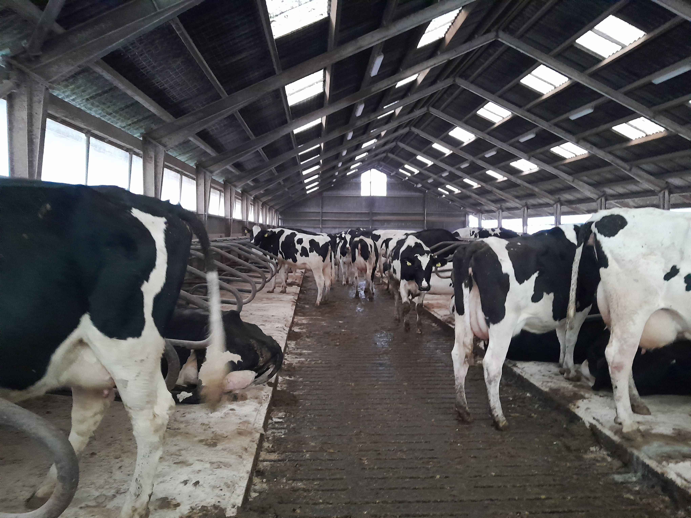
Billede. Køerne stod i denne stald mellem malkningerne.
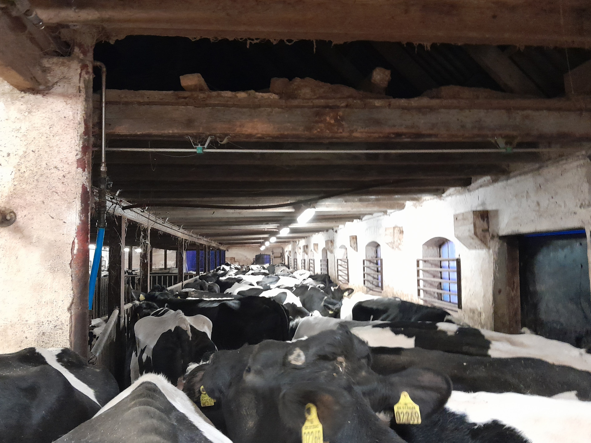
Billede. Når køerne skulle malkes, stod de samlet her og ventede på at det blev deres tur.
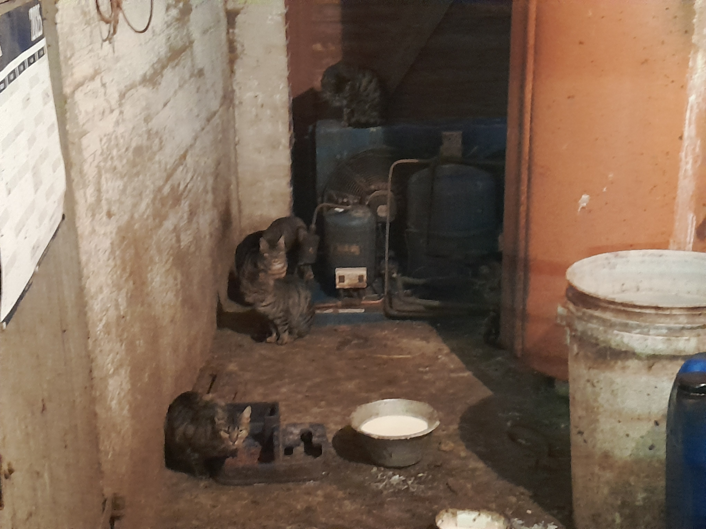
Billede. Gårdkattene sad og ventede foran det varme fyr indtil jeg kom med mælk til dem.
En dejlig ros
I sidste uge skrev landpersonen (den kvindelige landmand) til mig:
"Hvis du vil kan du også blive en dygtig landmand. Du har det i dig. Og jeg har arbejdet sammen med mange."
Og forleden skrev hun til mig:
"[Gårdejeren] siger at du klarer det så flot. Du bliver en dygtig malker siger [gårdejeren]. Og det siger han ikke så tit."
Jeg gjorde mig så meget umage som overhovedet muligt, så jeg var stolt af og glad for rosen. Det var ikke lønnen, der motiverede mig, men selve arbejdet. Jeg fik 150 kroner i timen og ingen tillæg what so ever. Der var højest 5 til 7 timer mellem hver malkning, så jeg fik aldrig hvilet eller sovet ud, og pauser under arbejdet var der ikke. Min barndomsven mente ikke, at arbejdet var lønnen værd, og han havde helt ret, men igen, så var lønnen ikke min motivator.
Min barndomsven mente ikke, at arbejdet var lønnen værd.
Videomøde med Overlægen
Jeg havde som sædvanligt frygtet videomødet med overlægen i flere dage forinden og jeg havde katastrofetanker om hvilke nye overgreb, han havde planlagt. Det var en form for psykisk vold og jeg var traumatiseret af de talrige møder i årenes løb. Jeg kunne ikke optage mødet på min mobil, som jeg brugte til videolinket og jeg havde kun min PC, hvor mikrofonen ikke virkede, så det eneste jeg kunne gøre, var at videooptage mødet uden lyd. Det var et stort problem at jeg ikke kunne dokumentere mødet, så jeg kunne imødegå overlægens løgne i journalen, men i det mindste gav optagelsen også nogle vigtige oplysninger til min fordel, for alle kunne se, at jeg var soigneret og at min adfærd var normal.
8 minutters frygt
Jeg fik overlægen og sygeplejerske Bente J på skærmen og mødet gik i gang. Overlægen så overskudsagtig ud. Jeg startede med at fortælle om mit nye job, om hvor betydningsfuldt det var og hvor glad jeg var for det. Jeg sagde, at det i forvejen var et hårdt job, samt at den antipsykotiske medicin gjorde det langt mere uoverkommeligt og hårdt for mig, men at jeg trods alt kunne varetage det forsvarligt, hvilket jeg ikke havde troet jeg kunne.
Jeg fortalte om selve arbejdets art, om timetimmet, om malketiderne, lønnen og at det fylte alt for mig på en positiv møde. Jeg sagde, at jeg stadig ikke havde råd til at afbetale gæld, til at gå til tandlæge, til forsikringer, vintertøj, sko og en ny mobil hvis min gamle og slidte gik i stykker, men at jeg med jobbet nu havde råd til mad og at min kæreste ikke skulle forsørge mig, hvilket var meget positivt. Jeg sagde, at min økonomi altid havde været mit allerstørste problem og at det nu var en smule mindre.
Det usagte
Overlægen ønskede mig held og lykke med jobbet og sagde, at han ikke havde mere på programmet. Jeg havde tænkt meget på hvad jeg ville bringe på bane, for der var rigtig meget, jeg havde på sinde, men jeg vidste, at jeg kun ville skade mig selv ved at nævne det. Det var meget bedre at skrive det til overlægen, for så kunne han ikke forvanske det eller lyve om mig, som han plejede. Jeg fik en ny tid til fejlmedicinering og så var mødet slut. Parodien varede lige under 8 minutter.
Besked til Overlægen
"Undskyld, at jeg ikke fik nævnt det under det hyggelige møde.
Jeg skal i al fredsommelighed nævne, at selvom den antipsykotiske medicin ikke umuliggør, at jeg kan arbejde, så forpester den stadig min tilværelse og påvirker mig negativt på alle planer.
Jeg har taget næsten 10 kilo på i vægt, jeg kan ikke føle glæde, jeg kan ikke koncentrere mig, og jeg er holdt op med at læse bøger og træne, samt meget mere.
Ifølge indlægssedlen er de bivirkninger, jeg oplever, velkendte, også med den dosis, jeg modtager.
Medicinen er desuden ikke indiceret, da jeg ikke lider af vrangforestillinger eller er aggressiv.
Diagnosen enkelt paranoia er grundigt tilbagevist, og det vender jeg tilbage til.
Undskyld, men jeg er nødt til at oplyse jer om det.
Rigtig god dag.
Venlig hilsen."
Og
"Jeg skriver kun nedenstående, fordi det ikke fremgik af den erklæring, der blev oplæst i retten forleden. Det er ikke en kritik og jeg håber, at det er i orden:
I forhold til diagnosen, så har flere retspsykiatere afkræftet, at jeg skulle lide af 'enkel paranoia' (eller anden form for psykose), senest Hans Raben, Peter Worm Jantzen og Kim Balsløv og det samme har mentalundersøgelsen.
Min kæreste og samlever, hendes forældre, mine forældre og mine barndomsvenner har fortalt mig, at de aldrig har oplevet mig mærkelig, påfaldende eller sindssyg.
De mails og sms'er, der angiveligt skulle være udtryk for enkel paranoia har min ene barndomsven og min far læst og de synes ikke at indholdet er psykotisk.
Jeg har ikke fået oplyst hvilke vrangforestillinger, jeg skulle lide af. Ligesom alle andre psykisk raske mennesker, har jeg ingen sygdomsindsigt, fordi jeg ikke er psykotisk.
Jeg har fjernet min dagbog (vidnesbyrd) fra nettet for længst, jeg har slettet mine konti på de sociale medier, jeg skriver ikke til myndighedspersoner eller læger og jeg færdes ikke i Københavnsområdet eller i Nordsjælland.
Jeg skriver ikke dette, fordi jeg er vred eller kværulant, men kun fordi det er vigtige oplysninger.
De bedste hilser."
Strategi
Min strategi var uændret. Jeg skulle ud af fejlmedicineringen, som forpestede min tilværelse og ud af den uproportionale og forkerte dom.
Mail til Kriminalforsorgen
Jeg skrev nedenstående mail til A i Kriminalforsorgen.
"Kære A
Jeg har nogle enkelte kommentarer vedrørende retsmødet i retten i Glostrup den 15. januar, hvor jeg forsøgte at få behandlingsdommen ophævet.
Det er ikke ment som en kritik af dig og jeg skriver nedenstående i al fredsommelighed. Så jeg håber, at det er ok, at jeg skriver og at du ikke tager det ilde op.
1. Mit sociale netværk.
Som jeg husker det fremgik det af din udtalelse, at jeg havde et mindre socialt netværk og sparsom kontakt til min familie. Dette er ikke korrekt. Jeg er samboende med min kæreste gennem snart to år, jeg har hyppig kontakt til mine barndomsvenner og har haft det hele tiden, jeg har hyppig kontakt med min kærestes forældre og ikke mindst med mine egne forældre, som jeg har set ekstra meget i julen. Jeg har også kontakt til mine tre søskende, men de har travlt med karriere og børn, så det er ikke så hyppigt som jeg ville ønske. Jeg har en del bekendte, som jeg ser, skriver med og ringer sammen med, både bekendtskaber af ældre dato og nye. Jeg har let ved at møde nye mennesker og jeg har et helt normalt socialt funktionsniveau.
2. Din udtalelse.
Min advokat bemærkede under retsmødet, at din udtalelse om mig var nærmest enslydende med Overlægens. Det undrede hun sig over. Jeg må indrømme, at det også for mig virkede som om, at det var Overlægen, der havde udfærdiget den, og det er jeg ked af, da jeg ikke kunne genkende mig selv i hverken din eller Overlægens udtalelse. Jeg synes at det er betænkeligt, hvis en ansat i én myndighed reelt bestemmer indholdet i en erklæring, som en ansat i en anden myndighed udfærdiger. Især er det et problem, hvis den ansatte i den første myndighed tager fejl eller bevidst forvansker oplysninger, som så bliver videreført i et andet regi.
Der var stor diskrepans mellem den person, jeg er og den person du fremstillede i din udtalelse. Jeg synes, at jeg har samarbejdet fuldt ud med dig og Kriminalforsorgen og jeg havde indtryk af at vores samtaler var konstruktive og foregik i en god atmosfære. Det var ikke det, der fremgik af din udtalelse. Jeg kan selvfølgelig tage fejl, men jeg er sikker på at de fleste, der hører vores samtaler vil være enige i, at din udtalelse tegnede et forkert og meget negativt billede af mig. Jeg synes også, at din udtalelse manglede væsentlige oplysninger om min baggrund og situation, som tegner et mere nuanceret billede af mig.
Du skrev, som jeg husker det, at jeg mente at jeg var kronisk fattig. Faktum er, at jeg er dokumenterbart kronisk fattig og har været det i over 11 år. Det er ikke en holdning eller følelse jeg har, men faktum og det er noget, som alle kan se ud fra mit kontoudtog. Det fremgår desuden af jeres system og af psykiatriens ditto at jeg har levet i påtvunget fattigdom i årevis. Jeg har dertil dokumenteret mine livsvilkår i min dagbog med bl.a. billeder af min saldo gennem årene, samt dokumenteret at jeg har boet i et telt i over halvandet år og sultet i perioder pga. fattigdom. Så det er et faktum at jeg har været og til dels stadig er fattig.
Jeg har ikke råd til tøj, sko, en ny mobil, PC, at deltage i arrangementer, at gå til sport, at gå i byen, kun at have råd til offentlig transport i begrænset omfang eller at gå til tandlæge, og jeg har kæmpe gæld. Og sådan har det været i over 11 år. Hvorfor bliver det bagatelliseret? Hvorfor tror man ikke, at det er psykisk ekstremt belastende? Af de måder man officielt definerer og måler fattigdom på, er jeg kronisk svær fattig. Og det har været mit største problem hele tiden.
3. Min blog.
Jeg er gennem årene blevet nådesløst behandlet af offentlige myndigheder og har fået ødelagt mit liv af psykiatriske fejldiagnoser, tvunget arbejdsløshed, stigmatisering og fattigdom mv. Jeg har gjort alt menneskeligt muligt selv, men forgæves. Jeg har været magtesløs og det eneste, jeg har kunnet, har været at skrive om mine vilkår i min dagbog. Jeg har også dokumenteret min situation med billeder og henvendelser til myndigheder etc. Det er der ikke noget forkert i at gøre. Det er faktisk helt normalt at skrive dagbog og det er en form for terapi. Desuden er det også et vidnesbyrd om overgreb og mishandling, jeg har været udsat for.
Det er ikke ulovligt, anstødeligt, psykotisk eller lignende, som Overlægen mere end insinuerer. Min dagbog er min dokumentation og mit bevis og der er absolut intet psykotisk over den. Jeg har skrevet om mishandlingen på SL10 og den uberettigede tvangsmedicinering, om min kamp for at få et arbejde og om meget mere. At Overlægen fremstiller min "blog" (som er min dagbog) som noget negativt og sygt, er forkert. Indholdet af min dagbog er ikke psykotisk og derfor er det ikke psykotisk at jeg skriver den.
Du kan jo selv læse den, hvis du er i tvivl. Overlægen har tvunget mig til at fjerne min dagbog fra nettet og det har jeg gjort. Ikke fordi jeg gør noget forkert, men fordi jeg frygter flere overgreb.
4. Min diagnose.
Overlægen har flere gange fortalt mig at jeg ikke er psykotisk, og han har også skrevet det i min journal. At han pludseligt ændrede mening skyldtes, at jeg optog en samtale med ham, hvor han sagde at jeg ikke var psykotisk, samt at han stod ved det, og sendte optagelsen til statsadvokaten med anmodning om ophævelse af behandlingsdommen. Statsadvokaten kontaktede så Overlægen og det fik ham til at tvangsindlægge og tvangsmedicinere mig. Jeg har tre optagelser med Overlægen, hvor han direkte siger, at jeg ikke er psykotisk (4. juli, 29. juli og 5. august 2025).
Overlægen har i sin udtalelse begrundet diagnosen 'enkel paranoia' med nogle mails og sms'er jeg sendte til ham i september, fordi jeg igen ikke havde penge til mad, og hvor jeg udtrykte min utilfredshed med min situation. Men de mails og sms'er har min kæreste, min ene barndomsven og min far læst og de synes ikke at indholdet er spor psykotisk. Utilfredshed over akut økonomisk nød er selvfølgelig ikke udtryk for sindssyge.
Desuden i forhold til diagnosen, så har flere retspsykiatere afkræftet, at jeg skulle lide af 'enkel paranoia' (eller anden form for psykose), senest Hans Raben, Peter Worm Jantzen og Kim Balsløv og det samme har mentalundersøgelsen. Min kæreste og samlever, hendes forældre, mine forældre og mine barndomsvenner har fortalt mig, at de aldrig har oplevet mig mærkelig, påfaldende eller sindssyg. Jeg har dertil ikke fået oplyst hvilke vrangforestillinger, jeg skulle lide af. Ligesom alle andre psykisk raske mennesker, har jeg ingen sygdomsindsigt, fordi jeg ikke er psykotisk.
5. Konklusion.
Det var en hel del og det beklager jeg. Igen skal det ikke forstås som en kritik eller kværulanteri og jeg er ikke rethaverisk eller den slags. Men jeg er desværre nødt til at berigtige oplysninger, der har stor betydning for min fremtid. Jeg håber at du forstår det.
De bedste hilsner.
Kjeld."
Opringning fra Kriminalforsorgen
A fra Kriminalforsorgen ringede til mig til formiddag. Hun ville blot høre, om jeg ønskede at klage over hendes udtalelse til retten. Jeg sagde, at jeg på ingen måde ønskede at klage over hende, at det ikke var årsagen til at jeg havde skrevet til hende, blot at jeg var nødt til at kommentere udtalelsen. Vi talte et stykke tid og endte med at ønske hinanden en god dag. Samtalen foregik i en venlig og god atmosfære og jeg var egentlig glad for at den havde fundet sted. Jeg havde frygtet, at hun havde sendt min mail vidre til Overlægen og at han ville straffe mig for den, men A lod til at lytte til mig. Jeg optog naturligvis samtalen.
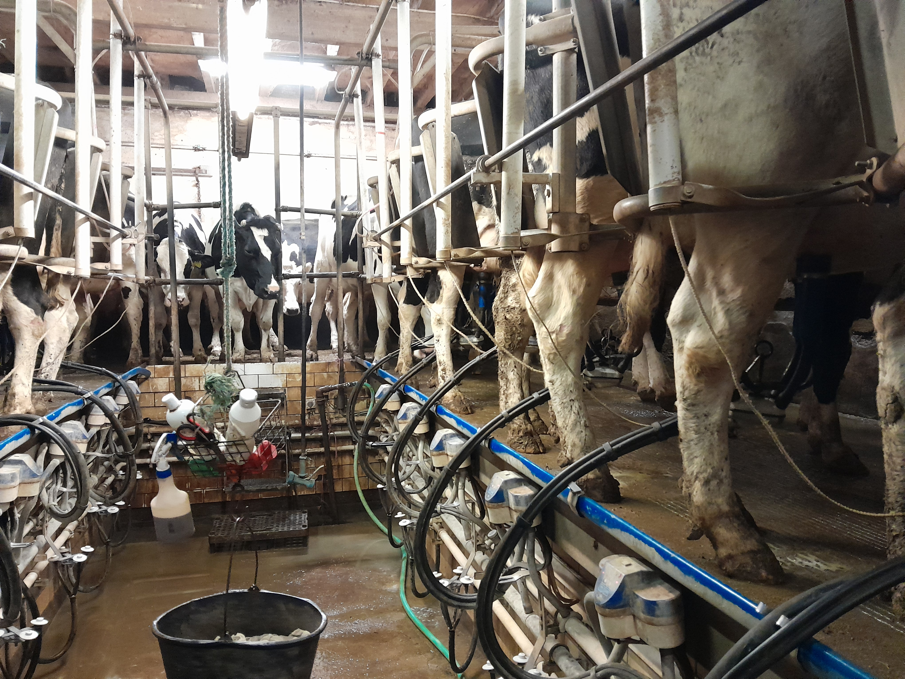
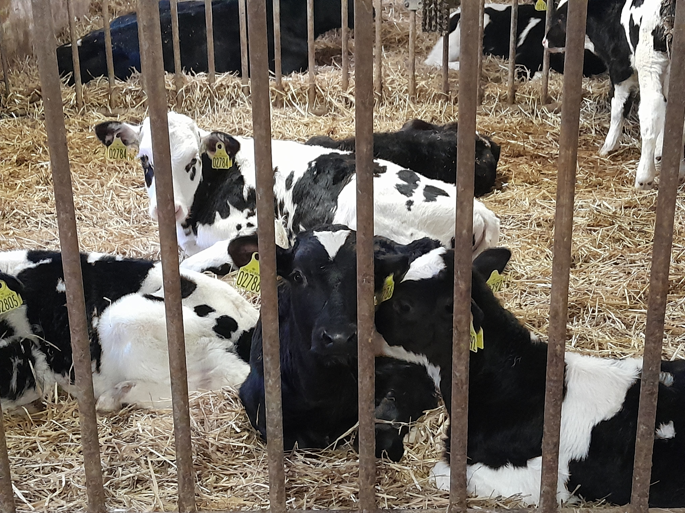
Billeder. Jeg elskede mit arbejde med køerne. Det var hårdt og ikke velbetalt, men dyrene var søde og arbejdet meningsfuldt.
Bøn til Gud
Jeg takkede Gud for at have fået malke-jobbet og jeg bad til at Overlægen stopede den unødvendige tvangsmedicinering, som ødelagde mig fuldstændigt. Jeg bad til, at dommen snart blev ophævet og til at Overlægen ikke udsatte mig for flere overgreb.
Dommens dag
Jeg fik afgørelsen af retsmødet i min E-boks i dag, men da jeg vidste, at jeg havde tabt, gad jeg ikke at læse afslaget. Når alle på forhånd vidste, at det var Overlægen alene, der besluttede resultatet i retten, så var retsmødet overflødigt, et gummistempel, en skueprocess.
Nødråb til retspsykiater
Jeg skrev et nødråb til en retspsykiatrisk overlæge, der havde erklæret og bevidnet, at jeg ikke var psykotisk. Jeg havde gjort dette enkelte gange i december og januar og intet respons fået. Det var ikke for sjov at jeg gjorde det igen. Han blev virkelig nødt til at hjælpe mig.
SMS til overlægen den 26. August 2025 - kl. 19.46
"Hej overlæge. Jeg har jo skrevet et par breve og mails til dig siden maj om min situation og prioriteter og det virker som om at du ikke tager konsekvenserne af fejldiagnosen alvorligt nok.
Ser du, jeg har rådnet op i 11 år og fylder snart 44 og intet som helst er sket. Der er løfter og hensigtserklæringer, men pt. stadig intet konkret.
At jeg har skrevet mange mails i årenes løb har skyldtes at man konsekvent har ignoreret mig, samt at mine livsvilkår har været helt groteske.
Så er det jo meget naturligt at jeg har fortsat med mailsene og det er der intet galt i.
Jeg er, som jeg har skrevet til dig tidligere, træt af at skrive. Jeg vil meget hellere have et arbejde.
Jeg kan næsten regne ud, at dine bestræbelser ikke har båret frugt? I det tilfælde er det et enormt tilbageslag for mig.
Jeg anerkender, at du ikke har udsat mig for mishandling og jeg er glad for dine hensigter. Men jeg når meget snart til et punkt, hvor der bliver nødt til at ske noget virkeligt positivt i min tilværelse.
Jeg er meget træt af at rådne op og jeg vil have en normal tilværelse som det normale menneske, jeg er.
Det er ikke urimeligt af mig at kræve det. Jeg har kæmpet for at blive læge og aldrig fejlbehandlet nogen patienter og det er ikke urimeligt at kræve min ret til at være læge igen.
Pointen er vist denne: Hvis man gør en oprigtig indsats for mig, vil det ende meget lykkeligt. Så hører ingen fra mig igen.
Men tiden løber snart ud. Sådan er det at blive ældre. Snart er det for sent og forbi.
Mvh.
Det er en falliterklæring at det overhovedet har været nødvendigt at skrive mails og sms'er til dig for at forsøge at forklare min situation. Men igen: Jeg har rådnet op i 11 år og jeg har brug for en slutdato. Jeg er RASK, hvilket du også har sagt flere gange og hvilket er åbenlyst for enhver og så er der intet at vente på."
Intet svar fra overlægen.
SMS til overlægen den 9. September 2025 kl. 12.04
"Jeg har ikke flere penge tilbage. Jeg er nødt til at låne af min kæreste. Kan du regne ud, at jeg ikke kan afdrage på sagsomkostningerne? Jeg er TRÆT af at rådne op som fattig pga. dine kollegaer og dig. Hvorfor kan du ikke fatte, at det er et enormt problem for mig? Det går simpelthen ikke længere.
Du har absolut intet som helst gjort for mig. Intet. Du har kun udsat mig for fornedrelse og ydmygelse og fattigdom. Det er flot af dig at ignorere mig. Når jeg er tilbage efter det ydmygende møde hos Kriminalforsorgen, må jeg fortælle min kæreste om realiteterne og om hvem du i virkeligheden er.
Dommen er en trussel mod min eksistens."
Konklusion
Overlægen svarer ikke per SMS. Men senere skriver han en mail til mig, hvor han skriver, at han ikke mener, at jeg har tillid til ham. Han skriver også, at han ikke mener at dommen er formålstjenestelig og at han hælder til at den skal ophæves.
Mailen tilkendegiver, at overlægen ikke opfatter mine sms'er som påfaldende, men derimod indfølelige. Overlægen forstår mig tilsyneladende godt. Men i retten den 15. januar 2026 fremgik det af overlægens erklæring, at netop mine SMS'er var udtryk for psykose.
Første løn i 11 år
Jeg modtog forleden min første løn i 11 år. Den var på lidt mere end et par tusinde kroner og det var fantastisk. Jeg havde knoklet hårdt for pengene og det var en god følelse at se dem på min konto. Der var så meget, jeg havde utroligt stort behov for at købe, helt basale ting, og det var derfor svært at vælge det, der var mest nødvendigt. Det var en milepæl at jeg havde et arbejde på normale vilkår og det var et af de bedste beviser på min normalitet. Den antipsykotiske medicin gjorde desværre arbejdet langt hårdere end det burde være, og det var forrykt at overlægen tvang den i mig, især når den ikke var det mindste berettiget. Overlægen vidste jo at jeg havde fået arbejdet, men han var lidt ligeglad.
Mail til tidligere retspsykiater
Jeg sendte i dag endnu en mail til den tidligere retspsykiater. Jeg undskyldte, at jeg skrev til ham og bønfaldt ham om at involvere sig, så jeg blev skånet for fejlmedicinering og mishandling. Hvorfor ignorerede han mig? Det var ikke for sjov, at jeg skrev til ham. Han havde erklæret skriftligt og i retten vidnet, at jeg ikke havde været psykotisk på noget tidspunkt, og når han vidste at jeg var rask, havde han så ikke pligt til at stoppe fejlbehandlingen af mig? Jeg var træt af forgæves at tigge ham om at han gjorde sin pligt. Jeg vidste, at han modtog mine mails og jeg kunne derfor dokumentere, at han tav helt bevidst.
Jeg skrev til ham og bønfaldt ham om at involvere sig, så jeg blev skånet for fejlmedicinering og mishandling.
Nådesløshed
Jeg blev behandlet nådesløst. Jeg var træt af at blive det, jeg ville have lov til ikke at blive mishandlet af myndighederne og det var et meget rimeligt krav.
Frygten for ambulatoriet
I morgen skulle jeg have depot-tvangsmedicin af sygeplejerske Bente J i det retspsykiatriske ambulatorium. Jeg fik det altid psykisk virkeligt dårligt med svær nedtrykhed og angst i flere dag før fremmødet. Jeg hadede det og kunne ikke skjule at jeg havde det dårligt, så min kæreste spurgte mig, om jeg havde det ok. Det var et mareridt, der aldrig sluttede.
Bente var en venlig bøddel. Hun var en ældre dame, der arbejdede på nedsat tid, fordi hun egentlig var gået på pension, fortalte hun. Hun smilede og forsøgte med smalltalk sidst hun udsatte mig for fejlmedicineringen og hun takkede mig bagefter hun havde sprøjtet giften ind i mig, som en høflighed og fordi hun måtte mishandle mig uden at jeg protesterede eller bebrejdede hende det. Bente gjorde noget, der var usagligt og meget skadeligt. Hun sagde ikke fra, men adlød blindt overlægen. Men det var stadig hendes ansvar.
Malkning
Jeg havde malket i nat og igen til eftermiddag. Jeg skulle også malke de næste to dage om eftermiddagen. Det var det eneste, der kunne aflede mig en smule fra at tænke på tvangsmedicinen. Jeg kom rigtig godt ud af det med gårdejeren og landmanden, vi talte godt sammen, jeg lærte dem bedre og bedre at kende og omvendt. Det var fire timers non-stop malkning, hvor jeg alene klargjorde anlæget, malkede, gjorde rent, vaskede, rensede udstyr og slanger og meget andet. Køerne fik vasket yvere med en ren klud per ko, malkeudstyret påsat og mens de malkede holdt jeg øje med om mælken løb som den skulle. Ellers skulle jeg vælge et andet program.

Billede. Den nyfødte eller nykælvede kalv stod og ventede på at få råmæklen fra sin mor.
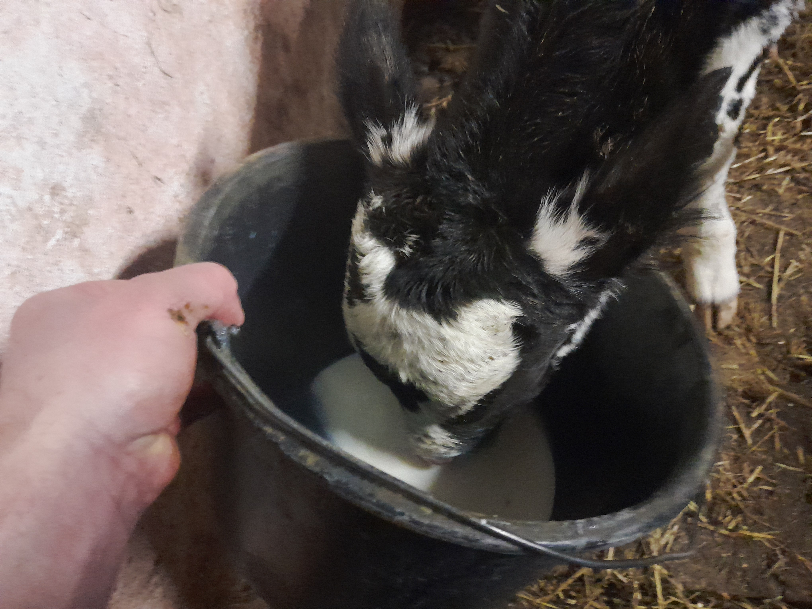
Billede. Kalven drak ivrigt råmælken.
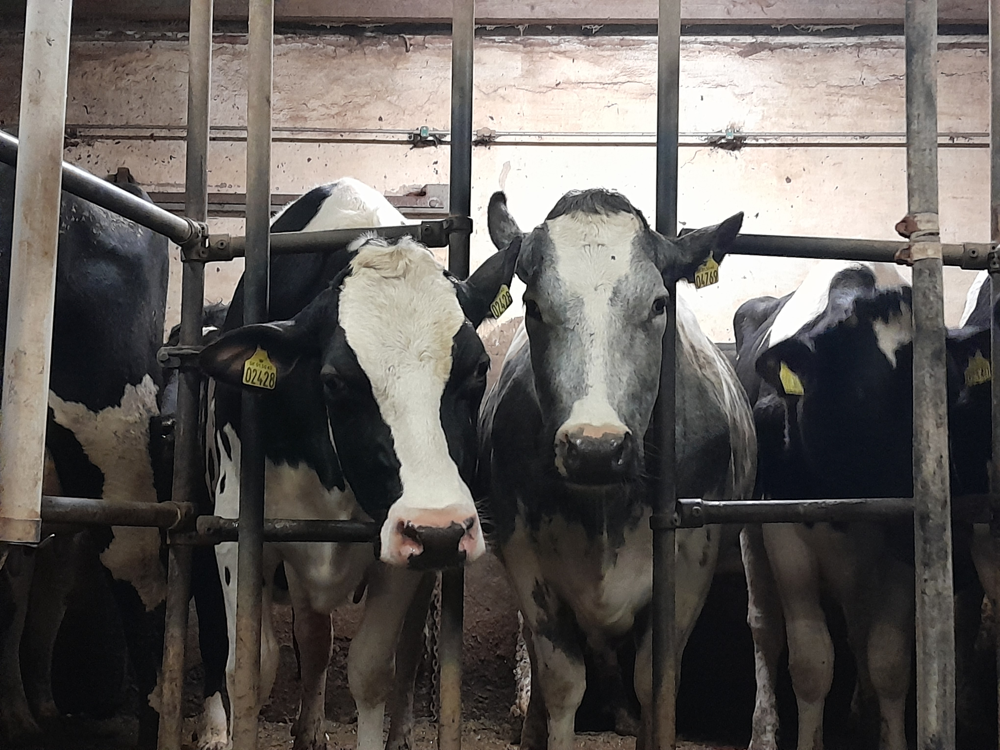
Billede. Køer, der venter på at blive malket. Til højre ses en af racen dansk blåkvæg og til venste ses racen dansk Holstein (sortbroget).
Der var seks køer på hver side af malkegraven, jeg stod nede i. Nogle køer havde bånd om anklerne. Rød for yverbetændelse, så de skulle malkes i en særskildt spand og ikke til mælketanken. Blå hvis de var svære at malke, grøn, hvis de skulle goldes (nedtrappes i ydelse) og gul, hvis de kun havde tre patter. Mange af køerne havde kun tre patter, eller nærmere tre normalt udvilkede patter og en rudimentær eller minimal pat, som ikke producerede mælk. Så skulle der en prop i en af de fire sugekopper, så resten ikke mistede tryk.
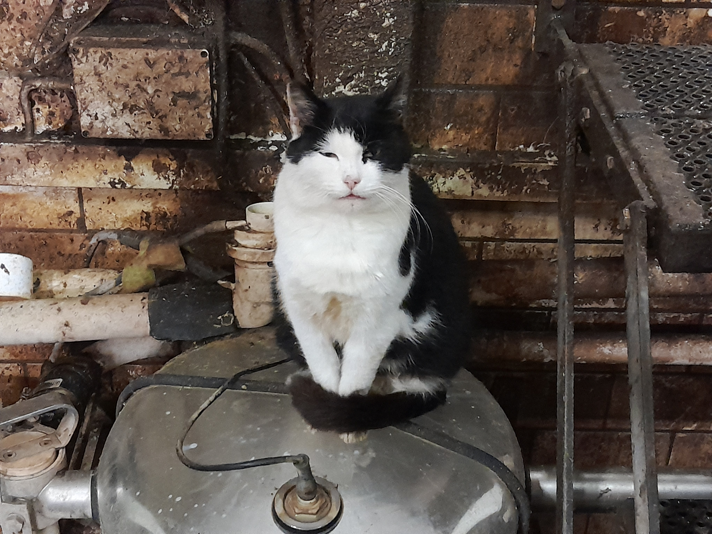
Billede. Katten Palle (der er en hunkat), som varmer sig på beholderen med den frisk, varme mælk.
Nogle af køerne syntes det var irriterende at få påsat sugekopperne og blive tørret af, hvorfor de sparkede bagud, så man skulle være hurtig og fjerne sin hånd. En del køer sked eller pissede mens de blev malket og det fik andre køer til at gøre det samme. Så var der lort og urin ud over det hele. Sådan var det bare og det gjaldt så om at undgå at få det i øjnene. Når yveret var tømt faldt malkeudstyret automatisk af og når det var sket for alle seks køer i den ene side, sprittede man patterne af på dem alle før de blev lukket videre.
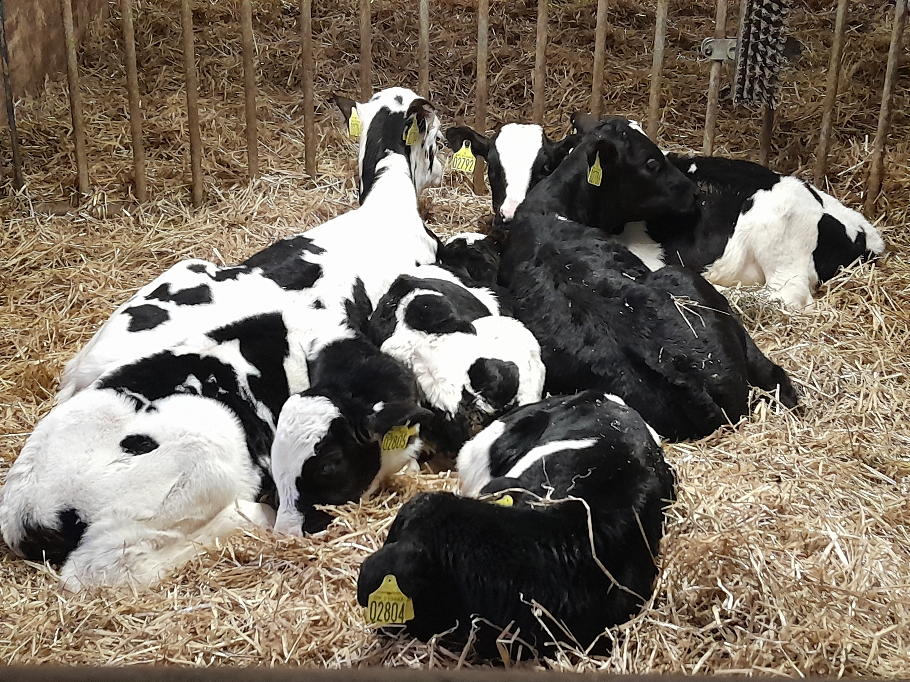
Billede. Kalve, der ligger og putter med hinanden.
Sådan var det med alle 120 køer. Nogle gange malkede køerne på begge sider og man havde et halvt minuts tid til at nusse de køer, der stod og ventede på at det blev deres tur. De havde efterhånden vænnet sig til mig og mens de slikkede mit ærme eller min hue, kunne jeg klø dem under hagen og på halsen. Enkelte af køerne var kontaktsøgende og kom selv hen til mig, andre skulle jeg nærme mig forsigtigt og så måtte jeg gerne røre ved deres muler, mens de snusede til min hånd. Jeg elskede at nusse køerne. Selvom de kunne være meget besværlige, så var mange også nysgerrige og søde. Der var også syv gårdkatte, men kun et par stykker af dem var tamme. Palle og Georg var tamme, og ofte sprang Georg op på min skulder og pressede sig ind til min hals mens jeg malkede og den spandt.
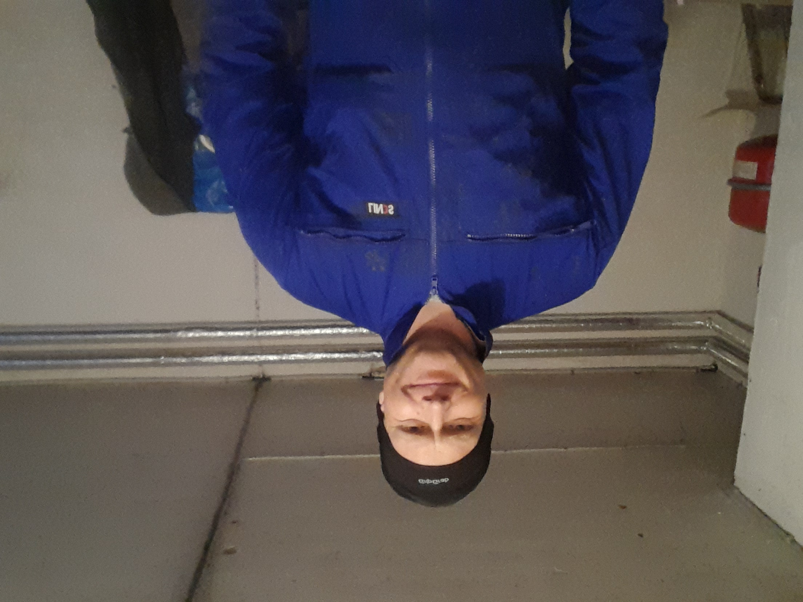
Billede. Ut. der er iklædt sin helt nye kedeldragt.
Køer og mennesker
Jeg foretrak til hver en tid køer fremfor ansatte i psykiatrien. Køerne var ikke onde, men det var personalet. Forbandet være dem. En enkelt ko var mere værd end alle ansatte tilsammen.
Jeg foretrak til hver en tid køer fremfor ansatte i psykiatrien.
Mail til Det Psykiatriske Ankenævn
Jeg sendte min dagbog fra opholdet på SL10 til Det Psykiatriske Ankenævn og min bistandsværge i dag. Jeg troede ikke at de gad at læse teksten, men i det mindste var det nu en del af sagsmaterialet. Alle kunne læse, at jeg ikke havde været det mindste psykotisk.
Tiden snart inde
Jeg blev nødt til at sende linket til denne side til så mange som muligt snart. Jeg kunne ikke holde overlægens tortur ud og nogle måtte standse hans mishandling og overgreb. Derfor havde jeg intet valg end at henvende mig til flest muligt og bede til at de greb ind og stoppede monstret.
Tvangsmedicineret i ambulatoriet
Jeg tog min kærestes bil til det retspsyiatriske ambuatorium, idet jeg skulle på arbejde kort tid efter. Jeg paarkerede ved Sikringen, hvor der både var ledige pladser og ingen tidsbegrænsning til forskel fra ved psykiatrien på den anden side ad gaden. Det var noget en ansat på et tidspunkt hhavde rådet mig til. Jeg gik direkte ind i akutmodtagelsen og henvendte mig til receptionisten og sagde, at jeg havde en aftale med sygeplejerke Bente J kl. 12.00. Det kunne receptionisten ikke forstå, da ingen havde booket et rum. Jeg gik derfor op i ambulatoriet med bankende hjerte og frygt for om man havde ændret planer og at man måske ville tvangsindlægge mig i stedet.
Nu kunne overlægen så lyve om, at jeg havde været farlig og syg.
Ingen sikkerhedsvagter
Bente sad og spiste i ambulatoriet. Det viste sig, at man ikke mente, at jeg var så farlig, at de behøvede tilstedeværelse af en ekstra sygeplejerske og vagt, hvorfor det bare var Bente, der skulle fejlmedicinere mig. Det var jo forrykt at man i det hele taget havde haft den tanke, da man intet havde at have den frygt i - jeg havde aldrig været aggressiv eller truende overfor personalet og altid været rolig og samarbejdede fuldt ud.
Det med potentiel farlighed var overlægen, der bevidst tegnede et forkert billede af mig, så jeg fremstod syg og farlig i journalen, men det havde som sagt intet med virkeligheden at gøre. Nu kunne overlægen så lyve om, at jeg havde været farlig og syg, men at medicinen havde hjulpet, så jeg nu var rolig og normal. Det var ulækker manipulation fra hans side af, og heldigvis kunne jeg med optagelser og dagbog, samt mine pårørendes vidneudsagn modbevise overlægens løgn.
Fejlmedicineringen<
Bente og jeg gik ind i et lokale, hvor hun igen smalltalkede med mig og spurgte hvordan det gik på arbejdet. Hendes far havde selv haft køer og hun ar vokset op på en gård. Bente var højere end jeg og meget kraftigt bygget. Hun lignede en, der egnede sig perfekt til at håndtere 700 kilo tunge og genstridige køer. Jeg fortalte, at jeg elskede jobbet, men at medicinen forhindrede mig i at arbejde så meget, som jeg havde mulighed for, at den sløvede mig, fjernede al motivation, at jeg ikke kunne føle glæde og ikke kunne fordybe mig eller interessere mig for noget, samt at jeg ikke længere kunne træne og desuden havde taget over 7 kilo på. Bente sagde ikke noget, men rødmede bare. Hun vidste godt, at jeg ikke havde været psykotisk, og at medicnen var en alvorlig fejl, men hun turde ikke sige overlægen imod.
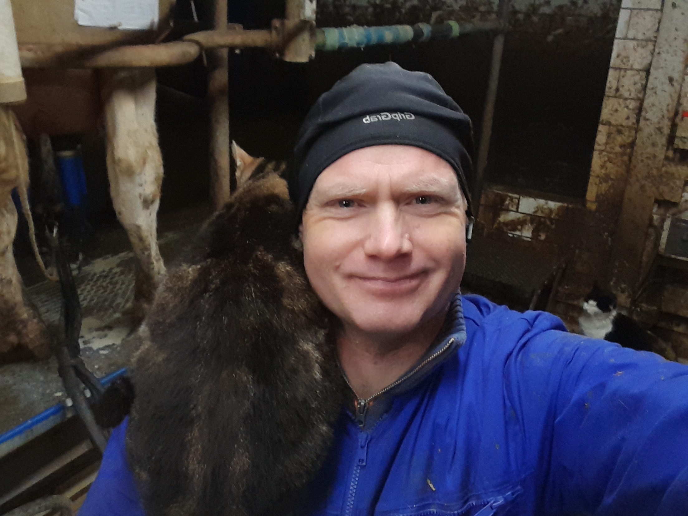
Billede. Ut. med katten Georg på skulderen.
Efter tvangen
Hele seancen tog ikke mange minutter. Jeg optog alt og som man kunne høre på optagelsen, så var tonen mellem Bente og jeg venlig. Men jeg var svært nedtrykt efterfølgende og havde lyst til at græde. Det var jo tortur, hun udsatte mig for.
Bente sagde ikke noget, men rødmede bare.
Hjertevarme
Jeg kørte fra Slagelse og gennem det snedækkede Vestsjællandske landskab ad snørklede smalle veje til gården. Gennem flere landsbyer med hver sin kirke og gadekær. Jeg ankom til gården og hilste på landmanden, der havde sin voksne søn med som ekstra hjælp, da der var klovbeskærere i dag. De to kvinder havde medbragt en stor grøn metalboks, som køerne en efter en blev ført ind i, så de kunne få pedicure. Jeg havde et rigtigt godt forhold til landmanden og jeg blev mødt med hjertevarme af hende og gårdejeren. Jeg kom godt ud af det med langt de fleste mennesker, jeg mødte. En markant undtagelse var enkelte samvittighedsløse retspsykiatere. At jeg kom godt ud af det med andre skyldtes, at jeg ikke var paranoid.
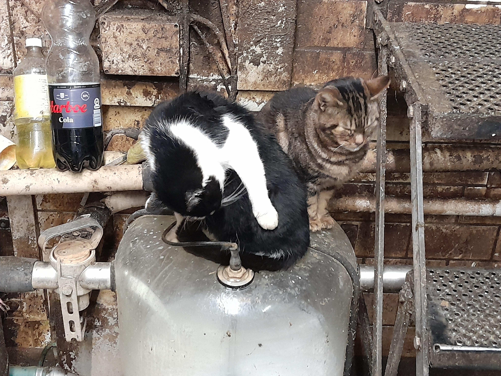
Billede. Georg og Palle, der varmer sig på den mælkebeholderen.
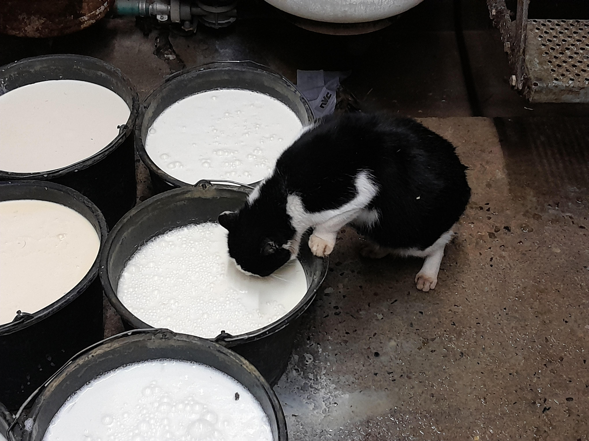
Billede. Palle, der tager for sig af retterne.
En sandsynlig slutning
Jeg kunne ikke holde fejlmedicineringen ud og det stod klart, at det måtte slutte på et tidspunkt. Jeg vidste, hvordan og det gav mig en følelse af ro og tilfredshed. Man skulle ikke udsætte nogen mennesker for fejldiagnoser og fejlmedicinering med antipsykotisk medicin. Man skulle ikke udsætte nogen for den tortur det var. Især skulle man ikke se passivt til, mens det skete, hvis man var vidne til det. Jeg vidste godt, hvordan det kom til at slutte, ja. Og i den forbindelse ville rigtig mange mennesker læse denne tekst.
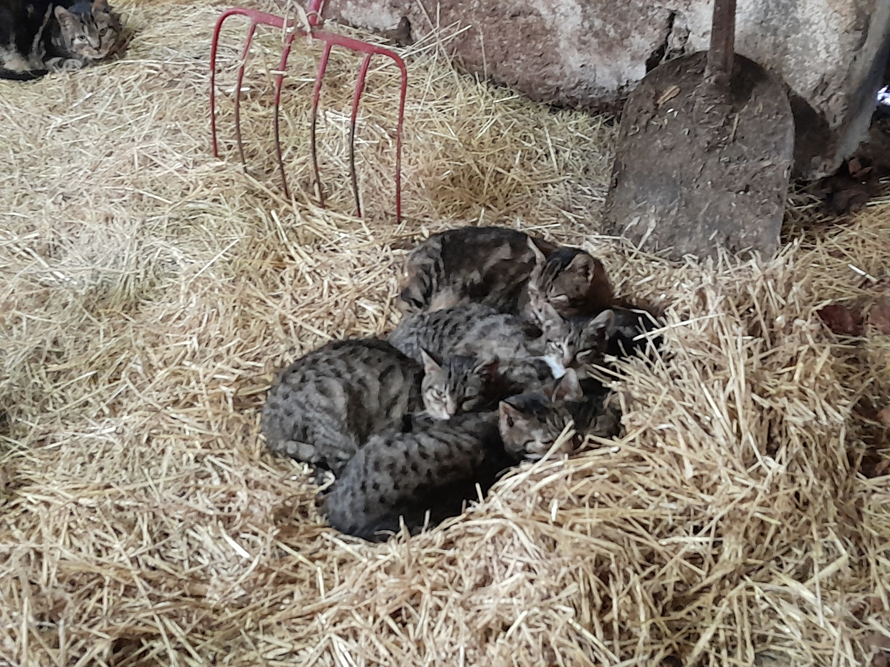
Billede. Gårdkattene, der får sig en lur.
Opringning af bistandsværge
Det var ydmygende, at jeg skulle have en bistandsværge al den stund, at jeg ikke var syg og vidste mere om psykiatri end bistandsværgen gjorde, men det, som Frank kunne gøre var trods alt at få myndighederne i tale og det var fint nok. Han ringede til mig, mens jeg var på arbejde, men jeg skrev til ham at jeg ville ringe til ham i morgen, hvilket var ok med ham. Det drejede sig om Ankenævnet, som han havde talt med.
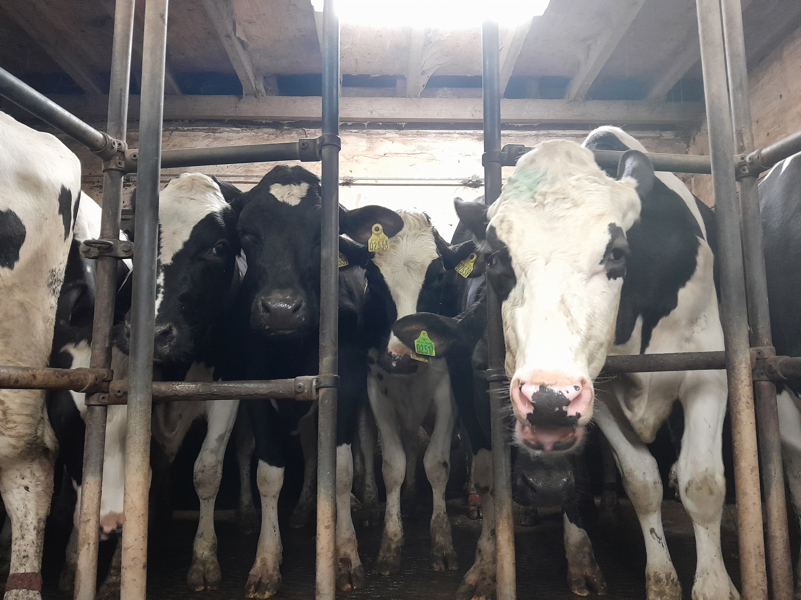
Billede. Nysgerrige køer, der venter på at blive malket.
Eftermiddagsmalkning
Jeg havde en ekstra malkedag i går og i dag og det var sammen med landmanden, idet gårdejeren havde nogle aftaler. Hun og jeg talte om alt muligt, mens vi stod i malkegraven og satte sugekopper på patterne, vaskede, sprittede af (med jod, ikke sprit) og meget andet. Hun skulle bare vide! Hun var et godt menneske, der virkeligt kærede sig om køerne og behandlede dem rigtigt godt. Hun var samtidig også en af de sejeste kvinder, jeg havde mødt. Hun var et par år yngre end jeg, fysisk stærk og mentalt særdeles robust, samtidig med at hun havde et meget stort hjerte.
Hun arbejdede nat og dag og varetog driften af gården stort set alene.
Den sejeste kvinde
Landmanden arbejdede næsten hver eneste dag året rundt. Malkningen var kun en del af hendes arbejde på gården og hun stod for den, når jeg ikke var på arbejde. Hun havde samtidig to børn og en mand og hun passede tillige hjemmet. Hun arbejdede nat og dag og varetog driften af gården stort set selv. Hun havde gjort det i flere år og hun beklagede sig ikke. De smarte og veluddannede kvinder, der led under "mental load", arbejdede halvt så meget som landmanden, nærmere en tredjedel så meget som hende, og de tjente en del mere. De elskede at stå frem som stakkels ofre, men de var priviligerede og møg forkælede og havde intet at have deres klynkeri i. De ville knække fuldstændig efter en måned i landmandens sko. Landmanden var sej.
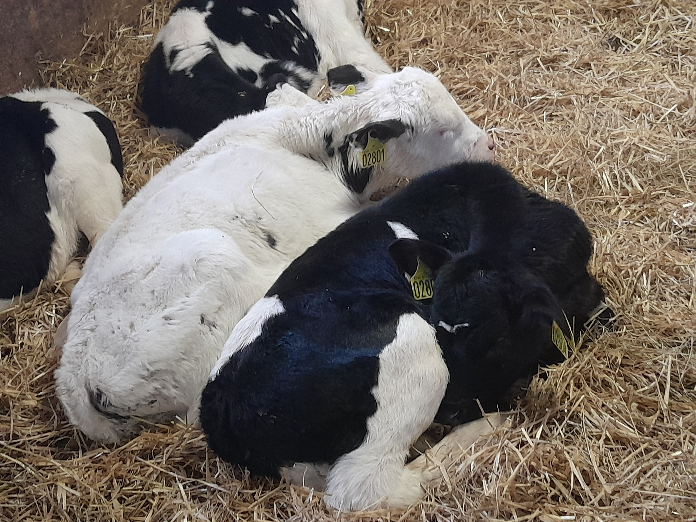
Billede. Kalve, der putter sig med hinanden.
Bistandsværgen
Jeg tale med bistandsværgen i dag. Han fortalte, at jeg formentligt ville få en afgørelse fra Ankenævnet inden for en måneds tid. De seneste oplysninger, jeg havde sendt til Ankenævnet var han ikke sikker på blev indkluderet i sagen.
Optagelser fra SL10
Man måtte ikke have mobil eller PC på SL10, så jeg kunne ikke optage overlægen, men til gengæld havde min kæreste optaget de flest telefonsamtaler mellem hende og jeg mens jeg var tvangsindlagt, og de optagelser var objektive beviser på at jeg var rask. Disse optagelser gik jeg nu i gang med at transskribere. Overlægen begik et alvorligt overgreb mod mig og nu blev det igen dokumenteret. Jeg kunne garantere, at man ville lytte til mig på et tidspunkt.
På vej til arbejde i kulden
Natmalkning - minus 16 grader
Jeg gruede for hvordan køerne håndterede nattens frostgrader, og bekymringen satte sig som en klumb i maven på mig i timerne indtil jeg skulle afsted. Jeg tænkte på de stakkels dyr, som stod i en stald, hvor hele den ene langside var åben så kulden gik direkte ind og som ikke beskyttede for blæsten, og det skar mig i hjertet. Jeg ville ønske at landmanden satte halmballer op foran den åbne side i stalden, så køerne i det mindste fik læ, men jeg vidste at det ikke ville ske og at jeg ikke skulle foreslå det.
Køer, kalve og kulde
Køerne genererede meget kropsvarme, men de afgav den også igen og deres pels var meget tynd. Kalvene var jeg ikke nær så bekymrede for, selvom de ikke tolererede kulden så godt som de voksne køer, for de var dels i en lukket stald, med meget hø de kunne putte sig i, og dels gik de sammen i større båse og kunne varme hinanden. Ofte lå de netop i en bunke i båsen og puttede, så de skulle nok klare den.
Kulden prikkede i huden, da jeg satte mig ud i bilen og indholdet i en sidavandsflaske der lå på forsædet var frosset til is. Det var ubehageligt koldt, men gudskelov vindstille og smukt stjerneklart. På gården mødte jeg gårdejeren som jeg plejede. Han gav altid en hånd med at genne køerne frem og tilbage til malkning. En roehakke maskine var gået i udu pga. kulden, sagde han. Inde i malkegraven var kludene stive af frost og der var is på udstyret. Jeg frøs meget og kunne ikke mærke mine fingre. Køernes gylle var frosset til is.
Kollapset ko
Køerne i stalden virkede sløve. En ko lå i sin bås og rystede. Da hun skulle op valkede hun på benene og ude på gulvet kollapsede hun og blev liggende. En af de andre køer kom hen til hende og bøjede sit hoved ned til hende. Det var hjerteskærende. Hvad syntes gårdejeren vi skulle gøre? Hun skulle blive liggende og så skulle vi tage os af hende når de andre køer var ovre til malkning. Jeg havde det rigtigt dårligt med det og spurgte om vi ikke skulle ringe til landmanden, så hun kunne hjælpe os. Det var der ingen grund til, fik jeg at vide.
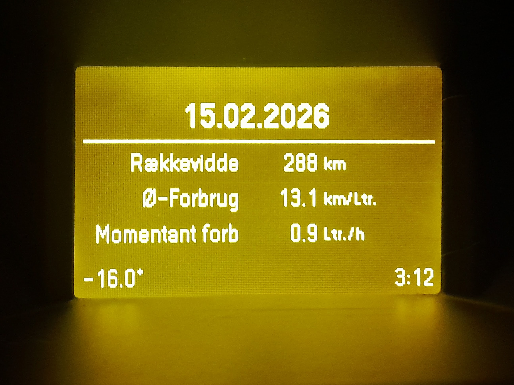
Billede. Det var eventyrligt koldt, da jeg var på arbejde. Jeg var meget bekymret for hvordan køerne havde det.
Efter et par minutter rejste koen sig på usikre ben. Jeg blev utroligt lettet. Hun gik langsomt hen til bagtroppen af de andre køer, der stod og ventede på at blive malket. Det var virkeligt godt, men jeg havde det stadigt dårligt over kulden. Det var ikke rart og jeg frygtede under hele malkningen at flere køer skulle blive dårlige. Dampen stod op fra køerne og jeg kunne også se min egen ånde, mens arbejdet foregik og sådan havde det ikke var før.
Jeg frygtede så meget for svaret at jeg ikke turde google hvor meget kulde køer kunne tåle, og prøvede bare at fokusere på at udføre mit arbejde så godt som muligt. At køerne stod tæt sammen i den lukkede stald hvor malkningen fandt sted, tænkte jeg var rigtigt godt for dem, så de kunne få varmen. Jo længere tid de stod sådan, jo bedre. Men jeg kunne omvendt ikke trække tiden ud, desværre. Kalvene lå ganske rigtigt og puttede sig ind til hinanden.
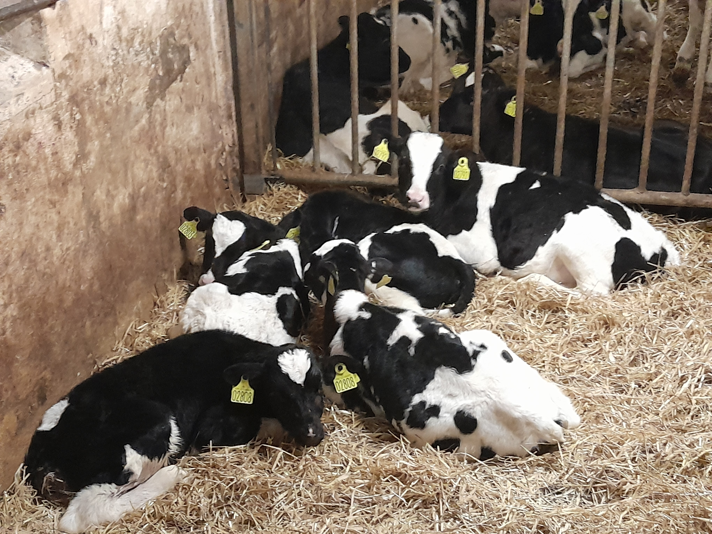
Billede. Kalvene var jeg ikke så bekymret for som de voksne køer, da de lå og varmede hinanden i høet.
Jeg fik den ko, der var kollapset ind i sygeboksen. Det var en bås i samme lukkede stald, hvor kalvene var, og hvor der var massere af hø og vand. Den gik og virkede nærværende, åd og drak grådigt, så den var ikke akut dårlig, men den fortjente at komme sig efter kollapset, syntes jeg. Da malkningen var overstået uden yderligere problemer, havde jeg det noget bedre. Der var stadigt koldt med minus 11 grader, men det ville blive varmere i løbet af dagen, så køerne var i sikkerhed.
Det var først da jeg var kommet hjem om morgenen at jeg undersøgte hvor meget kulde køer kunne tåle. Hvis det ikke blæste, hvis der var rigeligt med mad og vand og hvis køerne ikke var våde, kunne malkekøer tåle op til 20 minusgrader i en kortere periode. Det beroligede mig. De køer var seje dyr. Respekt for dem.
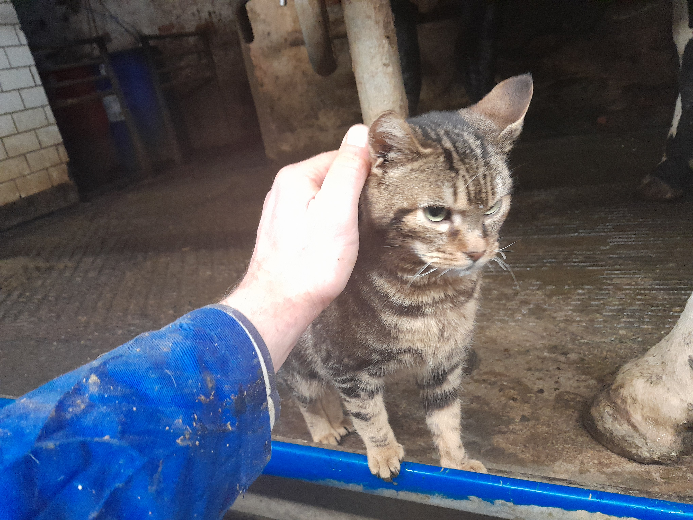
Billede. Gård katten Georg sad ofte og fulgte med i malkningen. Den sprang som regel op på min skulder og pressede sig ind mod min hals, mens jeg malkede.
Videomøde med overlægen
Min kæreste ville stadig ikke deltage i møderne med overlægen. Det var alt for voldsomt for hende at overlægen var så modbydelig overfor hende og jeg. Det burde være et rødt flag, da min kæreste var et meget robust og normalt menneske, og jeg havde skrevet det til overlægen, men han havde naturligvis ikke kommenteret det. Oplysniger fra pårørende var ellers essentielle for især psykiatere.
Faktisk dialog under lægesamtalen
Kjeld: "Ja, altså hvis I undrer jer over, at jeg sidder her i jakke og så det rum, så er det fordi at min kæreste hun synes det var så ubehageligt at deltage i sidste møde, så jeg er gået over i laden, som er uopvarmet, så det er derfor jeg sidder med jakke på."
Overlægen: "Men det går godt med jobbet?"
Kjeld: "Ja, det synes jeg. Altså arbejdsgiver [..] de behandler mig som det normale menneske, jeg er, og som jeg altid har været. Og det er, det er jo befriende. I psykiatrien eller retspsykiatrien, der er det en form for psykisk vold, at jeg bliver påduttet en diagnose, som jeg ikke lider af [..] Men de her mennesker her, de behandler mig med en almen venlighed, ligesom også jeg behandler dem med venlighed og respekt, og det er så befriende og skønt at opleve, og det er jeg taknemmelig for."
"Det går godt med arbejdet. Der er mange opgaver eller procedurer. Det er ikke kun at malke [..] det er både før og efter malkning med afspritning og afvaskning [..] Igen så er der et problem med den hér medicin, og det er jo det, jeg har jo fortalt dig om. Jeg skal ikke gennemgå det hele igen [..] Jeg tror, jeg har sagt, at jeg kan ikke føle nogen glæde eller tilfredshed, motivation, lyst, interesse, alt det, der giver de fleste mennesker værdi i livet, det er ligesom fjernet med medicinen. Men noget der i forhold til arbejdet er slemt, det er jo det der med, at jeg er mere udmattet. Altså jeg føler mig kronisk udmattet og træt [..] Jeg kan godt klare det, men det er meget, meget hårdt."
[Overlægen prøver at bagatellisere den antipsykotiske medicins skadelige virkning på mig.]
"Det hér, det er en udmattethed, som er meget forbundet med den antipsykotiske medicin. Så jeg er ikke i tvivl om at det skyldes den [..]. Bare for at sige, jeg lytter til, hvad du siger, men det er den antipsykotiske medicin, der gør, at jeg er udmattet på den her meget karakteristiske måde."
Overlægen: "Så skal jeg lige høre, og det er standardspørgsmål. Har du haft nogle udfordringer med myndigheder eller andre nogle konflikter?"
Kjeld: "Jeg har ikke nogen konflikter med nogen som helst myndigheder. Det er jo bare et faktum. Altså jeg kommunikerer slet ikke med nogen myndigheder."
Overlægen: "Nej, men du har en god dialog med din bank for eksempel, ikke?"
Kjeld: "Ja. Ja. Jeg er utrolig taknemmelig for den rådgivning, jeg har fået af banken. Det er, at jeg oplever rigtig god service. Og jeg har fået hurtigt svar, så det var også meget positivt."
[Jeg spørger A fra Krimonalforsorgen, om der er mere jeg kan gøre, som er gavnligt i hendes optik, udover mint arbejde, men det mener hun ikke. As rolle i mit forløb er negligabel, hun gør intet, udover at copy-paste Overlægens konklusioner. Men med mit spørgsmål ved bliver A mindet om, at jeg samarbejder fuldt ud.]
Kjeld: "Må jeg ikke sige noget, der er meget positivt? Jeg vil gerne takke for at jeg nu kan komme op til vores samtaler uden vagter og uden akut modtagelse og alt det der, det vil jeg bare sige tusind tak for, det er jeg rigtig glad for."
Lydbøger
Jeg lyttede meget ofte til lydbøger på Mofibo og ereolen, og genrene var ret forskellige. Jeg lyttede mens jeg malkede, kørte bil, var hjemme, forsøgte at sove, ja, så meget og ofte jeg kunne slippe afsted med det. Mit liv var så indholdsløst, at jeg gjorde alt for at drømme mig væk og her gjorde lydbøgerne stor gavn.
Carl Madsen
Jeg havde læst advokat Carl Madsens bog om især den tossede retspsykiater Max Schmidt og også noget om Carl Madsen og jeg havde stor sympai for manden. Den voksede, da jeg hørte lydbogen om ham. Carl Madsen havde stor social indignation og et tilsvarende stort hjerte, humor og så lod han til at hade snobber, overklassen og magten. Jeg havde det på samme måde. Carl Madsen var et stort forbillede. Men jeg var absolut ikke kommunist som han.
Blødsødenhed
Jeg var blevet pint og mishandlet så længe og så groft, at jeg var blevet blødsøden. Men jeg var meget selektiv blødsøden. Dyr, især køer og hunde, der blev mishandlet, kunne jeg slet ikke holde ud bare at tænke på. Køer, der lå i minus 16 graders kulde i en åben stald, skar mig i hjertet, også selvom de kunne tåle det. Mennesker, der var meget fattige og udsatte, sagesløse børn, der blev vanrøgtet, de allersvageste, dem var jeg blødsøden overfor. Jeg kunne ikke holde ud at tænke på hvor modbydelige mennesker kunne være overfor hinanden og overfor dyr.
Nådesløshed
Men jeg var samtidig klar over, at jeg måtte være så stærk som overhovedet mulig, hvis jeg skulle være i stand til at gøre noget for dem, mit hjerte blødte for og for mig selv. Det hjalp ingen at jeg var svag og blødsøden. Jeg ville så gerne hjælpe dem, der havde det værst, mennesker som dyr. En blødsøden person var ikke til nogen hjælp. Dem, der mishandlede andre, var nådesløse. Kun ved at være nådesløs overfor dem, kunne man bekæmpe dem.
Had
Når nu jeg blev mishandlet af den nådesløse Overlæge og ignoreret af alle andre, der var lige så nådesløse, så voksede mit had. Jeg ville aldrig vise de svin svaghed og de skulle ikke få mig ned med nakken. Overfor den slags mennesker skulle jeg være nådesløs.
En vanskelig forklaring
Ovenstående lød nok som volapyk, men det var ikke nemt at forklare hvordan jeg havde det. Jeg var dog sikker på, at man alligvel forstod mit budskab. Og jeg var helt sikker på, at man kom til at læse det, jeg skrev her.